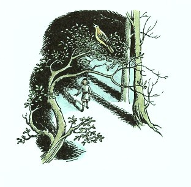
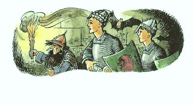
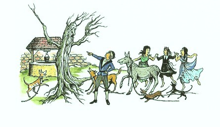

| [C・S・ルイス／瀬田貞二] ナルニア国物語2 | |
| C・S・ルイス／瀬田貞二 | |
| (2015) | |
|
ナルニア国物語２
カスピアン王子のつのぶえ
Ｃ．Ｓ．ルイス作／瀬田貞二訳
|
も く じ
はじめて「ナルニア国物語」を読むかたに
１ ここは島だ
２ むかしの宝ぐら
３ 小人の朝ごはん
４ カスピアン王子の話
５ カスピアンの冒険
６ かくれ里
７ もとナルニア、おいつめられる
８ 島から本土へ
９ ルーシィが見たもの
10 ライオンが帰ってきた
11 ライオン、おたけびをあげる
12 わるい魔法と、ふいの裏切り
13 一の王、陣頭に立つ
14 いたるところ大いそがし
15 アスラン、空中に戸口をかける
はじめて「ナルニア国ものがたり」を読むかたに
「ナルニア国ものがたり」は、その一冊一冊が、どれを読んでも、それだけで一つのまとまったおもしろい本になっているばかりでなく、全部の七冊を通してみると、これが全体でまた一つのまとまりのある大きな物語になっています。そして、その全体を通して、ナルニアという国が、この地上ではないどこかに、まず生まれ、かずかずの世代をかさねて、さまざまな王たちにおさめられたのにち、さいごの戦いをへて消えうせる、というありさまを知ることができます。その全体の歴史を、年代表にしていえば、つぎのとおりです。
ナルニア生まれる──偉大なライオンのアスランがナルニアをつくります。ナルニアのつくられるありさまは、人間界からきたポリーとディゴリーが見とどけます。ただ、この子たちが人間界からくる途中で、わざわいのたね（妖魔・悪）を、いっしょにこの国に持ちこんでしまい、そのつぐないのために、遠いリンゴをとりにいく冒険がともないます。（『魔術師のおい』）
数世紀のち──白い魔女（なぜこれがきたかは前段でわかります）が、ナルニアを永遠の冬にします。人間界から、ピーターたち四人の子がきて、アスランとともに、魔女の力をくだきます。（『ライオンと魔女』）
ピーター王のころ──ナルニア全盛時代のある事件。ものをいう馬ブレーとその友のシャスタが、カロルーメンという戦ずきの国から、ひろい砂漠をよこぎってナルニアに急をしらせます。（『馬と少年』）
数百年のち──テルマール人たちがナルニアをおさめたころ、ピーターたちの助けをかりてカスピアン王子がナルニアをよみがえらせます（『カスピアン王子のつのぶえ』）
カスピアン王三年──のちに航海王とよばれるカスピアンが、ゆくえ不明になった七卿をさがしに「朝びらき丸」で東の海に大探検をします。これに、人間界からエドマンドとルーシィ、ほかにいとこのユースチスが加わります。（『朝びらき丸東の海へ』）
カスピアン王七〇年ごろ──人間界のユースチスと学校ぎらいの少女ジルが、沼人とともに北方の山地をこえて、遠く巨人の国を通って地下にとらわれた王子を助けにいきます。（『銀のいす』）
チリアン王のすえごろ──ナルニアがくずれさります。人間界からは、ポリーとディゴリー、ピーターとエドマンドとルーシィ、ユースチスとジルが加わります。おそるべきタシの神もあらわれ、カロルーメン軍とナルニアが戦います（『さいごの戦い』）
各年代のうしろに、カッコで記してあるのは、「ナルニア国ものがたり」の各篇の名です。そして、各篇は、それぞれの時代の一こまをまとまった物語として記していますが、こうしてならべてみますと、全体が、ナルニアのはじめからおわりまでを結ぶ大きな川のような、長篇の空想物語、大ファンタジーになっていることがよくわかります。
カスピアン王のつのぶえ
１ ここは島だ
むかし、ピーター、スーザン、エドマンド、ルーシィの四人の子どもたちが、ふしぎな冒険をしたお話は、『ライオンと魔女』という本に書かれています。四人が、ふしぎな衣装だんすの戸をあけて、なかにはいると、このわたしたちの世界とまるでちがった世界にはいっていて、そのナルニアという国で、長いあいだ王、女王になった話です。そのナルニアで、たいへん長い年月、政治をおこなっていましたのに、また衣装だんすの戸を通ってイギリスに帰ってきてみますと、そのあいだに少しも時間がたっていないように思われたのです。とにかく、四人がいなくなったことに気がついたひとはひとりもありませんでしたし、子どもたちは、ひとりの賢いお年よりに話したほか、だれにもそのことをいいませんでした。
さて、それから一年たって、いまその四人の子どもたちがある日、ある鉄道の駅のホームで、四人のまわりにトランクだのおもちゃ箱だの、家からのこまごました品物の荷物だのをつんで、汽車を待っているところでした。じつはこの四人は、学校の寄宿生活にもどる途中で、家からいっしょに、この乗りかえ駅まで汽車に乗ってきたところですが、ここで、あといく分か待ちますと、女の子たちが乗る汽車がきますし、半時間すれば別の汽車がついて、男の子たちはそれに乗って、わかれわかれになるのです。いままで汽車にいっしょに乗ってここにくるまでは、たのしい旅行のような気もちがしましたが、もうすぐさよならをいって、べつべつの方角へわかれていくとなると、いまさらに休みが終わったこと、また学校が始まるということが思いだされて、みんななんだか気もちがめいってしまって、話をすることばが見つからないようでした。とくにルーシィは、はじめて学校の寄宿舎へはいるのです。
駅は、人気がなくて、眠そうな、いなかの駅でした。プラットホームには、四人のほかにだれもいませんでした。とつぜん、ルーシィが、ハチにさされたように、キャッと叫びました。
「どうしたの、ルー？」とエドマンドがいって、こんどはそのエドマンドも、それきりいいさして、「おお！」と叫び声をあげました。
「いったい、どうして──」とピーターがいいかけ、ピーターもあとのことばを、ふいにたちきると、そのかわりに、「スーザン、よせよ、どうしようというのさ？どこへ引っぱっていくつもりなの？」といいました。
スーザンは「わたし、あんたにさわらないわ。それどころか、だれがわたしを引っぱるんでしょ。あ、あ、あ、やめて！」と叫びました。
みんな、おたがいの顔が、まっさおになっていくのがわかりました。
「ぼくも、それと、同じ、なんだ。」とエドマンドが、息もきれぎれにいいました。「どこかに、引っぱられて、いく、みたいだ。すごい力だぞ！う、また、はじまった。」
「わたしも、よ。」とルーシィがいいました。「ああ、わたし、とてもだめ！」
「気をつけて！」とエドマンドが声をはげましていいました。「みんな手をつないで、しっかり組もう。これは、魔法だ。感じでわかる。さ、早く！」
スーザンもいいました。「ええ、さ、手をつないでちょうだい。ああ、そんなに引っぱるのやめて！あ、あ、あ！」
つぎの瞬間、荷物も、ベンチも、ホームも駅も、何もかもすっかりなくなってしまいました。そして、四人の子どもたちは、手をにぎりあい、息をはずませて、木のしげみに立っていたのです。木がひどくこんもりとしげっていて、枝がはりだして四人にふれ、ほとんど動けないくらいでした。四人は思わず目をこすって、ふかい吐息をつきました。
ルーシィがまず、声をあげました。「ああ、ピーター、わたしたち、ナルニアにかえったんだと思わないこと？」
「どこかまったくわからないよ。こんなに木がしげっていたんでは。すぐ目のまえも見えないよ。木のないところへ出ようじゃないか。そんなところがあるかどうか、わからないけど。」
そうとうに奮闘して、イラクサやバラのとげにひっかかれはしましたが、四人はしげみからぬけだしました。すると四人はまた、あっとびっくりしてしまいました。こんどはどこもかも明るくなって、いく足か歩くうちに、森のはずれに出てしまい、そこから、砂浜を見おろしているのです。数メートルさきには、鏡のように静かな海が、この砂浜にさらさらという音もたてないほど、かすかなさざ波をよせるばかりです。見わたすかぎり、陸がなく、空にはひとひらの雲もありません。お日さまを見ると、朝の十時ごろと思われるあたりにかがやき、海も、目がくらむほど明るい青でした。一同は立ったまま、潮風のかおりをかぎました。
「たまげたね！ こいつは、すごいや！」とピーターがいいました。
五分もたつうちに、だれかれもはだしになって、つめたいきれいな水にふみこんでいました。
「ごたごたした汽車に乗りこんで、ラテン語やフランス語や代数の授業に帰るよりゃ、よっぽどいいや！」とエドマンドがいいました。そしてそれからかなり長いあいだ、話をすることなく、水しぶきをあげたり、エビやカニを追いかけまわしたりするばかりでした。
やがて、スーザンがいいました。「でもね、とにかくわたしたちは、何かこれからさきすることを考えておかなければならないわ。そのうちにすぐ、何か食べたくなるにきまってるものね。」
「ぼくたち、お母さんが汽車のなかで食べるようにこしらえてくれたサンドイッチがあるよ。」とエドマンドがいいました。「すくなくとも、ぼくはじぶんの分をもってるさ。」
「わたしはないわ。わたしのは、小さな手さげにはいってたの。」とルーシィ。
「わたしもよ。」とスーザン。
「ぼくのは、上着のポケットだ。浜においてある。」とピーター。「じゃ、四人にお昼の弁当がふたり分だ。あんまりうまいぐあいじゃないぞ。」
「いまはわたし、食べるものより、飲みもののほうがほしいわ。」とルーシィがいいました。
するとみな、暑いお日さまにてらされて潮水をはねかして遊んだあとでは、だれでものどがかわくように、にわかにヒリヒリとのどがかわいてきました。
「難破した時のようだな。」とエドマンドがいいました。「本で読むと、難破した者はみんな、島で清水のわく泉を見つけるよ。ぼくたちも、泉を早く見つけようよ。」
「それじゃ、あの木のすごいしげみに帰らなけりゃいけないって、いうの？」とスーザン。
「そんなことないさ。もし川が流れてるなら、川はどこかで海に流れこんでいるにちがいないから。浜を歩いていけば、ぼくたちも川にたどりつくにちがいないよ。」とピーター。
そこでみんなは、ぴちゃぴちゃと水をわたり、しめったたいらな砂の上をふんで、足のもぐる暖かい砂をくずしながら、もとの場所へ帰って、くつしたとくつをつけました。エドマンドとルーシィは、くつなどをそこにおいたまま、はだしで探検したかったのですが、スーザンに、そんなばかげたことをするなといわれました。「くつもくつしたも見つけられないかもしれないのよ。それに夜になって寒くなってごらんなさい。きっと、くつがほしくなるわよ。」とスーザンがいいました。
こうしてみんなはふたたび服をつけたりして、右手に森、左手に海を見ながら、海岸をたどりはじめました。時々カモメが飛んでくるほかは、この上なく静かでした。森はしげりにしげりあっていましたから、その中をうかがうことができません。森の中もしんとして、何も動くものがありません。鳥一羽、いや虫一ぴきもいないようでした。
貝や海草やイソギンチャク、忘れ潮にいる小ガニなどは、みんなの気をひきましたが、のどがからからでは、そんなものをいつまでも眺めていられません。つめたい海水で足を洗ってから、こんどは足がばかに熱く、重くなってきました。スーザンとルーシィは、レインコートをもっていました。エドマンドは魔法の力でつれてこられるちょっと前に、駅のベンチにコートをぬぎすててきましたから、ピーターとかわり番に、ピーターの大きなコートをもっていきました。
やがて、浜は右がわにまるく輪をえがいて、まがりはじめました。そして、それから十五分ほどして、海につき出た大きな岩の背をこえてみると、もっときゅうにまがっています。一同のうしろのほうは、はじめに森をぬけだしてきて出会った海にむかい、前のほうは、一すじの水面をへだてて、こちらと別の陸地の浜をのぞんだのです。その海岸には、子どもたちが今まで通ってきた森のように、こんもりと森がしげっていました。
「あら、あそこは島かしら？ それともそのうち、こっちといっしょになるのかしら？」とルーシィ。
「わからないね。」とピーター。そしてとにかく、一同はだまったまま、さらに歩きつづけていきました。
歩きつづけているうちに、浜はしだいに、むこうがわの海岸と近づき、四人は浜の岬をまわるたびに、こんどこそむこうの岸といっしょになるところが見られるかと思うのですが、そのたびがっかりさせられました。そしてある岩によじのぼって、岩の上に立った時、ゆく手をかなり遠くまでのぞむことができました。「ちくしょう！うまくないや。ぼくたちは、ぜったいにむこうの森にはいりこめないよ。ここは島だ！」とエドマンドがいいました。
それはほんとうでした。この岬のところで、四人とむこう岸をへだてる海峡は、たった三、四〇メートルの幅しかありませんでした。でも、ここがいちばん幅のせまいところだということは、はっきりわかりました。ここから、四人のいるほうの海岸は、ふたたび右に大きくまわり、むこうの陸地との間に、ひろい海を見ることができました。一同がこれまでに島を半分以上まわったことは、あきらかでした。
「ごらんなさい！」と、だしぬけにルーシィがいいました。「あれは何かしら？」こういってルーシィが指さしたのは、浜をよこぎる、銀色のヘビのような長い線でした。
「川だ！ 川だわ！」とほかの三人は声をあげ、とてもつかれていたのに、時をうつさず岩をとびおりて、真水のほうへかけつけました。四人とも、川の水は、海べからさかのぼったところで飲むほうがよいことは知っていましたから、川が森から流れ出るところへいきました。木々はここでもぶあつくしげっていましたが、流れは、コケの生えた高い岸をえぐって、ふかくなっていましたから、身をかがめれば木の葉のトンネルをくぐって流れについてさかのぼることができました。一同は、はじめてであった茶色の、小さな水たまりのそばにひざをついて、すくっては飲み、すくっては飲み、やがて水に顔をひたし、ついに腕ひじまでひたしました。
「それじゃ、サンドウィッチは、どうする？」とエドマンドがいいました。
「それは、もう少しとっといたほうがよくないかしら。このさき、もっとひどくほしくなると思うわ。」とスーザン。
「そうね、そうしましょうよ。いまはのどがかわいてないけど、のどがかわいていた時はおなかがへってるのを忘れてたのだから、その気もちでいればいいんだわ。」とルーシィ。
「でもさ、このサンドウィッチはどうするのさ。」とエドマンドがくりかえしていいました。「悪くなるまで、とっといたらだめだ。ここはイギリスよりずっと暑いところだし、ぼくたち、もう何時間もポケットに入れっぱなしなんだからね。」そんなわけで、みんなはサンドウィッチを二つつみとりだして、四人でわけました。それはたっぷりというわけにいきませんでしたが、何もないよりはずっとましでした。それから、つぎの食事のことを話しあいました。ルーシィは、海にいって、小エビをつかまえたいといいましたが、みんなに、網がないじゃないかといわれました。エドマンドは、岩かげからカモメの卵を集めればいいといいましたが、いままでのところ、そんな卵は見かけませんでしたし、かりに見つけたとしても料理ができません。ピーターは胸のうちで、じぶんたちにもし運がわいてこなかったら、喜んで卵を生で食べることになるだろうなと思いましたが、まさかそれを声にだしていうわけにいきませんでした。スーザンは、あんまりあっさりサンドウィッチを食べすぎて早まったといいました。こういう時になると、だれかしら怒りっぽくなるものです。とうとうエドマンドがこういいました。
「いいかい、これからしなければならないのは、ただ一つだよ。森を探検するんだ。隠者や遍歴の騎士は、森のなかでもなんとか生きていく工夫をたてるものさ。食べられる根や草の実なんかをさがすからね。」
「どんな根？」とスーザン。
「根といったら、木の根のこと、でしょう？」とルーシィ。
「とにかく、やってみよう。」とピーターがいいました。「エドのいうのはもっともだ。それに、ぼくたちが何かしなけりゃならないよ。それにまたあのかんかん照りのなかに出ていくよりはいいからね。」
こうして一同は立ちあがって、川すじをさかのぼっていくことにしました。それは、まことに大仕事でした。しげみの枝の下をくぐったり、枝をまたいでのりこえたりしなければなりませんでしたし、シャクナゲのやぶをかきわけて、着物をやぶいたり、流れに足をぬらしたりしました。それでもあたりには、流れの音、じぶんたちのたてる音のほかに、なんの音もありません。一同がそろそろうんざりしてきた時に、何かかんばしい香りがただよってくるのに気がつき、つぎにみんなの真上の右手の川岸の上に、ぱっと明るい色どりがひらめくのを見ました。
「あら！」とルーシィが叫びました。「どうでしょう、リンゴの木よ。」
そうです！ リンゴの木でした。川岸のけわしい崖に、野バラがしげっているところを、むりやりはいあがって、四人は一本の大きなリンゴの木のまわりにならびました。その木には、今まで見たこともないほど、ひきしまって汁気の多い大きな、黄色がかった金色の実が、枝もたわわにみのっていました。
「おまけに、これだけじゃないや。」と、早くも口いっぱいにリンゴをほおばったエドマンドがいいました。「ほら、あっちにも、こっちにも。」
「あら、十何本もあるわね。」とスーザンもはじめのリンゴのしんをすて、二つめのりんごをつみとりながら、いいました。「ここはきっと、果樹園だったにちがいないわ、ずっと、ずっとむかし、こんなに荒れはてないで、森もしげらなかったころ。」
「ではそのころは、人の住んでいた島だったんだ。」とピーター。
「では、あれは、なあに？」とさきのほうを指さしながらルーシィがたずねました。
「や、おどろいたなあ。壁だよ。」とピーター。「しかも古い石の壁だ。」
リンゴの実でたれさがった枝をおしわけて、四人は壁の前にいきました。壁はたいそう古く、ところどころこわれくずれていて、そこにコケやペンペン草がしげっていましたが、その高さは、いちばんのびたリンゴの木と同じくらいでした。しかも一同がそのそばまできてわかったのは、むかしはたしかに入り口だったにちがいない大きな弓形の門があって、今はその入り口も、いちばん大きなリンゴの木のしげりにふさがれていました。入り口をくぐるには、いく本かの枝をおらなければなりませんでしたが、下枝をおりとってみると、にわかに目もくらむほど、日光が明るくさしこんできました。そして、まわりをぐるりと壁でかこまれた、ずいぶん広い空地にきていたのです。そこには一本の木もなく、ただ下草とヒナギクと、ツタのからんだ黒っぽい壁ばかりでした。そして空地は、ひどく明るく、人気がない静かな場所で、なにかうら悲しい気さえします。四人とも、空地のまんなかにふみ入り、ようやく背がまっすぐにのばせて、手足が自由に動かせるのをうれしく思いました。
２ むかしの宝ぐら
「ここは、ただの庭じゃないわ。」と、やがてスーザンがいいました。「ここはもと城で、ここのところが中庭だったにちがいないわ。」
「きみのいうことはわかるよ。」とピーター。「そうだろうな。あれが、塔のなごりだ。そしてあっちに、城壁の上にのぼるひとつづきの階段になっていたあとがある。おまけに、こっちの別の階段を見てごらん。ほら、幅がひろくて浅い階段さ。これが、あっちの戸口のほうにのぼっているんだ。そこに、大広間に通ずる戸口があったにちがいない。」
「ずいぶんむかしだね、このようすからすると。」とエドマンド。
「そうだ、たいへんなむかしだとも。」とピーター。「この城に住んでいた人たちがどんな人たちだったか、また、どれほどむかしに住んでいたか、ぼくは知りたくなったよ。」
「見ていると、わたし、へんな気もちになってくるわ。」とルーシィ。
「きみもかい、ルー？」とピーターが、ルーシィをまじまじと見つめました。「ぼくも同じ気もちなんだよ。きょうはとてもへんな日だけど、そのなかでもいちばんへんな気もちがするな。いったいぼくたちは、どこにいるんだろう？そして、どういうことになるんだろう？」
こうしゃべりながら、四人は中庭をぬけて、べつの戸口を通り、むかし広間があったと思われる場所へ出ました。そこもまったく中庭と似たりよったりで、屋根はとうのむかしになくなっていて、明るい空地となり、雑草とヒナギクがしげるばかり。ただここは、中庭よりも小さくてせまく、壁もずっと高く立っていました。この場所のさきには、ここよりも一メートル近く高くなっているテラスのようなところがありました。
「ほんとに、広間だったのかしら？ いったいこんなテラスは、なんでしょう？」とスーザン。
「なんてばかなことをいってるんだ！」とピーターは、ふしぎな心の高ぶりにかられて、いいました。「わからないの？あそこはね、政務台のある王座だよ。王や女王たちがすわるところだ。むかしぼくたちが王であり女王であった時に、大広間にいて、ちょうどここのような王座にすわっていたこと、きみは忘れちゃったのかなあ。」
「ケア・パラベルのわたしたちの城は、」とスーザンが、夢みるような、歌をうたような調子になって、ことばをつづけました。「ナルニアの大きな川の河口にございました。どうしてそれが、忘れられるものですか。」
つづいてルーシィが、「ああ、なにもかもいっぺんに思いだすわねえ。」といいました。「いまケア・パラベルに帰ってきたことに、しましょうよ。この広間は、わたしたちが宴会をひらいた大広間とそっくりだったにちがいないわ。」
「でも残念ながら、ごちそうなしだよ。」とエドマンド。「ずいぶんおそくなったなあ。ほら、あんなに影が長く伸びてるよ。それに、もう暑くないのに気がついたろう？」
「今晩ここですごさなければならないなら、焚火をするひつようがあるね。ぼくはマッチをもってる。ひとつ、かわいた木ぎれを見つけてこようじゃないか。」とピーターがいいました。
みんな、その意見をいれて、つぎの三十分は、きりきり舞いをしました。とにかく四人がはじめてこの城あとにふみこんだあの果樹園では、たきぎが見つかりませんでした。そこで四人は、城の反対の方角をさがして、広間から小さな脇戸口をくぐって、石ででこぼこしたぐるぐる道にはいりましたが、ここはむかし廊下と小部屋のならびあったところにちがいないのに、今はイラクサとイバラの巣でした。とにかくそこを通りぬけて、城壁にはさまれたかなりひろいすきまを見つけ、そこを通っていくと、いままでよりも暗くて大きな木々のしげる森にふみこみました。この森で、枯枝や朽木や落葉や、モミの実がたくさん落ちているのが見つかりました。そこで走りまわって、たきぎをたばね、王座のところへせっせとはこぶと、かなりな山ができました。五度めに通った時は、広間のすぐそとに、雑草におおわれた井戸を見つけだしました。草をとりのぞいてみると、井戸はきれいで、水がこんこんとわき、ふかいものでした。井戸のまわりは、半円に石がしきつめてありました。それから女の子たちは、もっとたくさんリンゴをとりにいき、男の子たちは、王座の上で、二つの壁のあいだの片すみによせて、火をおこしました。壁が両面にあれば、楽だし暖かいと思ったのです。でも、たきぎに火をつけるのに手間がとれて、ずいぶんマッチを使ったあげく、ようやく火がつきました。やっと四人は、背中を壁にもたせかけて、焚火にむかってすわりました。まず枝のさきでリンゴをやいてみようとしましたが、やきリンゴは、砂糖がないとおいしいものではありません。それに手でもって食べようとしてもあつすぎますし、さませばうまくありません。そこで四人は、生のままリンゴをかじるほかありませんでしたが、エドマンドは、いつもはまずいといっていた学校の給食を思いだして、「いまだったら、あつぼったいパンにマーガリンでも、うまいと思うだろうな。」といったくらいでした。とはいえ、冒険心がわき立っていて、とても学校に帰ろうと思う者はいなかったのです。
さいごのリンゴまで食べてからしばらくすると、スーザンが、もう一度井戸へ水を飲みにいきました。そして帰ってきた時、スーザンは手に何やらもってきました。
「ちょっと！」スーザンの声は、うわずっているようでした。「井戸のそばで見つけたの！」スーザンはそれをピーターに渡して、すわりました。ほかの子たちは、スーザンの顔を見、声をきいて、いまにもスーザンが泣きだすのではないかと思ったほどでした。エドマンドとルーシィは、夢中で、ピーターの手にあるものを見ようとして顔をよせました。焚火のあかりでキラキラする、小さなものでした。
「まさか！ そんなはずがあるもんか！」とピーターはいいましたが、その声も、ひどくとり乱していました。そしてピーターは、ほかの子に、それを手渡しました。
みんなの目にふれたものは──小さなチェスのこまで、形と大きさはふつうの騎士ですが、重さがふつうではありませんでした。純金でできていたのです。こまの馬の目には小さい二つのルビーがはまり──といっても一つだけで、一つはぬけおちたのでしょう。
「あら！」とルーシィがいいました。「わたしたちが、ケア・パラベルで王と女王だった時に、しじゅう遊んだ金のこまと、まるでそっくりだわ。」
「元気をだせよ、スー。」とピーターは、もうひとりの妹のほうをむいていいました。
スーザンは、「とてもたまらないわ。」といいました。「何もかも思いだしちゃって──ああ、あの楽しかった時のこと。あのフォーンやよい巨人たちとチェスをやったことや、海で歌をうたった人魚たちやわたしの馬......まざまざと思いだすわ。」
「ところで、」とピーターが、今までとちがった、あらたまった声音でいいました。「いまこそ、四人が頭をつかう時だと思う。」
「何にだい？」とエドマンド。
「きみたち、だれか、ここがどこだかをあてた者があるかい？」とピーター。
「お願い、いってちょうだい。」とルーシィ。「わたし、ずっといままで、ここにふしぎななぞがこもっているような気がして、しょうがないの。」
「どしどしいえよ、ピーター。」とエドマンド。「みんな、きいてるよ。」
「いいか、ぼくたちは、ほかならぬケア・パラベルのくずれあとにいるんだ。」とピーター。
「だって、おかしいよ。」とエドマンドが、すぐにことばをかえしました。「どうしてそういうことを、ひねりだしたの？ここは、長い長いことくずれすたれていたんだよ。入り口をふさいでしげる、あの大木を見てごらんよ。石だって見てごらんよ。だれだって、ここ何百年も住む者がいなかったんだってことは、すぐわかるよ。」
「それはそうだ。」とピーターがいいました。「そこが、むずかしいところだ。でもしばらくそこをぬきにして考えてごらん。一つ一つ証拠をあげてみよう。第一、この広間は、ケア・パラベルの広間と形も大きさも、そっくり同じだ。ここに屋根をつけ、草のかわりに色あざやかな床石をおき、壁に壁かけをかけてごらん。ぼくたちの大宴会場になるじゃないか。」
だれも、何もいいませんでした。
「第二に、」とピーターがつづけました。「この城の井戸は、ぼくたちの井戸と同じ場所にある。大広間の南にすこしよったところだ。それに形と大きさが、やっぱりそっくり同じだ。」
こんども、声がありません。
「第三、スーザンが、ぼくたちの使ったチェスのこまの一つを見つけてきた。一つさやの豆みたいに似ているだけかもしれないが......」
やっぱり、返事がありません。
「第四、おぼえていないだろうか、カロルーメンの王から大使たちがつかわされてきた前の日に、ほら、ケア・パラベルの北の門の外の果樹園に木を植えたのを、思いださないか？木の精のうちでいちばんえらいポモナが、じぶんからやってきて、よくしげるようにおまじないをしてくれたじゃないか。それから、土をほってくれたモグラたちは、ほんとにいいやつたちだったなあ。ゆかいなモグラの親方〝ユリの花手〟を忘れやしまいな。親方は、シャベルにもたれて、こういったじゃないか──陛下、ご安心なさい、いつかはきっと、リンゴの実で大喜びなさいますぞ、って。まったく親方はまちがってなかったなあ。」
「そうよ！ そうよ！」とルーシィが手をたたきました。
「でも、ねえ、ピーター、」とエドマンドがいいました。「それは、とんでもないたわごとにちがいないよ。まず第一にさ、ぼくたちは、入り口をたちふさぐリンゴの木なんて、植えやしなかったぜ。そんなばかなこと、しっこないだろ？」
「そりゃそうだ。もちろんだとも。でもそのあとで、入り口にのびてそだったんだ。」
「それじゃ、もう一ついおう。ケア・パラベルは、島じゃなかったぜ。」
「そこだよ。そこがわからないで、こまってたんだ。けれども、なんというのかな、そう半島だったんだ。ま、島みたいなもんさ。ぼくたちの時代がすぎてから、島になったかもしれないだろ？きっとだれかが、海峡を掘って作ったんだ。」
「でもちょっと待った！ にいさんはさっきから、ぼくたちの時代がすぎてから、というね。でもさ、ぼくたちがナルニアから帰ってきてから、やっと一年にしかならないよ。にいさんは、一年のうちに、城がくずれおちて、森が大きくしげり、ぼくたちの植えた小さな木が、すてきに大きな果樹園になった、とかなんとかいうつもりなんだろう？それはぜったいに、だめだよ。」
「いいことがあるわ。」とルーシィがいいました。「もしここがケア・パラベルなら、王座のこっちのはしに戸があるはずよ。いま、わたしたちが背中をもたせかけているところが、そこのはずだけど──ほら、宝ぐらへはいる入り口の戸よ。」
「そこは、戸みたいじゃ、ないな。」とピーターが、立ちあがりました。
みんなのうしろの壁は、ツタでこんもりとうずもれていました。
「すぐに、わかるさ。」エドマンドがそういって、たきぎ用につんでおいた枝を一本とると、ツタの壁をきつくはらいはじめました。ボン、ボン、枝さきが石壁をうちました。ポン、ポン。ポン、ポン。ところが、まもなく、ドン、ドンという、うつろな木の音が、かえってきました。
「こりゃ、たまげた！」とエドマンド。
「このツタをすっかりとりのけなけりゃならないぞ。」とピーター。
「それをそのままにしておいてちょうだいよ。」とスーザンがいいました。「あしたの朝になってからしたら？これからここに一晩すごすというのに、うしろに戸があいて、何がでてくるかわからない大きな暗い穴ができ、おまけに湿気やらすきま風やらがふきあげてきたら、たまらないわ。それに、もうじき暗くなるわよ。」
「まあ、スーザンたら！ いやなの？」とルーシィが、やりきれないといったような目つきをむけました。男の子のほうは、ふたりともえらく夢中になっていて、スーザンの注意をとりあげるどころではありませんでした。ツタをとりのぞくのに、両手を使うやら、ピーターのナイフをふるうやらで、とうとうナイフをこわしてしまいました。そこでエドマンドのナイフを使いました。まもなくみんなのすわっていた場所が、ツタだらけになりました。そしてとうとう戸をすっかりむきだしにしました。
「鍵がかかってるぞ、もちろん。」とピーター。
「でも、木はみんなくさってるよ。すぐこなごなにこわせるし、そうすれば、たきぎがふえるだろ。さ、やろう。」とエドマンド。
でもそれは、思ったより時間がかかりました。広間はうす暗くなり、一ばん星、二ばん星が、空にかがやきはじめました。男の子たちがうちくだいた木っぱの山の上に立って、手のよごれをはらいながら、ふたりのあけた暗くつめたい穴をのぞきこんだ時に、少々ぞっとしたのは、スーザンばかりではありませんでした。
「では、たいまつの用意だ。」とピーター。
「あら、そんなこと、どうするの？ エドマンドがさっきいったように──」とスーザンがいいかけますと、横あいからエドマンドが口をだして、
「いまは、何もいっちゃいませんよ。ぼくにはまだわからないんだが、とにかくそれは、あとではっきりわかることだ。ピーター、下へおりていくんだろ？」
「みんなしておりなけりゃいけないよ。さ、スーザンも、元気をだせよ。ぼくたちはナルニアに帰ってきたからには、もうたわいのない子どものようにふるまっちゃまずいな。きみは、ここの女王なんだよ。それに、ともかく、心にこんななぞをふきこまれたまま、眠れっこないだろ？」ピーターはこういいました。
四人は、たいまつに長い木をえらぼうとしましたが、木ではうまくいきません。もし火のついたほうを上にしていきますと、すぐに火が消えてしまいます。ではさかさにしてもてば、手がこげるし、煙が目にはいります。それでとうとう、一同はエドマンドの懐中電灯を使わなければなりませんでした。さいわい、電灯は、まだ一週間たたないエドマンドの誕生祝いにもらったばかりで、電池が新しいのです。エドマンドが電灯をかざして、さきにはいり、つぎにルーシィ、つぎにスーザン、そしてさいごにピーターがつづきました。
「ぼくは今、下へおりる階段のてっぺんにきてるよ。」とエドマンド。
「段々をかぞえろよ。」とピーター。
「一つ──二つ──三つ。」とエドマンドが注意ぶかくおりていきながら、十六段をかぞえました。「底についたよう。」とエドマンドは、うしろにどなりました。
「それじゃやっぱり、ケア・パラベルだわ。」とルーシィ。「十六段だったもの。」この上いうこともなく、四人がひとかたまりになって階段の下に立ちました。それからエドマンドが、ゆっくりとあたりを電灯でてらしまわりました。
「あ──、あ、あっあ。」といっせいに、四人の子どもたちが、声をあげてしまいました。ここにいたって、はっきりわかりました。うたがうまでもなくここは、ケア・パラベルのむかしの宝ぐらで、この城こそ、そのかみ、四人がナルニアの王、ならびに女王としてのぞんでいたところでした。温室のように、まんかなに通り道があって、その左右のところどころに、りっぱなよろいかぶとを一式組み立てたものが、宝を守る騎士のように立っています。またこの具足のあいだには、いく段かの棚がつってあって、貴重品がどっさりつまっています。首飾りや腕輪や指輪、黄金の鉢や皿、長い象牙やブローチ類、宝冠や金鎖り、宝石の山、これはまるでおはじき玉かジャガイモみたいに、ダイヤにルビー、ざくろ石にエメラルド、トパーズにアメシストと、ごたごたとつみあげてありました。棚の下には、ずらりとカシの木の大きな箱が、鉄の帯をいくつももち、大きな錠前をおろしてならんでいます。ただこの部屋は、ばかに寒くて、また静かで、おたがいの息の音がきこえるくらいでした。また宝物はどれもこれも、あつく埃をかぶっていましたから、四人がならんでいるところをおぼえていて、たいていの品を思いだしたのでなければ、埃だらけのものが宝物だとは思えなかったことでしょう。この場所は、今までだれも気がつかず、まったくうちすてられていただけに、どこかうら悲しく、またすこしどきっとするようなところがありました。そんなわけで、はじめのうちしばらくのあいだは、だれも口をきこうとしなかったのです。
もちろんそのうちに、四人はかってに歩きはじめ、よく見ようとしてあれこれとりあげはじめました。それは、なつかしい友だちにめぐりあったようなものでした。そして、あちこちでこんなふうにいう声がたちはじめました。「ほら、ごらん、王位についた時の指輪──これをはじめて指にはめた時のことを、おぼえてる？──あら、この小さなブローチ、わたしたちがなくしたとばかり思ってたものだわ──ねえ、このよろいは、あなたが、離れ島の武道大会の時に着てでたものとちがうの？──わたしのためにこれをこしらえてくれた小人のこと、おぼえてるかしら？──あの角さかずきから、さかもりのお酒を飲んだことがあったねえ──おぼえてる？おぼえてる？」
そのうちに、だしぬけにエドマンドの声で、「ちょっと、電池をむだにできないよ。どんなに電灯がひつようになるか、考えてくれよ。ぼくたちのほしいものだけとって、また上へあがったらどう？」
「ぼくたちは、贈り物をとっていかなけりゃいけない。」とピーターがいいました。むかしナルニアでクリスマスの時に、ピーターとスーザンとルーシィは、それぞれ贈り物をもらったことがありました。そしてその贈り物は、三人にとって王国よりも貴いものだったのです。ただエドマンドだけは、贈り物をもらいませんでしたが、それはその時いっしょにいなかったからで、それもエドマンドのせいだったことは、『ライオンと魔女』という本に書いてあります。
ほかの子たちもピーターのことばに賛成して、まんなかの通り道を通って、宝ぐらのいちばん奥の壁にいきました。そこに、やっぱり、贈り物が、むかしどおりにぶらさがっていました。ルーシィのはいちばん小さいもので、ただのびんでした。けれどもこのびんは、ガラスでなくてダイヤモンドでできていて、なかには、どんな傷、どんな病気でもなおしてしまう魔法の薬が、まだ半分以上はいっていました。ルーシィは、ひとこともいわずに、うやうやしい気もちでびんをながめ、ついで壁から薬びんをとりあげて、そのつり紐を肩からかけ、むかしいつもぶらさげていた脇腹のところに、ふたたびびんの手ごたえを感じました。スーザンの贈り物は、弓矢と角笛でした。弓は、ちゃんとそこにありました。りっぱな矢羽のついた矢がどっさりつまった、象牙の矢筒もありました。けれども──「ああ、スーザン、角笛はどこかしら？」とルーシィがいいました。
「あら、たいへん、どうしましょう。」スーザンは、しばらく考えたあとでいいました。「思いだしたわ。あのさいごの日に、わたしはそれをもって、白ジカ狩りに出かけたわね。それからわたしたちが、思いがけずほかの場所へ、つまりイギリスよ、帰ってしまった時に、なくしちゃったにちがいないわ。」
エドマンドが、ひゅうと口笛を吹きました。もしそうでしたら、この上ない損失です。なにしろあれは魔法の角笛で、危険になった時にいつ吹きならしても、立ちどころに、どこにでも助けがやってくるのですから。
「こんなところには、何かとべんりなものなんだがな。」とエドマンド。
「大丈夫よ。」とスーザンがいいました。「まだこの弓があるんですもの。」そういってスーザンは弓矢をとりました。
「弓のつるは、だめになってやしないかい？ スー。」とピーター。
でも、この宝ぐらのなかに魔法の力がはたらいていたせいですか、弓はもとどおりに使えました。弓と泳ぎは、スーザンのおとくいのところです。しばらくスーザンは弓をひきしぼって、つるをひとはじきしてみました。弓づるが鳴りました。びゅんという音が部屋じゅうをふるわせました。そしてこの小さなひびきをきくと、今までの何もまして、子どもたちの胸にむかしの思い出がつよくよみがえってきました。かずかずの戦いや、狩りや宴会のようすが、いっしょになって頭のなかをかけめぐりました。
そこからスーザンは、弓づるをもとのようにはずして、矢筒を脇身にかけました。
つぎに、ピーターが、じぶんの贈り物をとりだしました。大きな赤いライオンをえがいた楯と、王剣でした。ピーターは、楯と剣に、息をふきかけたり、床にこつこつあてたりして埃をはらいました。楯を腕にさして、腰にさげた剣をぬきました。はじめは刀身がさびついて、さやにくっついているのではないかしらと思いましたが、そんなことはありませんでした。電光石火、さっとぬかれた剣は、電灯の光できらめきわたりました。
「これぞ、わがリンドンの剣だ。」ピーターがいいました。「これをもって、オオカミを退治したのだ。」ピーターの声音には、新しいひびきがありました。それをきくほかの子どもたちは、ピーターはいまたしかに、むかしどおりの一の王だと感じました。このあと、しばらくして、一同は、電池をたいせつにしなければいけないことを思いだしました。
四人はふたたび階段をのぼって、さかんに焚火をたき、よりそって暖をとりました。床がかたくて、らくではありませんでしたけれども、そのうちにはとうとうみんな、ぐっすり眠りにおちていきました。
３ 小人の朝ごはん
そとで眠っていて、いちばんぐあいの悪いことは、おそろしく早く目がさめることです。そして目がさめた以上は、さっさと起きなければなりません。地面がかたくて寝苦しいからです。ところで、そんなに早く起きだしても、きのうの夜もリンゴのごはん、けさもリンゴしかないとなると、ますますぐあいよくありません。ルーシィが、「まあ、いい天気だこと。」といったのは、たしかにそのとおりで、お天気だけが、よかったのです。みんなの胸のうちをエドマンドが、こういいあらわしました。「とにかく、この島をぬけださなくっちゃ。」
井戸で水を飲んで、顔を洗ってから、一同は流れをくだって、もとの海岸に出て、本土とへだてている海峡をながめました。
「泳がなくちゃならないね。」とエドマンド。
「スーならいいだろうけどね。」とピーター。スーザンは学校で水泳の選手でした。「でも、ほかの者には、どうだろう？」この「ほかの者」というのは、ほんとうはエドマンドとルーシィのことでした。エドとくると、学校のプールで往復することもできないのです。その上ルーシィは、ほとんど泳げません。
「とにかく、潮があるはずだわ。おとうさんが、知らない場所では泳がないほうがいいって、おっしゃったでしょ？」とスーザン。
「でもね、ピーター。」とルーシィがいいました。「いいこと？わたしは、うちでは、つまりイギリスでは、たしかに金づちよ。でも、むかしは、泳げなかったかしら？あれが、遠いむかしのことだとしたら、よ。あの、ナルニアで王と女王だったころ。馬にも乗れたし、なんでもできたじゃない？だから──」
「いや、あのころは、ぼくたち、大人みたいなものだったんだ。」とピーター。「ぼくたちは、長いあいだ国をおさめ、あらゆることを学んだんだもの。でも今のぼくたちは、もとの年のまんまだよ。」
その時、「あっ！」とエドが叫んだ調子には、ほかの者に思わず話をやめて、きき耳を立てさせるひびきがありました。
「はっきり、わかったぞ。」とエドマンド。
「何が？」とピーター。
「何がって、全部のことがさ。」エドマンドは話をはじめました。「ゆうべ、みんなで、ぼくたちがナルニアを離れてから、たった一年しかたたないのに、ケア・パラベルでは何百年も、だれひとり住んだあとがないことを、ふしぎに思っただろ？ところで、そのわけがわかったかい？ほら、ぼくたち、ナルニアで長い間くらしていたように思ったのに、衣装だんすを通って帰ってみたら、ほとんど時間がたってなかったじゃないか？」
「さ、それで？」とスーザンがうながしました。「どうやらわかりかけてきたわ。」
「ということは、つまり、」とエドマンドが話をつづけました。「ぼくたち、ナルニアのそとへ出てしまえば、ナルニアの時間が、どれほどたったのか、もうわからないんだ。だから、イギリスでたった一年しかたたなくても、ナルニアでは何百年かすぎたんじゃなかろうか？」
「たまげたなあ、エド。」とピーター。「きみがなぞをといたのは、たしかだぞ。そのいみでは、ぼくたちがナルニアにいたのは、たしかに何百年も前だ。そして今、ぼくたちはまたナルニアにもどってきた。まるでぼくたち、十字軍か(１)、アングロ･サクソン人(２)か、古代ブリトン人(３)か何かなのに、いまのイギリスに立ちもどったみたいなもんだな。」
「あの人たちが、わたしたちにめぐりあったら、どんなに喜ぶでしょうね。」と、ルーシィが話しだしましたが、そのとたんに、みんなが、「しーっ！」とか「あれをごらん！」とかいいました。ある事件が、おこっていたのです。
こちらからみて本土のすこし右よりに、森のしげった岬がつきだしていました。みんなは、この岬のむこうがわに、河口があるにちがいないと、思っていました。そこへ今、その岬のさきをまわって、一そうのボートがあらわれてきたのです。そして岬をはなれて、むきをかえると、こちらのほうへと、海峡をわたりはじめました。船の上にはふたりいて、ひとりがこぎ、ひとりがともにすわって、ごろごろしたものをおさえていますが、そのかたまりが生きているように、ぴくぴく動いていました。ふたりとも兵隊のようでした。頭に鉄帽をかぶり、かんたんなくさりかたびらをつけています。顔にはひげが生え、顔つきはこわそうでした。子どもたちは浜から森にとってかえして、こそとも動かずに見守りました。
「では、やろう。」ボートが子どもたちのまむかいにきたころ、ともにいた兵隊がいいました。
「そいつの足に、石を結わえないのでありますか、伍長どの？」と、こぎ手はオールをやすめて、たずねました。
すると、ともの兵隊は、がみがみいいました。「そのひつようはない。石をもってきてないぞ。こいつは、石がなくっても、こんなになわをかけておけば、おぼれるにきまっとる。」こういうと、立ちあがって、そのかたまりをもちあげました。ピーターは、それが生きものであること、しかも手足をしばられて夢中でもがいている小人であることを、知りました。そのとたんに、ピーターは耳もとで、びゅんという音をきき、同時に、いま両腕を高々とあげていた兵隊が、小人をボートのなかに落として、水中にたおれたのを見ました。その兵隊は、もがきながら遠くの岸へむかっていきました。ピーターは、スーザンの矢が、正しくその鉄帽にあたったことを知りました。ピーターがふりかえってみますと、スーザンは青ざめてはいましたが、もう第二の矢をつるにつがえて、かまえているところでした。でももう弓を射るまでもありませんでした。上官がたおれたのを見るが早いか、ボートの兵隊は大声をあげて、じぶんから海にとびこみ、これももがきながら海をわたって（ちょうどその背たけほどのふかさだったようです）、本土の森に逃げこみました。
「早く！ 船が流されないうちに！」とピーターは叫びました。そしてピーターとスーザンが、着のみ着のまま、海におどりこんで、水が肩までくる前にボートにたどりつくと、船の片がわに手をかけました。四、五秒のうちに、ふたりはボートを岸によせ、なかの小人をひきあげました。エドマンドがかいがいしく、ナイフでなわを切ってやりました（ピーターの剣のほうが切れるのですが、剣というものは、つかよりさきがもてませんから、こういう仕事にはふむきです）。こうしてとうとう小人はなわめからとかれますと、その場にすわって、手足をこすりながら、大声でたずねました。
「やあ、ひとのうわさはともあれ、とてもあなたがたは、おばけのようじゃありませんね。」
ふつうの小人と同じように、この小人も、たいへんずんぐりしていて、胸幅があつく、立ちあがったところで一メートルなかったでしょう。荒い赤毛の、ほおひげとあごひげがふさふさとして、ひげのなかからのぞく顔は、鳥のくちばしのようにとがった鼻と、きらきら光る黒い目がきわだっています。
「とにかく、おばけであろうとなかろうと、いのちを助けてくださって、この上もなくありがたくぞんじます。」小人はこうつけくわえました。
「でもどうしてわたしたちが、おばけなんですか？」とルーシィがたずねました。
小人は話しました。「いままでずっときかされたところによりますと、この海岸のちかくの森は、おばけだらけで、木の数ほどうろついているそうです。それが、うわさです。そして、あの連中がかたづけたいやつがいると、きっとここへつれてきて（わたしにもそうしましたが）、おばけのなかにおいてきたといいふらすのです。けれどもわたしは、つねづね、途中で水におぼれさせるか、のどを切るかするのではないかと、うたがっていましたがね。わたしは、おばけの話を信じませんでした。あなたがたが射ってくださったあのふたりの臆病者たちは、信じていましたよ。ですから、わたしよりも、このわたしを殺しにつれていくことをこわがっていたんです。」
「ああ、それで、ふたりとも逃げたんですね。」とスーザンがいいました。
「え？ ふたりとも、なんですって？」と小人。
「逃げたっていったんですよ。本土へね。」とエドマンド。
「わたし、ごらんのように、殺すつもりで射ったんじゃなくってよ。」とスーザン。スーザンは、こんなちかいところで、矢を射はずしたと思ってはもらいたくありませんでした。
「フーム、」と小人は考えました。「それは、うまくないぞ。あとになって、めんどうがおこりますね。あいつらが、じぶんのためを考えて、舌を動かさないでいれば、べつだが......」
「いったいなんで、あのふたりは、あなたをおぼれさせようとしたんです？」とピーター。
「ああ、このわたしは、いたって危険な犯人なんですよ。」こう小人は、ゆかいそうにいいはなちました。「これには、長い話があるんです。ところで、朝ごはんのことを、わたしにおすすめくださらないかと、さっきからふしんに思っておりました。死刑になると、ずいぶんおなかがへるものだとは、ごぞんじないらしいな。」
「リンゴだけなんです。」とルーシィが、ゆううつな顔をしていいました。
「なにもないよりは、けっこう。でも、とりたての魚にはおよびませんな。」小人はそういいました。「わたしのほうから、朝ごはんにおさそいするようなぐあいになりましたね。じつはボートの中に釣り道具を見かけました。それはともかく、ボートを島の裏がわにまわさなければなりますまい。本土からきた者に、見られたくありませんからね。」
「こちらでそう考えておけばよかったですね。」とピーターが賛成しました。
四人の子どもたちと小人とは、水ぎわにおりて、どうやらこうやらボートをおしだし、船の中にころがりこみました。小人がすぐさま世話をみました。オールは小人に大きすぎるものですから、ピーターがこぎ、小人がかじをにぎって、海峡の北にむけ、やがて東にむけて、島の突端をまわりました。そこから子どもたちは、川と、そのさきの海岸の入江と岬を全部ながめることができました。するとどうやら、だいたいの形がつかめかけました。けれども、四人がいた時代からあとに茂りだした森が、いっさいをわからなくさせていたのです。
島の東がわの外海に出ますと、小人は釣りをはじめました。するとニジマスの大漁でした。この美しい虹色の魚は、むかしケア・パラベルでよく食べたことを思いださせました。たっぷり釣ってから、ボートを小さな流れに入れ、一本の木にもやいました。なんでもできるその小人は（小人はいったいに器用です。小人の悪人というものはありますが、小人のおろか者というのはきいたことがありません）、魚をひらき、中をきれいにして、こういいました。
「こうなると、たきぎがほしいものですね。」
「城にいけばあるよ。」とエドマンドがいいました。
すると小人は、低い口笛を一つふいて、「これは、おどろき、ももの木！」といいました。「それじゃ、ほんとうにお城があるんですね？」
「跡だけですけど、ね。」とルーシィ。
小人は、その顔にはげしい好奇心をたぎらせて、四人の顔をじゅんに見まわしました。
「それでは、あなたがたは──」と、こういいはじめたものの、つぎにこういいなおしました。「それはどうでもよし、と。まず朝ごはんにしましょう。でも、食べる前に一つだけ。みなさん、手を胸にあてて、おっしゃってください。わたしは、ほんとうに生きてるんでしょうか、それともわたしがおぼれて、ここの五人がみんなおばけなんでしょうか？」
四人がうけあってやりますと、つぎの問題は、どうして魚をもっていくかということになりました。つるす糸も、いれる籠もありません。とうとうエドマンドの帽子を使うよりほかにありませんでした。ほかのきょうだいたちは、だれも帽子をかぶっていなかったのです。エドマンドがこの時あれほどがつがつしていなかったら、さぞかし文句をならべるところだったでしょう。
はじめのうち、小人は、城ではいごこちがよくなさそうでした。たえずあたりをうかがって、鼻をくんくんいわせて、「フーム、どうも、へんなくさいぞ。おばけのにおいがするわい。」といっていました。けれども焚火を燃やして、そのおきで、とりたてのニジマスのやきかたをみんなにして見せるころには、すっかり元気になりました。フォークもなしにやき魚を、五人でナイフ一ちょうで食べるのは、たいへんな大さわぎです。いくどか指にやけどをしたあげくに、どうやら食事は終わりました。なにしろ五時に起きて、食事が九時ごろでは、やけどなんかにかまっていられませんね。さて一同が井戸から水を飲み、リンゴを一つ二つ食べてしまうと、小人はじぶんの腕ぐらいの長さのあるパイプをとりだして、それにたばこをつめ、火をつけて、かんばしい煙をもくもくとあげました。そして、「ところで、」といいました。
ピーターが、「あなたのほうから、まず話をしてください。そのつぎにわたしたちの話をしましょう。」といいました。
小人がいいました。「さよう。あなたがたにいのちを助けていただいたからには、みなさんのお申し出にしたがうのが、礼儀かと思います。でもわたしは、どこから語りはじめたものやら、とんとわかりません。まっさきに名のりますと、わたしは、カスピアン王の使者でございます。」
「それは、どなたです？」と四人は、異口同音にたずねました。
「ナルニアの王、カスピアン十世です。王に栄えあれ！じつは、カスピアンこそ、ナルニア王となられるべきお方で、わたしたちがそう望んでおるのです。いまのところ、あの方はわたしたち、もとナルニア人たちの王にすぎませんが──」
「もとナルニア人とは、どういうことでしょう？」とルーシィがたずねました。
「それは、わたしたちのことで、わたしたちは、反乱がわということになりましょう。」
「なるほど、」とピーターがいいました。「するとカスピアンが、もとナルニア人をひきいているのですね。」
「そう、いいかたによっては、そうなります。」と小人は頭をかきながらいいました。「でも、あの方は、もともと新ナルニア人で、つまりテルマール人なんです。おわかりですか？」
「わからない。」とエドマンド。
「バラ戦争(４)よりややこしいわ。」とルーシィ。
「いや、みなさん、」と小人がいいました。「わたしがややこしくしてしまったのです。ではこうしましょう。そもそものはじめに立ちかえって、カスピアンがおじの宮中に生いそだったしだい、ついにわたしたちの味方になったしだいをお話しいたしましょう。ですが、これは長い話になりますよ。」
「そのほうが、すてき。わたしたち、お話は大すきですもの。」とルーシィがいいました。
そこで小人はすわりなおして、その物語を語りだしました。それを、子どもたちが質問したり、じゃまをしたりしたのまでいれて、小人のことばどおり、ここに記すつもりはありません。そんなことをしたら、とめどもなく長くなって、ごたごたして、その上、子どもたちがあとになってきき知った肝心な点をもらしてしまうことになりましょう。子どもたちが全部きき終わってからわかった、物語の肝心なところは、かいつまんで、つぎのようなものでした。
(１)十字軍──十一－三世紀ごろ、キリストの聖地をとりもどすためにイスラム軍と戦ったヨーロッパ同盟の遠征軍。
(２)アングロ・サクソン人──五世紀ごろイギリスの地にきたサクソン人
(３)古代ブリトン人──ローマ人がきた一世紀ごろ、イギリス南部に住んでいたケルト人。
(４)バラ戦争──十五世紀のなかばにイギリスのランカスター家とヨーク家とのあいだにおこった王位あらそいの戦争。
４ カスピアン王子の話
カスピアン王子は、ナルニアの国のまんかなにある大きな城でくらしていました。おじのナルニア王ミラースと、おばの、赤毛で三角スモモの女王さまとあだ名のあるそのおきさきといっしょでした。王子のおとうさんおかあさんは、とうになくなっていて、王子がいちばんすきな人は、育ててくれた乳母でした。王子ですから、なんでもすてきなおもちゃはそろっていましたが、もちろんおもちゃにお話はできません。王子のいちばんすきな時は、その日のおしまいに、おもちゃをすっかり戸棚にしまってから、乳母がお話をしてくれる時でした。
カスピアン王子は、おじさんとおばさんをそんなにすきではありませんでしたが、一週間に二度、おじさんが王子をじぶんのところにこさせて、城の南がわにあるテラスで半時間ほど、いっしょに歩きまわるのが、きまりでした。
ある日、そういう散歩の途中で、ミラース王が、たずねました。
「ところで、王子よ。近いうちにそちに、馬の乗りかた、剣の使いかたを教えねばならん。そちも知ってのとおり、わしと女王のあいだには子どもがない。わしがなくなったおりは、そちが王になるものと思うが、王になるのは、すきかな、どうじゃ？」
「ぞんじません、おじうえ。」とカスピアン。
「なに、ぞんぜぬと？」とミラースがいいました。「王になること以上にねがわしいことがあれば、知りたいものじゃ。」
「それでも、ねがっていることはあります。」
「そちのねがっていることは、何か？」
「それは──それは──それは、ずっとむかしに、くらせればいいと思うのです。」（こういったカスピアンは、そのころ、まだ小さな子でした。）
それまでミラースは、よくおとなにあることですが、気のりのしないことをいっているのが、すっかりわかってしまうような、うんざりしたいいかたで話をしていましたのに、にわかに、きりりとするどい目つきをしてカスピアンをながめました。
「何、なんじゃと？ いつごろのむかしというつもりじゃ？」
「ああ、おじうえ、ごぞんじありませんか？ いまとはまるでちがうんです。どんなけものでも話ができ、川のなかにも、木にも、すてきなひとびとがいたころなんです。水の精はナイアード、木の精はドリアードというんですって。小人たちだっていました。森には、かわいいフォーンたちがいたんですよ。フォーンは、ヤギのような足をしていて──」
「やめろ。すべてたわごとじゃ、赤んぼだましじゃ。」と王は、きびしくいいました。「ただの赤んぼだましじゃぞ。きいとるかな？そんなたわいもない話を信じる年ではあるまい。そちの年になれば、戦のこと、武勇のことを学ぶべきで、おとぎ話はいらぬ。」
「ああ、でもあのころにも、戦や武勇はありましたよ。すてきな冒険でした。むかし白い魔女がいて、この国をのっとって女王になっていたんです。そしてここを、いつも冬に変えました。その時、ふたりの男の子とふたりの女の子が、どこからかやってきて、白い魔女を殺し、ナルニアの王、女王になったんですよ。その王たちの名はピーター、スーザン、エドマンド、ルーシィでした。それから四人は長く長くこの国をおさめ、すべての者はしあわせにくらしました。それはみんな、アスランのためだったのですって。」
「それは、だれじゃ？」ミラースがたずねました。もしこの時カスピアンがもっと大きかったら、おじの声音に気がついて、もっとりこうに、口をとじてしまったでしょう。けれども王子は、しゃべりつづけました。
「やあ、おじうえは、ごぞんじないのですか？アスランというのは、海のむこうからやってくる、偉大なライオンなんです。」
「そのようなたわごとを、そちにふきこんだのは、どいつじゃ？」王は、雷のような声をあびせました。カスピアンは、びっくりして、口をつぐみました。
「王子殿下よ。」ミラース王は、いままでつかんでいた王子の手をふりはらい、「わしはあくまで、おこたえをいただきたいと申すのじゃ。この顔をとくと見い。いったいどいつが、かかるうそのかたまりをそちにつめこんだのじゃ？」
「乳、乳母です。」カスピアンは、口ごもりながらいって、涙にかきくれました。
「わめくのをやめい。」おじは、カスピアンの肩をつかまえて、つよくゆすりました。
「やめいと申すに。そしてこんご二度と、かかるばかげた物語を、わしにきかせてはならん。いや考えてもならんぞ。そのような王や女王がおったためしはない。同じ時にふたりの王がおるはずがあるか？それにアスランのような者はおらん。ライオンのようなものがおるものか。また、けものどもがものをいう時代など、あったはずはないぞ。きいとるか？」
「はい、おじうえ。」
「では、二度といたすな。」王はそういってテラスのはずれに立っていた侍従のひとりをよび、つめたい声で、こう申しわたしました。
「王子殿下をその部屋へおつれ申せ。そして殿下の乳母めを、ただちにわしのところへよこせ。」
あくる日、カスピアンは、じぶんがとんでもないことをしでかしたことを思い知りました。乳母が、じぶんにわかれをいうこともゆるされずにどこかへやらされ、そのかわりにおつきの先生をむかえることになったと、いいわたされたのです。
カスピアンは乳母を恋しがって、さんざん泣きました。そして、あまりみじめだったものですから、これまでよりもしげしげと、ナルニアの昔話に思いふけりました。夜ごとに小人や木の精の夢を見、昼は城じゅうの犬やネコに話をさせようとつとめました。けれども犬はただしっぽをふり、ネコはのどをならすだけでした。
カスピアンは、きっと新しい先生なんかいやになると思いこんでいました。けれども一週間ほどあとになって、新しい先生がくると、どうも、きらいになれっこないひとだということがわかりました。先生は、カスピアンがいままで出会ったことのないほど、小さくて、ふとっていました。そして銀色のさきのとがった長いひげを、こしのあたりまでのばしていました。顔はしぶ茶色で、しわだらけで、えらく賢そうで、ひどくみにくくて、この上なくやさしそうでした。その声はふかくて重みがあり、その目は楽しそうで、先生のことがしんからわかるまでは、じょうだんをいっているのか、まじめなのか、けんとうがつきませんでした。先生の名は、コルネリウス博士といいました。
コルネリウス博士に学ぶ学課のなかでは、カスピアンは、歴史がいちばんすきでした。乳母の話のほかは、今までにカスピアンは、ナルニアの歴史を何一つ知りませんでした。それで、今の王家の者が、この国に新しくきた人たちだということを教わって、すっかりたまげてしまいました。
「殿下の先祖、カスピアン一世なる方は、」とコルネリウス先生は、教えました。「はじめてナルニアをうちしたがえて、その王国をきずかれました。またこの方が、この国に今の国人をそっくりつれてこられたのです。殿下がたは、もとからのナルニア人にあらず、みなさん、テルマール人ばかりです。よろしいかな、殿下がたすべては、西方山脈のはるかかなたなるテルマールの国からこられました。ゆえに、カスピアン一世を、世に征服王カスピアンと申しあげるしだい。」
「では、先生。」とある日、カスピアンがたずねました。「わたしたちがテルマールからくる前には、だれがナルニアにいましたか？」
「テルマール人がとる前にナルニアは、住むひとなし、いや、わずかでございました。」
「それでは、偉大なご先祖さまが征服した相手は、なんですか？」
「なんですかではございません。だれですかといわなければなりません。」コルネリウス博士はいいました。「これでは、歴史から、文法に授業をきりかえるべきでございますね。」
「お願いです。もう少し教えてください。わたしのうかがったのは、戦がなかったのか、ということです。どうして、戦う相手もないなら、カスピアン征服王などとよべましょう？」
「ですから、ナルニアに、わずかなひとがおったと、申しあげましたぞ。」こう博士はいって、その大きなめがねごしに、たいへんふしぎなようすで少年の顔を見つめました。
しばらくのあいだ王子は思いまどっていましたが、ふいに心臓がどきんと高なりました。
「では、」と王子は息をはずませて、「ほかのひとたちがいたんですね？お話に出てくるようなひとたちだったんでしょう？いったい、どういう......」
「しーっ！」コルネリウス博士は、顔をカスピアン王子にぴったりよせて、ささやきました。「もうひとこともおっしゃるな。あなたの乳母が、もとナルニアの話をしたばっかりに、しりぞけられたことは、ごぞんじではありませんか？王がおきらいなのです。わたしがあなたにお話ししたとでも知られようものなら、殿下はむちうたれ、わたしは首がとびますわい。」
「でも、どうしてでしょう？」
「では、文法の時間でごぞいますぞ。」コルネリウス博士は、大声でもうしました。「殿下におかせられましては、プルベルレンツス・シックスの著、『文法ノ園』またの名、『若キ心ノヨルベキ文法初歩ノ楽シキアズマヤ』の、第四ページをおひらきあそばせ。」
それからお昼までは、名詞だの動詞だのばかりがならんで出てきましたが、はたしてカスピアンがいっしんにおぼえたとは思えません。王子はすっかり夢中になっていました。王子は、博士がああおっしゃったのは、そのうち遠からず、もっとくわしく教えてくださるつもりだからにちがいないと信じました。
それは、裏切られませんでした。いく日かたって、王子の先生はこういいました。「今夜わたしは、天文学をお教え申しあげようとぞんじます。真夜中に二つの貴星タルバとアランビルが、一度以内のあいだを、たがいにすれちがいまする。かかる会合は、二百年に一度しかおこりませぬ。殿下はご生涯のうちにふたたびごらんになることはありますまい。ふだんよりすこし早めに御寝あらせられればよろしゅうございましょう。会合の時が近づきましたら、おおこしにまいります。」
これは、カスピアンが心からききたいと思っていた、もとナルニアのこととは、なんのつながもりないことのようでありました。けれども、やはり真夜中におきるということは、おもしろいものですから、王子はけっこう楽しんでいました。その晩ベッドにはいる時に、王子は、これでは眠れないかな、と思いました。けれどもまもなくぐっすりと眠りこんで、そっとゆりおこされるのがわかった時は、まだいく分かしかたたないような気がしました。
王子はベッドにおきあがって、部屋じゅうに月光がさしているのを見ました。コルネリウス博士は、頭巾のついた長いマントにくるまり、手に小さなランプをさげて、ベッドのわきに立っていました。カスピアンは、そのとたんに、これからすることを思いだしました。王子もすぐおきて、じぶんの着物を着こみました。夏の夜ではありましたが、思ったよりも寒い感じで、博士が、同じようなマントをかぶせてくれ、足に暖かくてやわらかい半長ぐつをはかせてくれると、すっかりうれしくなりました。つぎの瞬間には、ふたりともマントにくるまっているので、暗い廊下にまぎれ、やわらかいくつ底のために、なんの物音もたてず、先生と生徒とは、部屋をはなれました。
カスピアンは、博士のあとについて、いくつもの通路をぬけ、いくつもの階段をのぼり、やがて、小塔についた小さな戸をくぐって、鉛ぶきの屋根の上に出ました。屋根の片がわは狭間のある胸壁になっていて、反対がわは、きゅうな屋根びさしになっています。この屋上から見ると、下は城庭で、か黒いところと、チラチラするところがうかがえます。上は星と月でした。やがてふたりは、またべつの戸口に出て、そこをくぐれば、城の中央の大きな塔の中にはいります。コルネリウス博士は、その鍵をはずし、ふたりは塔の暗いぐるぐる階段をのぼりはじめました。カスピアンはしだいにわくわくしてきました。いままでこの階段をのぼることは、ゆるされていなかったのです。
それは長くて、きゅうでした。けれども、やっと大塔の屋根に出て、カスピアンが息をととのえた時、苦労してきたかいがあったと思いました。右手はるかかなたには、おぼろげながら、西方山脈がながめられました。左手には大川のきらめくすがたがありました。あらゆるものがしんとしていて、一キロ半ものさきのビーバーダムの滝の音がきこえるくらいでした。ふたりが見にきた二つの星をさがしだすのは、ぞうさありませんでした。星は二つ、南の空に低くかかり、二つの月のようにあかるく、ぴったりとよりそっていました。
「これから、衝突するところでしょうか？」なんとなくおそろしさにうたれたような声で王子はたずねました。
「いやいや。王子さま。」博士もまた、低いささやき声でいいました。「上天の貴君子たちは、その踊りの足どりをふみちがえることがありません。ようくごらんあれ。二つの星の会うはしあわせのしるし、またナルニアの悲しき国土にふかきめぐみあるしらせですぞ。勝利の星タルバの君が、平和の星アランビルの女王にあいさつをなさる。いま、いちばん近くによられるのです。」
「あの木がじゃまになるのが、残念です。」とカスピアンがいいました。「こんなに高くはありませんが、あの西の塔からのほうが、よくながめられるでしょう。」
コルネリウス博士は、二分ほどの間、なにごともいわず、タルバとアランビルにじっと目をそそいだまま、立ちつくしました。それからふかい吐息を一つついて、カスピアンのほうにむきました。
「のう、王子さまは、いま生きているひとの、これまで見たこともなく、これからも見ることのないものを、ごらんになりましたな。ところで、いまおっしゃったことは、ほんとうです。わたしどもは、あの小さい塔からのほうが、よくながめられたことでしょう。わたしがここへあなたをおつれしたのは、べつのわけがあってのことでした。」
カスピアンは、博士を見あげました。だが博士のかぶっている頭巾は、その顔をほとんどかくしていました。
「この塔のよきところは、真下の六室があき部屋であること、長い階段があり、階段下の戸に鍵がかかっていることでございますよ。わたしたちは立ちぎきされることがありませんな。」
「先生は、先日お話してくださらなかったことを、今話してくださるのですね。」
「話します。だが、これはおぼえておいていただきたい。あなたとわたしは、ここでなくてはぜったいに、この話をしてはなりません。よろしいかな、この大塔の屋上以外ではな。」
「わかりました。ちかいます。ではどうかお話しくださいませんか。」
「ようく、おききください。」と博士は話しはじめました。「王子さまが、もとナルニアについておききになった話は、すべてほんとうのことなのです。ここは、人間の国ではありません。アスランの国です。歩く木々、すがたある木の精、フォーンとサタイア、小人と巨人、神々とセントール、ものいうけものの国なのです。カスピアン一世が戦った相手は、それらのものでした。そして、けものや木々や泉をものいわぬものにし、小人やフォーンを殺したり追いはらったりした上に、もといた者の思い出を根こそぎなくそうとしているのは、それはあなたがた、テルマール人たちなのです。王が、それらの話をゆるされないのはそんなわけです。」
「ああ、そんなことがなければよかったのに。」と王子はなげきました。「でも、それがむかしのことだったにせよ、やはりほんとうだったことは、うれしいですね。」
「あなたがたのなかまにも、むかしのようになればとひそかに思っている者はたくさんおりますぞ。」とコルネリウス博士がいいました。
「でも、先生、どうして、先生はあなたがたのなどとおっしゃるのですか？先生もやっぱり、テルマール族のおひとりでしょ？」
「このわたしが？」
「だって、先生は、とにかく人間ですもの。」
「このわたしが？」ひときわふかい声音で博士はそうくりかえしながら、同時に頭巾をうしろにかなぐりすてましたので、カスピアンは、月光でありありとその顔を見ることができました。
そしてその時いきなり、カスピアンにはことの真相がわかりました。むしろずっと前からわかってもよかったのにと思いました。コルネリウス博士は、これほど小さくて、これほどふとっていて、こんなに長いひげをはやしているではありませんか。二つの思いがカスピアンの頭のなかを同時にかけめぐりました。その一つは、おそろしさで──「このひとは、ほんとうの人間じゃない。小人だ。わたしを殺すために、ここにつれてきたのだ。」という思い、もう一つは、まじり気のないうれしさで──「ほんとうの小人なんだ。とうとう、小人が見られたなあ。」という思いでした。
「では、ようやっと、おわかりになりましたな。」コルネリウス博士はいいました。「あたらずといえども、遠からずと申しましょうか。わたしは、まったくの小人ではありません。からだに、人間の血もまじっております。小人の多くは、たびたびの大戦争からのがれて、ひげをそったり、かかとの高いくつをはいたりして、人間のふりをしながら、生きのびてきました。なかには、あなたがたテルマール人とまじったものもありましてな。わたしもそのひとり、混血小人にすぎません。そして、わたしの血すじの者たち、まじり気なしの小人族が、この世のどこかにおるとしましたら、人間たちにまじっているわたしをさげすみ、裏切り者とみなすことはまちがいございません。なれど、長い年月のあいだも、わたしたちは、わが小人族のことも、ナルニアのむかしのしあわせだった住人たち、生きものたちのことも、さらには失われた自由の日々のことも、ひと時も忘れたためしがありません。」
「それは、それはお気のどくです。」カスピアンはいいました。「でも、先生、わたしのせいではなかったんです。」
「こんなことを申しあげたのは、あなたをそしるつもりではございませんでした。王子さま、」と博士はこたえました。「では、なぜ申しあげたかといえば、二つのわけがございます。まず第一に、わたしの古びたこの胸が、ひとに知られない思い出をあまりに長くとどめておりますために、あなたにうちあけでもしなければ、痛みにたえかねてやぶれるでございましょうから。けれどもまた、第二には、あなたが王になられたら、わたしどもをお助けくださるかもしれないからでございます。王子さま、わたしはぞんじておりますぞ。あなたはテルマール人でありながら、むかしのものごとを愛しておられますな。」
「そうです。愛しておりますとも。」カスピアンがいいました。「でも、どのようにして助けたらいいのでしょう？」
「まず、わたしのような小人族のあわれな生き残りに目をかけてくださることができます。ちえのある魔法使いたちを集めて、もう一度木々たちの目をさます方法を見つけることもできましょう。いなかの片すみやら人気のない荒地をさがして、フォーンやものいうけものや小人が、かくれ住んでいるかどうかをさがすこともできるのです。」
「いると思いますか？」王子は熱心にたずねました。
「わかりません──申しかねます。」と博士はふかいため息をつきました。「時々このわたしも、もういないのではないかという気がいたします。わたしも一生のあいだ、かれらの残したあとを探してまいりました。時には、山の中で小人の太鼓をきいたように思いました。時には夜、森の中で遠くに踊るフォーンとサタイアのむれをかいま見たような気がしました。けれどもその場所へまいりますと、なんのあともありませんでした。わたしはよく力を落とすことがございます。しかしいつも、ふたたび希望をかきたてるようなことが、起こります。わたしにはわかりません。けれども少なくともあなたは、そのかみの一の王ピーターのようなすぐれた王になろうとつとめることはできます。おじ君のようにはならずに。」
「では、あのふたりの王とふたりの女王の話も、ほんとうなのですね。では白い魔女は？」
「まことでございますとも。四人の王たちのご治世が、ナルニアの黄金時代でございました。この国土は、あのかたがたを忘れたことがございません。」
「そのひとたちは、この城にいたのですか？ 博士。」
「さにあらず、王子さま。この城は、つい近ごろのものでございます。あなたのひい・ひいおじいさまがつくられたものです。だが、あのアダムのふたりのむすこどの、イブのふたりのむすめごどのが、アスランそのひとの力によって、王となり女王となったころ、四人のかたがたは、ケア・パラベルの城に住まわれました。いま生きているひとにして、その神聖な城を見たものはあらず、おそらく城の跡さえ、今はむなしくなっておりましょう。しかしそこは、ここよりはるか遠く、大川のそそぐ河口に近く、海にのぞんでおったと思われます。」
「へーえ！」カスピアンは、身ぶるいしました。「あの、黒森のことですか？あの、あの、あのおばけが、いるんじゃありませんか？」
「殿下は、教えこまれたとおりにおっしゃる。ですが、それは、まっ赤ないつわりです。あそこには、おばけなどおりません。いったいこの話は、テルマール人の考えついたもの。あなたがたの王は、代々海をひどくおそれておられた。なぜなら、アスランは海をこえた彼方からくるという話を、忘れることができなかったからです。王たちは、みずからも海に近づくことをきらい、他の者たちが近づくことさえきらいました。そこで王家では、国民を海岸から遠ざけるために、大きな森を生いしげらせました。なれどテルマール人らは、木々と戦ったがゆえに、森をおそれました。森をおそれたがゆえに、そこにはおばけがみちみちていると想像しました。そして王たちも貴族たちも、海と森とをおそれて、おばけを信じる心もあり、そのうわさをひろめるつもりもあったのです。ナルニアの者たちが、海辺へ出て海をながめるようなことをしなければ、王家の者たちは安心していられました。海とは、アスランの国のほう、朝のくるほう、この世の東のはてなのですからな。」
ふたりのあいだに、数分間のふかい沈黙が生まれました。やがてコルネリウス博士が、いいました。「まいりましょう。じゅうぶん長くおりました。下へおりて、お寝間にもどられる時間です。」
「いかなきゃいけませんか？ そういうことを、もっと何時間も何時間も、うかがいたいんですけど。」
「そんなことをすれば、わたしたちは探されることになりましょうぞ。」博士はそういいました。
５ カスピアンの冒険
このさき、カスピアンと先生とは、ますますしばしば大塔の屋上でひそかに会って、話をかわすようになりました。そしてそのたびごとにカスピアンは、ますますもとナルニアのことを知りましたから、ひまさえあれば、むかしのことをしのんだり、夢みたり、そのような時代がまたこないだろうかと望んだりしました。けれども、もちろん、そんなひまばかりあるわけではなく、勉強のほうも、おいおいにはげしくなってきました。王子は、剣の使いかた、馬の乗りかた、泳ぎかた、潜りかた、弓矢の射かた、たて笛やハープのあつかいかた、シカ狩りのしかた、えものの料理のしかた、その上に宇宙のありさまの学問、文章の書きかたの学問、紋章や家がらの学問、さらに詩の作りかた、歴史はもちろん、法律、医法、錬金、天文までならいました。魔法は、道理だけ教わっただけで、それは、コルネリウス博士の考えでは、魔法のじっさいをならうことが、王子にふさわしくないというためでした。「このわたしも、まことにいたらぬ魔法使いで、いちばんけちな術しかできません。」と博士はうちあけました。航海術は（「これはまことにりっぱで、由緒ある術ですぞ。」と博士がいいました）、何も教えられませんでした。なにしろミラース王が、船も海もいけないというのですから。
王子はまた、じぶんの目と耳を使って、じつにたくさんのことを学びました。少年のころ王子は、どうしておばの三角スモモ女王のことをきらいなのかとふしぎに思ったものですが、今となってみれば、おばさんのほうが王子をきらうからだということがわかりました。王子にはまた、このナルニアがふしあわせなところだということも、よくわかってきました。税金が高くて、法律がきびしく、ミラースがむごい男なのでした。
いく年かたって、女王が病気になったようなようすがみえた時、城じゅう女王をめぐって上を下への大さわぎになりました。医者たちが集まり、宮中の貴族たちはひそひそ話しあいました。それは夏のはじめでした。ある晩、こんなさわぎがつづいているうちに、カスピアンがベッドにはいって、ほんの数時間ねたと思うころ、思いがけず、コルネリウス博士にゆりおこされました。
「天文学の勉強ですか、先生？」カスピアンがききました。
「しーっ！」博士がいいました。「わたしのいうことをただ信じて、ことばどおりになされ。着物をおつけなさい。長い旅になりましょう。」
カスピアンは、すっかりおどろいてしまいました。けれども先生をふかく信じていましたから、すぐさまいわれたとおりのことをしはじめました。着物をきおわると、博士は、「旅の袋をもってきました。わたしたちはつぎの間にいって、殿下のお食事台から食べ物をいっぱい、袋につめなければなりません。」といいました。
「そちらに侍従がおりましょう？」
「ぐっすり眠っておりますゆえ、目をさますことはありますまい。」博士はいいました。「わたしも魔法使いのはしくれで、眠りをかけるくらいのことはできますぞ。」
ふたりは、控えの間にはいりました。なるほど、そこには、ふたりの侍従がいすの上にあおむけにのびて、ひどいいびきをかいていました。コルネリウス博士は、ひえた鳥肉の残り、シカ肉のかたまりを、すばやく切りとって、パンやリンゴやブドウ酒のびんやらといっしょに、袋のなかにおしこみますと、それをカスピアンに渡しました。袋はつり皮でランドセルのように、肩にせおうもので、ちゃんとカスピアンの背中におさまりました。
「剣は、おもちですか？」と博士がたずねました。
「もちました。」
「では、上からこのマントをかけて、剣と袋をおかくしなされ。それでけっこう。では大塔にまいって、ことのしだいをお話しなければなりません。」
ふたりが塔の屋上につきますと（この日は曇った夜で、あのタルバとアランビルの星合いをながめた夜とはまるでちがいました。）、「王子さま、いっときも早くこの城をはなれ、ひろい世界でひとりだちなさいますように。あなたのおいのちは、ここではねらわれておりますぞ。」こうコルネリウスがいいました。
「どうして？」カスピアンがたずねました。
「それはあなたが、ナルニアのまことの王だからでございます。あなたは、カスピアン十世で、九世のじつの子、じつのあとつぎです。陛下に栄えあれ！」こういって、いきなり、カスピアンがあっけにとられていますのに、その小人学者が、ひざまずいて、王子の手にうやうやしくキスをしました。
「いったいどういうことなんです？ わたしにはさっぱりわからない。」カスピアンがいいました。
「今までおたずねにならないのは、なぜでしたろう。」博士はいいました。「どうしてあなたは、カスピアン王のむすこと生まれながら、ご自身が王になっていらっしゃらないのか？ミラースが王位を横どりしたことを知らぬのは、陛下だけでございます。ミラースがはじめ国をおさめたころは、王さまぶったそぶりもいたしませんでした。みずから、ただ、摂政と名のっておりました。けれどもそののち、あなたの母君が、なくなられ、さらにそののち、父君に親しかった大貴族のかたがたが、ひとりまたひとりとつぎつぎに死んだり、いなくなったりされました。どちらも、ぐうぜんではありません。ミラースがとりのぞいてまいったのです。ベリザールとユービラスは、狩りの途中で矢にあたりました。それもぐうぜんというふれこみでございました。ミラースが巨人と戦うように北方の国ざかいにつかわしたバッサリードの一族、ならびに家の子郎党も、じゅんにたおれました。アーリアンとエリモンそのほかかずかずの名士が、いつわりのむほんの罪をおしつけられて、死刑になりました。ビーバーダムに住む二きょうだいは、頭がおかしいといってとじこめられました。そしてさいごに、テルマール人のあいだで、海をおそれなかった七人のいさましい貴族たちは、東の海原をこえたさきに新しい国を見つけてこいと命じられて船出したまま、ミラースののぞんだとおりに帰りませんでした。こうしてあなたさまによかれと、とりなす者がひとりもいなくなった時、ミラースをとりまくおべっか者たちが（それもミラースにいいつけられたとおりに）、ぜひミラースに王になってくれとたのみました。そしてもちろん、そうなりましたのです。」
「おじうえは、このわたしまで殺すつもりだと、おっしゃるのですね？」とカスピアン。
「うたがいないところでございます。」と博士。
「でも、どうして今になって？ いや、どうして今まで長いあいだに、殺せたろうに、そうしなかったのでしょう？またわたしが、あの人に、どんないけないことをしたというのでしょう？」
「ミラースは、たった二時間前に、ある出来事がおこったために、心をかえたのです。女王が、男の子を生みました。」
「それと、これと、どんなつながりがあるか、わたしにはわかりません。」とカスピアン。
「わからない、ですと？」博士は声をあげました。「あれだけ歴史と政治の勉強をお教えしましたのに、そんなことがおわりにならないのですか？いいですか。あのひとにじぶんの子どもがないうちは、じぶんが死んだあと、あなたが王になるのがよいと思っておりました。あなたのことはあまり気にかけなかったとしても、見ず知らずの者よりも、身内のあなたが王位をついだほうがましですから。ところが、今じぶんに男の子ができてみると、つぎの王をその子につがせたくなるのです。あなたが、じゃまになります。それでとりのぞこうとするのですぞ。」
「ほんとにそんな悪いひとでしょうか？ ほんとにわたしを殺す気でしょうか？」
「ミラースは、あなたのおとうさまを殺したのです。」コルネリウス博士がいいました。カスピアンは、くらくらとしましたが、何もいいませんでした。
「そのてんまつは、いちぶしじゅう、お話しすることができます。」博士はいいました。「だが、今はいたしません。そのひまがございません。今ただちに、お逃げになられなければなりません。」
「あなたも、ごいっしょにきてくれますか？」とカスピアン。
「わたしは、そうはいきません。」と博士。「そうすれば、もっとあなたを危険におとしいれます。ひとりのあとより、ふたりのあとのほうがつけやすいものです。王子さま、カスピアン王。たえず勇気いっぱいでおられなければいけません。ただちに、おひとりでいかなければなりませんから。南の国境をこえて、アーケン国のナイン王の宮廷にいらっしゃいませ。ナイン王はきっとよくしてくれましょう。」
「あなたとはまたお会いできませんか？」とカスピアンがふるえ声でたずねました。
「わたしも、お会いできるように願っております、王さま。陛下をのぞいて、このひろい世界にどんな友がおりましょう。わたしにはいささか魔法のこころえがございますよ。ですが、こうしておるうちにも、いそぐことこそ、何よりも肝心ですぞ。さ、いらっしゃる前に、二つの贈り物をさしあげましょう。これは金の小財布です。ああ、世が世ならば、城じゅうの宝物がことごとく、あなたのものですのに。つぎにこれは、はるかによいものでございます。」
先生は、カスピアンの手に何かをつかませました。王子はそれを見ることができませんが、手ざわりで、角笛だとわかりました。
コルネリウス博士はいいました。「それなるは、ナルニア一の聖なる宝でございますぞ。わたしがまだ若かったればこそ、それを手に入れるため、かずかずのおそれをしのび、かずかずのまじないをかけましたもの。それは、スーザン女王の魔法の角笛で、あの黄金時代のおわりに、女王がこのナルニアから消えさられた時にあとに残したのでございました。うわさによりますと、だれが吹きならそうと、かならずふしぎな助けがくると申すことで、どのようなふしぎかは、だれもぞんじません。それは、むかしの世から、ルーシィ女王、エドマンド王、スーザン女王、ピーター王をよびもどす力があって、そのかたがたがすべてを正してくださるかもしれません。ひょっとすると、アスランその方さえ、よびだすこともありましょうぞ。おとりなされ、カスピアン王。ただし、のっぴきならないひつようのおりのほかは、使いなさるな。では、さ、いそいで、いそいで──ゆかれよ。塔の下の小さな戸、庭へ出る戸は、鍵をはずしてあります。では、おわかれをせねばなりません。」
「わたしの愛馬デストリアは、つかえますか？」
「もうくらをつけて、果樹園のすみで、待っております。」
長いぐるぐる階段をおりるあいだも、コルネリウスは、こまかい注意を小声であたえつづけました。カスピアンの心は沈んでいましたが、注意をしっかりうけようとしました。こうして庭に出て、きよい風にあたり、博士とあついあつい握手をかわし、芝生をかけていき、愛馬デストリアのいななきにむかえられ、いよいよカスピアン王十世は、父祖代々の城を離れました。ふりかえれば、新しい王子の誕生をいわって、花火がうちあげられたのが眺められました。
夜どおしカスピアンは南へ乗りつづけました。知っている土地をすぎるあいだは、できるかぎり、ぬけ道や細い森の馬道をえらびました。けれどもそこをすぎれば、あとは大道を走りつづけました。デストリアは、このふつうでない旅に出て、主人と同じくらい興奮していました。カスピアンは、コルネリウス先生とさよならをいいかわしたときには、目に涙が浮かびましたけれども、剣を左の腰に、スーザン女王の魔法の角笛を右にさげて、冒険にのりだしたカスピアン王であることを思いますと、血がたぎる気がするばかりか、身のしあわせとまで感じました。けれども、夜があけて、そぼふる雨のなかで、あたり見れば、どこも見知らぬ森、人気のないヒースの原、青い山なみばかりなので、つくづく世界の大きさ、ふしぎさを感じて、元気がうせて、みじめな気がしました。
明るい昼になりますと、道をはなれて、森のなかの木のない草場をさがして、そこで休むことにしました。デストリアのたづなをはなして、草をたっぷり食べさせ、じぶんもひえた鳥肉をすこし食べて、ブドウ酒をちょっと飲み、たちまち眠りました。目がさめたのは、その午後おそく、パンをひと口食べたあと、あいかわらず南へむけて、知らない小道をたどる旅をつづけました。今は山地にかかったようで、のぼったりくだったりがはげしいのですが、いつものぼり道が多いのでした。高みにくるたびにふりあおぐと、すぐ頭上に山なみが、いよいよ大きく黒々とそびえてみえました。夜になったころ、その山すそに乗りいれていました。風がふきおこりました。まもなく雨が滝のようにふってきました。デストリアは、びくつきはじめました。空に雷がなりました。そしてカスピアンは、暗い松林がかぎりなくつづく場所にはいっていました。これまでカスピアンがきいた物語の、人間に悪いことをする木のことが、王子の心のなかにむらがり浮かびました。そしてじぶんがテルマール人のひとりで、いたるところの木をきりたおし、木や自然の者たちと戦った種族だということを思いだしますと、どんなにじぶんだけはちがうといったって、どれもこれも同じように立ちならぶ松の木に、わからせようとするほうがむりだと思いました。
じっさい風はあらしになり、森の木々は、カスピアンたちのまわりに、ほえたけり、うなりました。めりめりとわれる音がおこりました。そして一本の木が、カスピアンのうしろに横たおしになって、道をふさぎました。「おちつけ、デストリア、気をしずめろ！」カスピアンは、馬のくびをかるくたたいて、なだめました。けれどもじぶんもふるえていて、ほんの一歩のちがいで、死をまぬかれたことを知りました。電光がはためいて、カスピアンたちの頭上で、はげしい雷が空をひきさいたかと思われました。デストリアは夢中になってとばしました。カスピアンはすぐれた乗手ではありますが、馬をひきとめる力はなく、しがみついているのがやっとでした。カスピアンは、おそろしいスピードのなかでいのちをかけていることを知りました。暗やみのなかで、つぎからつぎへと、木がたちはだかってくるのを、ただよけるばかりでした。すると、あっというまもなく、なにかがカスピアンのひたいにぶつかって、そのまま何もわからなくなりました。
やっと正気にもどってみますと、手足にきずをおい、はげしい頭痛がして、火のあかりのなかで横になっているのでした。低い声でだれかが、すぐそばで、話をしていました。
ひとりがいいました。「では、これが目をさます前に、どうするかをきめとかなくちゃならないぞ。」
もうひとりの声がしました。「殺せ。生かしちゃおけない。きっと裏切る。」
すると三人めがいいました。「殺すんだったら、すぐやっとくべきだったな。そうでなかったら、そのままそっとしといてやれ。だが、いま殺すことはできないな。こいつをつれてきて、頭にほうたいをかけてやったりしたあとだしな。お客を殺すことになるぞ。」
「みなさん、」と、カスピアンが、よわよわしい声をあげました。「わたしをどうなさろうとも、どうかわたしの気のどくな馬にはやさしくてしてやってくださいませんか。」
「馬は、あんたを見つける前に、とっくに逃げていたよ。」とはじめの声がいいました。それが、へんにかすれた、こもった声なことに、カスピアンはようやく気がつきました。
すると二ばんめの声が、「そいつにうまくしゃべらせて、丸めこまれるな。おれはやっぱり──」といいかけました。
「いわせておけば、おけやのせがれ！」と三人めの声が、声をあげてやじりました。「もちろん、わたしたちは、殺すつもりはないぞ。つつしめ、ニカブリク。あんたはどう思うな、松露とりのおっさん。これをどうしたらよかろうか？」
「まず、飲みものを一ぱい、やることにしよう。」はじめの声はこういいました。さっするところ、これが松露とりです。黒いすがたが、ベッドに近づきました。カスピアンは、じぶんの肩の下にやさしく手がまわって、からだをおこしてくれるのを感じました。でも、それはたしかに、手といっていいものでしょうか。どうも形がちがうようです。じぶんのほうへ近づいた顔のようすも、おかしなものでした。おぼろげな感じでも、ばかに毛ぶかいし、鼻が長すぎて、横顔にはたてに、白いすじが走っているのがわかりました。カスピアンは、「これはなにかのお面だな。さもなければ、熱にうかされて、まぼろしを見てるにちがいない。」と思いました。コップ一ぱいの何かこうばしい暖かい飲みものが、くちびるにつけられましたので、ぐっと飲みました。その時、ほかのひとりが、焚火をかきたてて、ほのおがあがりました。そのとつぜんの火かりで、じぶんを見守っている顔が浮きあがってみえ、カスピアンは、あぶなくおどろきの叫びをたてるところでした。それは、人間の顔ではなく、アナグマの顔でした。それはいままでに見かけたアナグマよりも、はるかに大きく、親切そうで、りこうそうでした。しかも、たしかに、ことばをしゃべっていたのです。そしてカスピアンは、じぶんが、洞穴のなかで、ヒースを重ねたベッドの上に横になっているのを見ました。焚火のそばには、ふたりのひげ男たちがすわっていて、コルネリウス博士よりも、もっとひとなれがせず、背が低く、毛ぶかくて、胸幅があついところをみると、たしかに本物の小人、その血管に一てきの人間の血もまじっていない、むかしからの小人だということがわかりました。こうしてカスピアンは、ついにもとナルニア人たちを見つけだしたことをさとったのです。それからあと、王子の頭はふたたび、おぼろにもどってしまいました。
それからの数日のあいだに、カスピアンは三人の名をおぼえました。アナグマは、松露とりという名で、三人のうちでいちばん年上で、いちばん親切でした。カスピアンを殺そうといった小人は、にがりやの黒小人族で（つまりその髪の毛もひげもまっ黒で、うんと毛ぶかくて、馬の毛のようにかたいのです）、名はニカブリクでした。もうひとりのほうは、赤小人で、赤ギツネのような髪の毛をしていました。トランプキンという名でした。
カスピアンが、もう起きあがれるようになり、よく話ができるようになったその晩、ニカブリクが、こうきりだしました。「やっぱり、おれたちは、この人間をどうするかを、はっきりさせとかなくちゃいけない。おまえたちふたりは、おれに殺させないで、人間にえらく親切にしてやってるが、とどのつまりは、こいつを一生ここにとじこめとかなきゃならんということになるぞ。おれとしちゃ、生かしておけねえんだ──きっと人間のところへ帰って、おれたちを裏切るからな。」
「なんてかんてん、ところてん！」とトランプキンがまぜかえしました。「おまえは、どうしてそんなにがさつなしゃべりかたをするんだい？おれたちの穴のそとの木に頭をうちつけたって、何もこの人間がしたくてしたわけじゃあるまい？それに、顔を見ても、裏切り者には見えないぞ。」
カスピアンがいいました。「じつは、わたしが帰りたい場所なんて、どこにもないんです。できれば──みなさんがゆるしてくれれば、ここにいたいんです。わたしは、いままで、あなたがたのようなひとたちをさがしていたんですから。」
「きいたふうなことをぬかすぜ。」とニカブリクが文句をいいました。「おまえはテルマール人で、人間だ。そうだろ？だったらもちろん、じぶんの古巣へ帰りたがるさ。」
「いや、帰りたいにも、帰れないんです。わたしがけがをしたのは、いのちがけで逃げてくるとちゅうだったのですよ。王がわたしを殺そうとしています。あなたたちがわたしを殺せば、それこそ王を喜ばす大手柄をたてるわけですね。」
「さあて、まさかそんなことが......」と松露とりがいいました。
「え、なんだって？」とトランプキンがいいました。「おまえさんは、その年で、ミラースのやつとぶつかるとは、いったいなにをなさったね？」
「あのひとは、わたしのおじです。」とカスピアンがいいましたので、ニカブリクが、じぶんの短刀をにぎって、とびあがりました。
ニカブリクは叫びました。「なんというやつだ。きさまはテルマール人であるばかりか、おれたちのもっともにくべき敵の肉親で、あととりか？おまえら、こいつを生かしとくほど、ばかか？」この時もし、アナグマとトランプキンがあいだにわってはいって、ニカブリクをむりやりそのいすにおさえつけなかったら、カスピアンはその場で刺されていたでしょう。
「おい、ニカブリク、おちついてよくきけよ。」とトランプキンがいいました。「短気をおこさずにがまんができないと、松露とりが、おまえの頭にのっかってやるぞ。」
ニカブリクはしぶしぶ、がまんすると約束し、ほかのふたりが、カスピアンに、話をすっかりするようにと申しました。カスピアンが今までの話をあらいざらいいたしますと、そのあとでしばらくだれも、なんともいいませんでした。
「こんなへんな話は、きいたことがないぞ。」とトランプキンがいいました。
するとニカブリクは、「おもしろくないな。」と、ごてはじめました。「人間たちのあいだで、まだおれたちナルニア人の話をしているとは、知らなかった。人間が知らなけりゃいちばんいいんだ。その乳母がそうだ。しゃべらなかったらよかったんだ。そしてそれにはみんな、そのおやとい教師がかかわりあってるじゃないか。小人の裏切り者め。にくいやつだ。人間よりにくいやつだ。はっきりいうが、こんな事件からは、なにもいいことないぞ。」
「知りもしないことを、そんなふうにいうな、ニカブリク。」と松露とりがいいました。「きみたち小人というものは、人間と同じに忘れっぽくて、うつり気だぞ。わたしはちがう。わたしはけものだ。そして、とりわけアナグマなのだ。わたしたちは、心を変えたりせぬ。いつも同じ心をもちつづける。わたしは、ここからきっとよいこと、この上なくよいことがひらけてくると思う。わたしたちのところにおられるのは、ナルニアのまことの王だ。まことの王が、まことのナルニアにもどられるのだ。小人たちが忘れようが、わたしたちけものはみんな、おぼえてるぞ。ナルニアには、アダムのむすこが王さまにならないかぎり、うまくいかないのだ。」
「びっくり、しゃっくり！」とトランプキンがいいました。「まさか、おまえさんは、人間にこの国をやろうというのじゃあるまいね？」
「そんなことはいわない。」とアナグマがこたえました。「これは、人間の国ではない（それをわたしよりよく知っている者があろうか）。だが、人間が王たるべき国だ。わたしたちアナグマは、そのことを長いあいだおぼえてきている。どうだ、一の王ピーターは、人間ではなかったかな？」
「あんな昔話を信じてるのか？」とトランプキン。
「いいか、わたしたちは、心変わりはしないんだ。わたしたちけものなかまは、な。」と松露とりがいいました。「わたしたちは忘れたことがない。一の王ピーターそのほかの、ケア・パラベルで国をおさめられたかたがたを信じ、アスランその方をかたく信じている。」
「それほど、かたくといったって、いま、この時代に、アスランを信じてる者があるかよ？」とトランプキン。
「わたしは信じる。」とカスピアンがいいました。「まえには信じなかったとしても、今はかたく信じます。いまの人間のなかに引っかえせば、アスランを笑う人間たちが、わたしのものいうけものや小人の話をきいて、笑うにきまっています。わたしも時には、アスランのような人が本当にいるかしらと思ったことがある。がまた、あなたがたのようなひとたちが、ほんとうにいるかと思った時もあるんだ。ところが、ちゃんといるではありませんか？」
「そのとおりだ。」と松露とりがいいました。「おっしゃるとおりですとも。カスピアン王よ。あなたが、もとナルニアのものたちに真心をもちつづけられるかぎり、だれがなんといおうと、あなたはわたしの王だ。カスピアン王、ばんざい！」
「おい、アナグマ、おまえは、しようのないやつだな。」とニカブリクかがいいました。「なるほど、一の王ピーターなどのひとびとは人間だったさ。だがあれらのひとびとは、ちがう種類の人間だったんだ。これは、あののろわれたテルマール人だぞ。遊び半分に、けものを狩る連中だぞ。あんたは、狩りをしなかったかね？」ニカブリクは、だしぬけにカスピアンのほうをむいてたずねました。
「そう、ほんとうのことをいえば、わたしは、やった。でも、あれは話をするけものたちじゃなかった。」とカスピアンがこたえました。
「おんなじことよ。」とニカブリク。
「いや、ちがう。ちがうとも。」と松露とりがいいました。「それがちがうことは、知ってるはずだ。いまナルニアにいるけものたちは、まるでちがう。あいつたちはカロルーメンやテルマールにいる、頭のきかないあわれなけものたちとおなじなのだ。そのうえ、ひんじゃくで、小さいんだ。そんなことは百もしょうちだろう。あいつたちと、わたしたちものいうけもののあいだには、あんたがた小人と混血小人のちがいよりも、もっと大きなちがいがあるね。」
こうして、さらにますます議論がかわされました。そしてけっきょく話がまとまって、カスピアンはここにいていいし、おもてに出られるようになりしだい、トランプキンが、「ほかのものたち」といったナルニア人に会いに、つれていってくれることになりました。この人気のない地方には、やっぱり、むかしのナルニアからの生き残りのひとびとが、あいかわらずかくれ住んでいたのでした。
６ かくれ里
それからというもの、カスピアンにとってかつておぼえがないほど、楽しい日々がはじまりました。ある晴れた夏の朝、まだ草葉に露がおりているころに、カスピアンは、アナグマとふたりの小人といっしょに、洞穴を出かけ、森をぬけて山脈の高い峠をこえ、日のあたる南がわの斜面におりました。そこからは、アーケン国の緑の森が見わたせました。「まず、三ぴきのふくらグマのところへいきましょう。」とトランプキンがいいました。
林の空地にある一本のうつろのあるコケだらけのカシワの木のところへきますと、松露とりが、その幹を三度前足でたたきましたが、なんの返事もありません。そこでこんどはもっと強くたたきますと、木のなかから、「あっちへいけ、まだ起きる時じゃないや。」という、ぼんやりした声がきこえてきました。でも三度めにたたきますと、なかから小さな地震のようなひびきがして、戸らしいものがひらいて、三びきの茶色のクマたちが出てきました。なるほど、ふっくらふとっていて、小さい目をパチパチさせておりました。それからすっかりわけをきいて（クマたちは、あまり眠くてぼんやりしていましたから、説明にずいぶん長くかかりました）、松露とりがいっていたとおり、三びきは、アダムのむすこがナルニアの王になるはずのものだといって、みんなでカスピアンにキスしてくれました──それは、べちゃべちゃぬれた、鼻でかぎまわるようなキスでした──それからハチミツがふるまわれました。カスピアンは、朝のそんな時間ですと、パンぬきのミツだけではあまり食べたくなかったのですが、これも礼儀と思って、うけとりました。そのあとずいぶん長いこと口がさっぱりしませんでした。
それからまた、一同はさらに進んで、大きなブナのたちならぶ林にきました。そこで松露とりが、「枝渡り、枝渡り！」とよびかけますと、ほとんどあいだをおかずに、枝から枝へわたりおりて、一同の頭の上にやってきたのは、カスピアンが見たこともない堂々とした赤リスでした。このリスは、カスピアンが城の庭で見かけることのある、ふつうの口のきけないリスよりも、はるかにからだが大きくて、テリア犬ぐらいありましたし、一目その顔を見ただけで、このリスなら人間と話ができるなとわかりました。まったくのところ、むしろ話をするなというほうがむずかしいくらいで、リスのならいにはずれず、おしゃべりやなのでした。枝渡りも、すぐにカスピアンを喜んでむかえました。そしてカスピアンに、クルミはおすきかとたずねて、王子がちょうだいしますと、お礼をのべますと、すぐに枝をつたってとんでいきました。松露とりはカスピアンの耳に、「あれのあとをごらんなさるな。ほかのほうを見ていなさい。リスたちにとっては、食べ物をためておく場所にいくところを見たり、それがどこだろうとうかがったりするだけで、不作法なんですよ。」とささやきました。そのうちに枝渡りはクルミをもって帰ってきました。カスピアンがごちそうになると、枝渡りは、ほかの者たちに王子のことを知らせてもいいかと、たずねました。「なにしろ、わたしは地面に足をつけないで、どこへでもいけますからね。」そこで松露とりも小人たちも、これはいい思いつきだと思ったものですから、おかしな名まえをもったさまざまなひとたちに、枝渡りから知らせをふれてもらうことにしました。それは、これから三日さきの真夜中に、森の踊り場で宴会と会議の集まりをするから、ぜひおいでくださいというものでした。「それから、ふくらグマたちにもそういってくれよ。いっとくのを忘れたからな。」とトランプキンがいいそえました。
つぎに訪れたのは、地ひびき森の七人きょうだいのところでした。トランプキンが、案内して山の峠にとって返し、山の北がわを東にむけておりていきますと、岩とモミの森のあいだのばかにさびしい場所にきました。一同は物音をたてずに歩いていきましたが、そのうちにカスピアンは、足もとの地面の下で、だれかが鎚をふるっているようなふるえを身に感じました。トランプキンは、水たるのふたほどある平たい石のところにいって、そこを足でとんとふみました。するとかなりたってから、その石を下にいるだれかが（それとも何かが）動かしてとりのぞきました。するとそのあとに、丸いまっくらな穴が一つあいて、あつい風や湯気が出ていましたが、その穴のまんなかから、トランプキンそっくりの小人がひとり頭をだしました。その小人はリスやクマよりもうたがいぶかいようで、かなり長く話しあっていましたが、ようやく一同は、下へおはいりくださいとまねかれました。カスピアンは暗い階段づたいに大地の中へおりて底につくと、あかりが見えました。それは、鍛冶場の火あかりでした。広間がすっかり鍛冶の仕事場でした。地下水が片すみに流れています。小人がふたり、ふいごを動かし、三人めはかなしきの上に火ばしで、まっ赤にやけた鉄の棒をおさえ、四人めのこびとがそれをうちすえています。またほかのふたりの小人が、油だらけの布で、がさがさに荒れた手をふいて、一同をむかえにきました。その小人たちに、カスピアンはけっして敵ではなくて、友だということをのみこませるには、だいぶてまがとれましたが、それがわかると小人たちは「王さま、ばんざい！」を叫んで、すばらしい贈り物をくれました。カスピアンとトランプキンとニカブリクとに、それぞれ、かぶととくさりかたびらと剣とをくれたのです。アナグマもほしいといえばもらえたのでしたが、じぶんはけものだし、この爪ときばでまにあうからといって、ことわりました。よろいかぶとと剣は、カスピアンが見たこともないほどすぐれていて、いままで使っていたものは、これにくらべてみますと、まるでおもちゃのようにへなへなで、棒きれのようにみっともないものですから、よろこんでそれをもらいました七人きょうだいは（ぜんぶ、赤小人族でした）、森の踊り場の宴会に出ると約束してくれました。
そこから一同はさらに進んで、水気のない岩がちの小谷に出て、五人の黒小人の洞穴につきました。黒小人たちは、カスピアンをあくまでうたがっていましたが、さいごにいちばん年上の小人がいいました。「このひとが、ミラースにむかって戦うのなら、王としてもよい。」つぎに年の順が二ばんめの小人がたずねました。「このさきの岩山へいってみるかね？人くい鬼が一、二ひきいるし、すごい鬼婆もひとりいる。ひきあわせてあげようかね？」
「いいえ、けっこうです。」とカスピアン。
「まったく、ひきあわせてもらわなくてもいいよ。」と松露とりがこたえました。「ああいう連中は、味方にしたくないんだ。」これにたいして、ニカブリクが、どうしてだとくってかかりましたが、トランプキンとアナグマとで、なんとかニカブリクをときふせました。しかし古い物語に出てくるそんなおそろしい連中まで、いいけものたちとどうように、ナルニアの生き残りで、みんないままで生きながらえているということは、カスピアンをおどろかせました。
「あんな悪いやつらがはいりこんできたら、アスランが呼べなくなってしまうぞ。」と松露とりが、黒小人たちの洞穴から出てくる時にいいました。
「へえ、アスランが！」トランプキンが、陽気に、それでもからかうように、いいました。「そんなものより、このおれさまをなかまにできないほうが、よっぽどこたえらあ。」
「あんたは、アスランを信じるの？」カスピアンがニカブリクにたずねました。
「ああ、なんでも信じますとも。」ニカブリクはいいました。「あののろわしいテルマール人のやばん人どもをうちくだいて、ナルニアからおっぱらう者ならね。だれだろうとかまわない。アスランだろうが白い魔女だろうが、同じことでさ。」
「だまれ、だまれ。」松露とりがいいました。「いっていることのわけが、わからないんだな。白い魔女となれば、ミラースやそのなかまをたばにしたより、ひどい敵なんだぞ。」
「小人には、敵じゃなかった、のさ。」とニカブリクが、いいかえしました。
つぎにたずねたところは、いままでよりもゆかいでした。山をくだっていきますと、ふかい谷間というか、森の峡谷というか、その下にはげしい谷川の流れている山あいに出ました。川原のうちひらいたところに、キツネノテブクロ（つまりジキタリス）や野バラがむらがって咲いていて、空中には、ミツバチがブンブンとびまわっていました。ここでまた、松露とりが、「谷あらし、谷あらしよう！」とよびますと、しばらくして、いくつものひづめの音がきこえてきました。それはしだいに大きくなって、谷間をふるわせ、とうとう、しげみをちらかして、カスピアンがいままでに会ったうちでいちばん気高い生きもの、大セントールの谷あらしとその三人のむすこたちが、あらわれたのです。その馬になっている胴腹はつややかな栗毛で、ひろい胸もとをかくすほどゆたかなあごひげは、金茶色でした。このセントールは、予言者で、また星うらないの名人で、なんのために一同がきたのかをすでに知っていたのでした。
谷あらしはいいました。「王さま、ばんざい。わしも、せがれどもも、戦いの用意はできておりますぞ。戦いにくわわれるのは、いつでしょうかな？」
じつはその時まで、カスピアンも、小人たちも、戦争のことをすこしも考えていませんでした。ひょっとすると、人間の農地をあらしてやろうとか、南のほうへふかいりしすぎた狩りの連中をおそうとか、そんなぼんやりした考えはあったかもしれません。けれども、せいぜいのところ、森や洞穴のなかでひそかに、もとナルニアをきずこうというくらいしか思ってみませんでした。いま谷あらしがそういうやいなや、みんなの胸には、それがにわかに切実なことと感じられてきました。
「それは、ナルニアからミラースを追いだす戦いのことですか？」とカスピアンがたずねました。
「ほかに、何がありましょう。陛下は、剣をとり、よろいに身をかためて、ほかに何をなさろうというのです？」
「戦えるだろうか、谷あらしくん？」とアナグマがたずねました。
谷あらしがこたえました。「時は実った。アナグマくんよ。わしは毎夜、空をみるが、おぼえておくのがきみのつとめなら、さきを見るのがわしのつとめだ。タルバとアランビルの二星が、さきごろ上天で会った。そして大地ではアダムのむすこどのが、ふたたび立って、ナルニアの者たちを呼び、おさめようとなさる。時はいまだ。森の踊り場での会議とあれば、もちろん作戦会議でなければならぬ。」そう語る声のはげましをうけて、カスピアンも、ほかの者も、ひとときもためらう心なく決心しました。戦えばきっと勝てるかもしれないし、かならず戦わなければならないという思いがしました。
昼がすぎましたので、一同はセントールのところで一休みして、セントールの出してくれたいろいろな食物、オートミールの菓子やリンゴや香り草やブドウ酒やチーズをいただきました。
そのつぎに訪れたところには、すぐ近くだったにもかかわらず、人間が住んでいる地方をさけて、大まわりをしなければなりませんでした。もう午後もだいぶたって、きちんと植わったかん木のあいだの、すこし暑くるしい平らな野原にきました。その草土手のとちゅうにあいていた小さな穴の入り口に立って、また松露とりが声をかけますと、カスピアンが思ってもみなかったもの、なんと、ものいうネズミが、一ぴきひょこりと出てきました。ネズミは、もちろんふつうのネズミよりも大きくて、うしろ足で立てば三十センチ以上はありましょう。それに、ウサギのように長い耳（幅はウサギよりひろい）を立てていました。ネズミの名はリーピチープといって、陽気な戦士ネズミでした。腰には小さい剣をさし、長い口ひげをまるで人間のひげのようにひねりあげています。
「おめしの者どもは、十二ひきおります、陛下。」と、ネズミは、さっそうと、しな美しく、おじぎをいたしました。「して、わがともがらの人材資材一切をあげて、陛下のおめしにそなえております。」カスピアンは、いっしんに笑うまいとつとめ（そしてどうやらうまくいき）ましたが、リーピチープとその一族なら洗たくかごにいれて背おえば、いともかんたんに運べてしまうと思わないわけにいきませんでした。
さて、この日、カスピアンが会った者たちをいちいちかぞえあげていたら、きりがありません。モグラのシャベルつかい、松露とりと同じアナグマのかみちぎりの三きょうだい、野ウサギのカミロ、ハリネズミのとげぼうず、たちです。こうして一同は、すくすくとならぶニレの木が、はや沈みかけている夕日に長いかげをおとしている、ひろい草原のはずれの、泉のそばでひと休みしました。ヒナギクが花をとじかけ、カラスがねぐらにかえるころでした。ここで、もってきた食物を料理して食べて、トランプキンは、パイプに火をつけました（ニカブリクのほうは、たばこをのみませんでした）。
するとアナグマが、「ところで、」といいはじめました。「ここのニレの木や、この泉の精たちの目をさますことができれば、まことによい一日のしめくくりになるんだが......」
「それは、できないの？」とカスピアンがいいました。
「できません。わたしたちには、そこまでの力はありません。人間がこの地にはいりこんで、森をきりたおし、流れをよごしてからというもの、ドリアードたちやナイアードたちは、みなふかい眠りにしずんでしまいました。その水の精、木の精たちが、ふたたび動きだすかどうか、だれにわかりましょう？じつはこのひとたちが眠っているのが、わたしたちには大損なのです。テルマール人たちは、ひどく森をおそれています。ですからもし、木々たちが、怒りにかられて動きだしたなら、敵は気もくるわんばかりにきもをつぶして、足にまかせてナルニアをとびだしていってしまうでしょう。」
「きみたちけものは、なんというたわけたことを考えるんだ！」トランプキンは、ぜったいにそんなものの精を信じませんでした。「木や水だけしか、考えられないのか？あのミラースにぶっつけるんなら、石の精がじぶんでとんでってくれたほうが、もっといいと思わないか？」
アナグマは、これをきいて、口のなかでぶつぶついっただけでした。そのあとは、しばらく何もいうことはなく、静かでしたので、カスピアンは思わずうとうとと、眠りかけてしまいましたが、うしろの森の奥のほうから、かすかな音楽の音をきいたような気がしました。そしてそれをただの夢かと思って、ねがえりをうって眠ろうとしたところが、耳が地につくとともに、どこか遠くで拍子をとる音か太鼓をたたくようなひびきが、きこえてきた、いや、からだにひびいてきたのです。王子は頭をもたげました。するとトントンいう音は、すぐにかすかになりましたが、こんどはもっとはっきりした音色がきこえてきました。横笛のようでした。カスピアンは、松露とりもからだを起こしてすわり、森のほうを見つめているのを、見ました。月は、明るく照っています。カスピアンは、ほんのすこしと思っているまに、思いがけず長いこと眠っていたのでした。音のひびきは、しだいに近くなり、その節まわしは、どこか心をあらあらしくゆさぶるところがありながら、夢みるようにやさしく、それにつれて、かろやかな足どりもいりまじって、とうとう月の光をあびて森の中からあらわれたのは、これまでカスピアンが心をこらして思いつめていたようなひとたちの、踊るすがたでした。そのひとたちは、小人たちにくらべて、ずっと背が高いというわけではありませんが、小人よりもはるかにすらりとしたからだで、きれいでした。その頭のまき毛のあいだに、小さな角が生えていて、月光をあびて白い上半身は、人間のようでしたが、その足も足さきも、ヤギそっくりなのでした。
「フォーンだ！」カスピアンは大声をあげて、おどりあがって、そのとたんに、フォーンたちにぐるりととりかこまれました。そして、何がどうしてどうだったといちいち説明をきかないでも、フォーンたちはもうカスピアンをうけいれていました。そしてカスピアンは、じぶんがどうなっているのかわからないうちに、フォーンたちの踊りの輪にくわわっていました。トランプキンは、カスピアンよりも、ふりが重く、ぎごちないようすで、喜んで踊りましたし、松露とりさえ、できるだけじょうずに、とんだりはねたりしました。ニカブリクだけは、その場を動かずに、すわったままひとこともいわずに眺めていました。フォーンたちはアシ笛にあわせて、カスピアンをかこんで踊りました。顔に、悲しげな、それでいて楽しげな、ふしぎな表情を浮かべて、カスピアンをのぞきこみました。そのたくさんのフォーンたちは、メンチアス、オベンチナス、ダムナス、ボルナス、ボルチナス、ギルビアス、ニミエナス、ノーサス、オスカンスという面々でした。枝渡りが、フォーンたちに知らせをつたえたのです。
つぎの朝、カスピアンが目をさまして、ゆうべのことは夢ではなかったかと、思いました。けれども、あたりの草はふみしだかれて、小さなわれたひづめのあとがいちめんに残っておりました。
７ もとナルニア、おいつめられる
みんながフォーンに出会った場所こそ、いうまでもなく、森の踊り場でしたから、カスピアンとそのなかまは、ずっとそこにとどまって、大会議の夜をむかえました。星空の下に眠り、泉の水だけを飲み、クルミやくだものばかりを食べるなどということは、カスピアンにとってめずらしい経験でした。なにしろ王子は、城の壁かけをはりめぐらした部屋の中で、控えの間の金の皿と銀の皿にごうせいな食事をひかえ、よべばすぐくるおつきの者をはべらせて、絹の敷布をしいたベッドの上で寝ていたのですから。けれども、そんなくらしを楽しいと思ったことはありませんでした。そして、今ほど、眠ったあとで元気になり、今ほど、ものを食べておいしいと思ったことはありませんでした。こうしてカスピアンは、はやくもすこやかにからだをきたえはじめ、顔つきさえ、王さまらしくなっていきました。
いよいよ、その夜がやってきて、まことに変わったさまざまな臣民たちが、三々五々とつれだって森の踊り場に集まってきますと、月は満月に近く照りわたり、カスピアンの心は、みなの者がぞくぞくつめかけるのを見、そのあいさつをうけるたびに、高まっていきました。それまでに会った者たちも、全部きていました。三びきのふくらグマたち、赤小人に黒小人のなかま、モグラにアナグマ、ウサギにハリネズミたちです。会わなかった連中もきていました。赤ギツネのように赤いからだの五人のサタイア、どこもかも武装してかん高いラッパをならした戦士ネズミの全派遣軍、フクロウたち、カラスが岩の大ガラスでした。そしていちばんさいごに（おかげでカスピアンが息のとまるほどおどろいたことには）、セントールといっしょに、小柄な、とはいえ本物の巨人、死人山の天気てんくろうが、背中にかごをしょってやってきたのです。かごに小人たちをいれてはこんできたのですが、のせてやろうといわれてのった小人たちは、すっかり船よいのようになって、歩けばよかったと思っていたのでした。
ふくらグマたちは、はじめに宴会をやって、会議はあとまわしにすれいい、いちばんあとにしてあしたにすればいいと思っていました。リーピチープとその一族は、会議も宴会もおあずけにして、今晩さっそくミラース王の城へせめていこうと、がんばりました。枝渡りやほかのリスたちは、とにかくしゃべって、食べて、会議と宴会をいっしょにやれないはずがあるのかとのべました。モグラたちはなにをするよりもまず、踊り場のまわりに、ざんごうを掘っておこうと申したてました。フォーンたちは、まず何よりも、おごそかな踊りをおどって幕をあけるがよいと考えました。大ガラスは、ごはんの前に会議ばかりやっては長すぎるというクマの意見にさんせいしながら、集まったみなの者に、じぶんから一せきいわせていただけないかと申し出ました。けれどもカスピアンとセントールたちと小人たちが、いろいろな申し立てをおさえて、ただちにほんとうの作戦会議にうつろうといいはりました。
こうしてほかの者たちがみな、その考えにしたがって、大きな円をかいて、静かにすわることとなり、枝渡りがあちこちちょろちょろ走りまわって、「静かに！静かに！みなさん、王さまのお話がありますから。」といいづけるのをやっとやめさせたとき（それはいっそうむずかしいことでしたが）、カスピアンは、すこしあがりぎみで、立ちあがりました。そして「ナルニア人のみなさん！」とひとこえ、よびかけたきり、そのさきがいえませんでした。それというのは、カスピアンがこういったあとすぐに、ウサギのカミロが「しーっ！どこか近くに人間がいるぞ！」といったからでした。
集まっているのはすべて、いつも狩りをされつづけている森のいきものばかりでしたから、すぐにそのまま、石でこしらえた像のように動かなくなりました。けものたちはすべて、カミロが指し示した方向に、鼻をむけました。
「たしかに、人間くさい。でも人間とばかりもいえないぞ。」と松露とりが小声でいいました。
「だんだん近よってくる。」とカミロ。
「アナグマ二ひきと、その小人がた三人。小人がたは弓をつがえて、そっと、相手を見にいかれたい。」とカスピアン。
「かたづけてみせよう。」と黒小人のひとりが荒々しくこたえて、弓づるに矢をつがえました。
「相手がひとりなら、うつな。とらえよ。」とカスピアンが注意しました。
「それは、なぜです？」とその小人がたずねました。
「いわれたとおりにせい。」とセントールの谷あらしがいいました。
ほかの者は音をたてずにそのまま待ち、三人の小人たちと二ひきのアナグマたちが、踊り場の北西のはしの木々のほうに、しのびやかに進んでいきました。それから、小人が鋭く、「とまれ！そこへいくのはだれだ？」ととがめて、にわかにとびだしていきました。そしてそのすぐあと、カスピアンのよく知っている声が、こういうのがきこえました。「大丈夫、大丈夫。わたしは武器をもっておりませんぞ。なさりたくば、アナグマどの、わが手首をつかまえていかれよ。ただそこをかんではならぬ。王にお話ししたいのです。」
「コルネリウス博士！」とカスピアンが喜びの声をあげて、もとの先生をむかえにかけよりました。全部の者が、同じくそのまわりにより集まりました。
「なんだ！」といったのはニカブリクでした。「混血小人じゃないか。はんぱ者め。この剣で、のどをかき切ってやるか！」
「おとなしくしろ、ニカブリク。」とトランプキンがいいました。「だれでも、いまさら先祖は変えられないぞ。」
「この方は、わたしのいちばんの友だちで、命の恩人だ。」とカスピアンがいいました。「この方がくわわることがいやなものは、いまこの場でわが軍から出ていってもらいたい。ああ、先生、お会いできてうれしくてなりません。どうしてここがおわかりでした？」
「ちょっとした魔法を使ってでございますよ。陛下。」おおいそぎで歩いてきたために、まだ、はあはあと大きな息をつきながら、博士はいいました。「だが、いまは、その話をするいとまがございません。わたしたちは、いますぐ、おおいそぎでこの場所をすてさらなければなりませんぞ。陛下はすでに裏切られ、ミラースが動きましたのじゃ。あすの昼までに、とりかこまれてしまうでしょう。」
「裏切られたと？」とカスピアンが叫びました。「それは、だれにです？」
「まちがいなく、もうひとりの混血小人に、だな。」とニカブリク。
「陛下の乗馬デストリアにでございます。」とコルネリウス博士。「このかわいそうなものに分別があるわけもありません。あなたがものにあたって落ちますと、申すまでもなくあの馬は、城のうまやにぶらぶらともどってまいりました。それであなたの逃げた秘密は知られてしまったのでございます。わたしは、ミラースのごうもん部屋でそのことをきかれるのがいやでございますから、そっとおさきに失礼いたしました。あなたがどちらにいらっしゃるかは、わたしの予言の水晶玉をのぞいて、すっかりわかっておりました。けれども一日じゅう──おとといでございます──わたしは森で、ミラースのそうさく隊を見かけました。またきのうは、ミラースの軍隊が城を出たことを知りました。わたしは、陛下のそばの、その純血小人のかたがたが、期待するほど森のならいを身につけているとは思いません。みなさんは、森じゅういたるところに、手がかりや足あとを残しておりましたな。うかつ千万ですぞ。とにかく、何かを見てミラースは、もとナルニア人たちが、思いのほかほろびていないことを知ったのでしょう。いまや軍をあげて、動きだしましたのじゃ。」
「ばんざい！」博士の足もとから、小さいながら鋭い金切り声があがりました。「よし、やってこい！のぞむところは、わたしとわが一族とを最前線にだしてくださることですぞ。」
「や、これはしたり。陛下は、イナゴか、蚊の大軍をおやといなされたか？」博士はいいましたが、それから身をかがめて、めがねでよくよくながめてから、大笑いをしました。「なんと、これはネズミじゃ。たっときネズミどの、どうか親しくお近づきくだされよ。かくもいさましいけものにお会いできたことは、この身のほまれじゃ。」と博士が手をあげて申しました。
「すでにわが友情は、あなたのものです、学者どの。」とリーピチープが声をあげました。「わが軍のいかなる小人、または巨人といえども、あなたに悪いことばを投げる者あらば、この剣が容赦しませんぞ。」
「こんなばかげたことにつぶすひまがあるのか？」とニカブリクがたずねました。「こっちの計画はどうした？戦うのか、逃げるのか？」
「ひつようとあらば戦うもよし。」とトランプキンがこたえました。「だが、こちらは、まだちっともおぜんだてができていない。それにここは、とてもむかえうつ場所ではないな。」
「でも、逃げるのは、いやだな。」とカスピアンがいいました。
「さんせい！ さんせい！」とくふろグマたちはさけんで、「われわれは、どんなふるまいに出ようとも、逃げることだけは、やめよう。とくに、ごはんまえは、もってのほか。それに食べたすぐあとも、いけないな。」といいました。
「はじめに逃げても、さいごに逃げるとはかぎらぬ。」こんどはセントールがいいました。「それにいったいわれらは、ここにいてむざむざと敵に見つかるよりも、どうして進んで、みずから有利な場所を見つけようとしないのか？」
「そうだ。陛下、そのことばは正しいと思います。」と松露とりがさんせいしました。
「では、どこへいったら、いいんだ？」といくつも声があがりました。
すると、コルネリウス博士がいいました。「陛下、ならびにお集まりのみなさまがた。考えまするに、わたしたちはまず東へのがれ、川をくだって東の大森林へいかなければなりません。テルマール人たちは、東の森をにくんでいます。そしていつも、海や、海をこえてくるものをおそれています。それがために、森をあれほど大きくはびこらせてしまったのです。伝説のいうところが正しければ、古のケア・パラベルの城はあの川の河口にあったということです。あの森は、敵にきびしく、わたしたちを暖かくかくまうでしょう。わたしたちは、そこのアスラン塚にいかなければなりません。」
「アスラン塚だって？ それはなんだ？ それはどこだ？」とかずかずの声があがりました。
「それは、大森林のそとがわをかこむ、森のなかにあります。むかしむかしナルニア人が、つよい魔法の場所の上に土を堀りあげてきずいた大きな塚山です。魔法の場所といいますのは、そこに──まだ立っておるはずですが──一つのつよい魔法の石があるからです。塚山のなかは、がらんと穴があいていて、通路や穴倉がいくつもあり、その石は、まんなかのいちばん大きな穴の広間のなかにあります。塚山のなかには、わたしたちの荷物がすっかりはいるひろさがあります。また、ねぐらや巣がひつようなもの、地下のくらしになれた者は、その洞穴のなかにやどることができます。そのほかのものは、森でくらせばよいでしょう。そしてひとたび危険にみまわれた場合は、わたしたち全部が（巨人どのはべつですが）、塚のなかにたてこもれば、食糧不足のほか、いかなる危険もおよびません。」
「学者がくわわったことは、ありがたい。」と松露とりがいいました。けれどもトランプキンは、ひとりでむにゃむにゃいっていました。「たにしとたわしのたわごとさ！上に立つものたちは、あんな年よりのよまいごとをきかないで、食物と武器の心配をするがいいんだ。」けれども、集まった者たちはみな、コルネリウスの申し出た考えにさんせいして、すぐ半時間のちのその夜のうちに、列を組んで動きだしました。そして日の出前に、はやくもアスラン塚につきました。
そこはたしかにおごそかな場所で、ある山の上にさらに丸い青々とした丘があり、かなりむかしから木々におおわれていて、低い入り口があいていました。そこをくぐると、なかのトンネルは、たいへんわかりにくいまよい道のようにいりくんでいました。あちこちに走るトンネルは、なめらかな石で左右も天井もこしらえてあり、その石の上に、夜あけのくらがりのなかでも、カスピアンには、ふしぎな文字やヘビのような模様、さらにライオンの形がくりかえしあちこちにあらわれる絵が、見てとれました。それは、あの乳母が話してくれたナルニアより、もっと古いむかしのナルニアのもののように思われました。
さて、運がかわって、悪くなったのは、一同が塚のなかと塚のまわりに陣をしいたあとでした。それからまもなくして、ミラース王のせっこう隊が、この新しい寝ぐらを見つけ、王と王の軍隊が、東の大森林のまぢかによせてきました。しかもよせての敵軍は、こちらの思った以上の大軍でした。カスピアンは、あとからあとからとおしよせる大軍を見て、心がしずみました。そしてミラース軍は森へはいることをおそれてはいましたが、それ以上にミラース王をおそれていました。王に命ぜられて軍はどしどし森のおくまでせめ入ってきました。時には塚山の近くにまでやってきました。カスピアンと、おもだった者たちは、もちろんいくども、おもてへ打って出ました。そうして、昼間のうちはたいてい戦いがあり、時には夜にもありました。けれどもカスピアン軍のほうが、どうしても旗色が悪いのです。
とうとう、ある晩、万事がどん底のうきめにしずみました。一日じゅうひどくふっていた雨が、夜にはいってようやくやんだと思うと、そのかわりに、まことにひえびえと寒くなりました。その朝、カスピアンは、これまでにない大合戦の手はずをきめ、みんながそれにのぞみをつなぎました。カスピアンは、小人たちといっしょに、あけがたに敵の右翼軍をおそうことにし、そこでさんざんふんせんしたあとに、巨人の天気てんくろうが、セントール軍やいちばんつよいもけものの軍をつれて、べつほうから打って出て、ミラース軍の本隊から王の右翼軍を切りはなすようにしよう、というのでした。しかしこの作戦は、すっかり失敗しました。じつはだれひとりカスピアンに、巨人がまるでりこうでないことを注意する者がいなかったのです。それは、いまのナルニアの者が、そのことをおぼえていなかったせいでもありました。かわいそうなてんくろうは、まことにライオンのように勇ましかったのですが、やはり頭のなかが、まったくの巨人なみだったのです。てんくろうはまちがった時に、とんでもないところから、とびだしてきて、巨人軍にもカスピアン軍にも、ひどい損害をあたえて、敵にはあまり痛手をあたえませんでした。いちばんつよいクマがきずをおい、ひとりのセントールがひどくやられ、カスピアン軍で血を流さない者はほとんどいないありさまでした。しずくのたれる木の下かげによりそって、とぼしい夕ごはんをとりながら、全軍は、まことにみじめなものでした。
けれどもなかでもみじめだったのは、ほかならぬ巨人の天気てんくろうでした。てんくろうは、みんなじぶんのせいだということを知っていました。ものもいわずにこしをおろしたまま、大つぶの涙をぽたぽた流すにまかせました。涙は鼻のさきにたまって、ようやくあたたまってうとうとしはじめたネズミたちの寝ているなかに、ポタンポタンとおちました。ネズミたちははねおきて耳のしずくをふるい、小さな毛布をしぼって、かん高い声をふるって巨人にむかうと、めめしい涙でいやが上にもぬれてしまうとは思わないかと、はげしく申しいれしました。するとほかの者たちもおきてきて、ネズミにむかって、きみたちは見張りの役についているんで、合唱隊じゃないはずだが、どうして静かにできないのかと、たずねました。そこで、てんくろうはぬき足さし足で、思いきり泣ける場所をさがしに出ましたが、だれかさんのしっぽをふみつけて、そのだれかさんにかみつかれました（だれかというのは、あとで、キツネだといううわさがたちました）。そんなこんなで、みんなは、すっかりきげんを悪くしてしまいました。
しかし塚山のまんなかにある、人の知らない魔法の部屋で、カスピアン王が、コルネリウス、松露とり、ニカブリク、トランプキンといっしょに、会議をひらいておりました。むかしの細工になるふとい柱のむれが、天井をささえていて、部屋のまんなかに、石が一つあります。この石は、平たい大きな台のようなものがわれて、まんなかにすわっていたのですが、なにかの文字のようなものがいっぱいにかかれています。まだこんな塚山がきずかれなかった大昔に、この石板は石舞台として山の上に立っていましたので、長年の雨や風や雪におかされてすりへっています。一同はそれをテーブルにしてまわりにすわろうとはしませんでした。とくべつな魔法の力のあるものをそんなことには使えないからでした。一同は石からすこしはなれた丸太の上にこしかけて、そのまんなかに、そまつな木のテーブルをおき、テーブルの上に粘土をこねてつくったランプを立てて、ランプをかこんでおりました。ランプのあかりが、みんなの青白い顔をてらし、壁に大きな影をなげていました。
「陛下が、あの角笛をお使いになるべき時が、ついにきたと思います。」と松露とりがいいました。カスピアンが、もとより、いく日か前に、じぶんの宝物の角笛のことを話してきかせたのです。
カスピアンがこたえました。「たしかに今こそひつようだと思う。だが、いちばんのっぴきならぬ危険におちいったことが、わかってでなければ、あれは使えない。今よりもっとひどい時がきて、いよいよという場合に、もう角笛を使ってしまっていたら、どうなるかな？」
「そんな議論をしていたら、陛下は、万事手おくれとなるまで、使わないでしまうことになるぞ。」とニカブリクがいいました。
「わたしも、それが心配です。」とコルネリウス博士もさんせいしました。
「では、あんたはどう思うか？ トランプキン。」とカスピアンがたずねますと、この赤小人は、まるで関係ないといったふうに、話をきいていたのですが、こういいました。
「わたしの意見を申すなら、陛下もごぞんじのとおり、わたしはその角笛を──また、あすこの石のかけらも、いわゆるピーター大王も、もしくは、みなさんがたのライオンのアスランも──絵にかいた卵で、役に立つまいと思っています。わたしにとっては、いつ陛下が角笛をならそうが、同じことです。わたしは、そのご利益をひとことも全軍にふれまわるなと、申しあげたい。魔法の助けを望む心をおこしてもむだでしょう。かならず失望しなければならなくなりますから。」
「では、アスランの名にかけて、スーザン女王の角笛を吹きならすことにいたそう。」とカスピアンがさだめました。
「しかし、まず第一にせねばならぬことが一つございますぞ、陛下。」とコルネリウス博士がいいました。「どんな形で、その助けがやってくるかを、わたしたちはぞんじません。ひょっとすると、海のかなたから、アスランその方をよびよせるかもしれません。ですがわたしが思いますには、遠いむかしのかの代から、あの一の王ピーターとそのりっぱなごきょうだいのかたがたをよびよせることが、いちばんありそうでございます。いずれの場合にしましても、その助けが、この場所にきてくれると信ずることが、できかねるので──」
「あんたがいったことのなかでは、いちばんほんとのことだ。」とトランプキンが、ひやかしました。
いっぽう、学者の博士は、かまわずに話をつづけました。「つまり、あのかたがたは──もしくは、ある方ひとりでも、どこか大昔のナルニアのゆかりの地に帰ってこられることと、思います。わたしたちがこしかけているこの場所は、もっとも古いところで、またもっともふかい魔法のあるところです。ですから、ここへ帰ってくる見こみは、いちばんありそうでございます。しかし、ゆかりの地は、ほかに二か所ありますぞ。一つは、ビーバーダムの西、川の上流にある、街灯あと野で、ここは王家の子どもがたが、記録によればナルニアにはじめてあらわれたところです。もう一つは河口にくだったところで、ここにはむかしケア・パラベルの城がありました。そしてもしアスランがおいでになるなら、その城がむかえるにふさわしい場所です。どの話にもありますとおり、アスランは、海のかなたの大皇帝のむすこで、海をわたってこられるのですから。わたしは、その街灯あと野と河口の二か所に使いの者をやって、あのかたがた、もしくはあの方をおむかえするがよろしかろうと、思います。」
「思ったとおりだ。」トランプキンがぶつぶつ口のなかでいいました。「そんなばかばかしいことをやっていれば、助けがくるどころじゃない。戦える者がふたりへるだけですな。」
「だれをおくればいいと思いますか、コルネリウス博士？」とカスピアンがたずねました。
「つかまらずに敵の国をくぐっていけるのは、なんといってもリスでしょう。」と松露とりがいいました。
「リスたちは、みなおっちょこちょいだ。この仕事がまかせられるのは、枝渡りしかいまい。」とニカブリク。
「それでは、街灯あと野には、枝渡りをつかわそう。」とカスピアン王。「で、もうひとりの使いには、だれがよいか？松露とりよ、あんたがいきたいのはよくわかる。だが、あんたでは足が早くない。あなたもだ、コルネリウス博士。」
「おれは、いかない。」とニカブリク。「人間ども、けものどもにまじって、小人族がよくあつかわれているかどうかを見さだめる役が、どうしてもここにひつようだからな。」
「なんて、かんてん、ところてんだ！」とトランプキンが、ふんがいしていいました。「王さまに、なんていういいざまをするんだい？わたしをおつかわしください、陛下。まいりましょう。」
「でも、あんたは、角笛のことを信じないのではなかったか、トランプキンよ？」
「もちろん信じません、陛下。しかし、それとなんのつながりがありましょう？ここで死ぬくらいなら、あてのない使いにでて死ぬほうが、まだましです。あなたは王さまです。わたしも、意見を申しあげることと、命令をうけることのちがいはぞんじておりますよ。あなたは、わたしの意見をおめしになった。こんどは、命令をいただくばんですから。」
「このことは、けっして忘れませんぞ、トランプキン。」カスピアンはそういいました。「枝渡りをここへよこしてくれ。ではわたしは、いつ角笛をふいたらよかろうか？」
「陛下、あすの日の出を待ちたいとぞんじます。」コルネリウス博士がいいました。「日の出時は、よい魔法の力のはたらく時刻でございます。」
いく分かたって、松露とりがきて、仕事のなかみをよくききました。リスのためしにもれず、枝渡りも、勇気と活力と血気とこうふんといたずら（うぬぼれはいわずもがなです）のかたまりでしたから、話をきくより早く、出かけたがって夢中になりました。そこで枝渡りが街灯あと野に出かけ、トランプキンのほうは、それよりは短い、河口までの旅に出かけることにきまりました。あわただしい食事をとって、リスとトランプキンとは、王とアナグマとコルネリウスの心からの感謝といのりをうけて、旅に出ました。
８ 島から本土へ
「そんなわけで、」とトランプキンがいいました。（みなさんがおさっしのとおり、ケア・パラベルのくずれた広間あとの草の上にすわって、四人のこどもたちに、今までのカスピアンの物語をしてきかせたのは、トランプキンだったのです。）「わたしは、かたパンをすこしポケットにいれて、短剣のほかは何もつけず、朝くらいうちに、森にはいりました。何時間か歩きとおしていくうちに、生まれてこのかたきいたことのない、すごい音がきこえてきたのです。いや、あの音だけは、忘れっこありませんね。あたりの空気は、その音でいっぱいになり、雷のようにはげしく、雷よりも長くとどろきましたが、ふしぎと水の上をわたる音楽のようにすずしく、こころよくて、そのくせ森をふるわすほど力づよいひびきでした。わたしはひとりごとを申しました。この音があの角笛でなけりゃ、おれのことをとんまとよんでいい、とね。それからつづいて、どうして王さまがすぐに角笛を吹かなかったのだろうと思いましたが──」
「それは何時ごろでした？」とエドマンドがたずねました。
「九時と十時のあいだごろ。」とトランプキン。
「やっぱり、乗りかえの駅にいたころだ！」四人の子どもたちはいっせいにいって、目をかがやかせて、顔を見あわせました。
「どうぞ話をつづけてくださいな。」とルーシィが小人にいいました。
「えーと、どうして吹かなかったろうと思った、といいましたね。で、わたしは、できるかぎりいっしんに歩きつづけました。夜じゅう歩きつづけ、それから、今朝しらしらあけのころでしたが、まるで巨人のように考えなしになってしまって、つい川の大きなうねりのところを近道しようとして、木のないところへ出てしまい、つかまってしまいました。つかまえたのが、軍隊の者ではなくて、小さな城を守っていた、いやにえらがっている年よりのばかで、その城は、海べに出るまでの、ミラースのさいごのとりでになっていたところです。もちろんこのわたしから、ほんとうのことを白状させられなかったと、申しあげるひつようはありますまい。とはいえ、わたしが小人だったことで、何もかもわかってしまいました。けれども、しめこのうさうさ、そのご家老が年よりのばか者だったのはさいわいでしたよ。ほかのやつでしたら、その場でその時、わたしを消してしまったことでしょう。ところが、何かもっともらしい理屈をつけなければ、何もできないお方なので、えらくごたいそうなやりかたをふんで、わたしを「おばけ」にさげわたそうということになったのです。そしてそのわかいご婦人が（と小人はスーザンにむかってこっくりして）、すこし弓の腕前を見せてくださったが──いや、これだけはいわせてください、みごとな腕前でしたな──そんなわけで、わたしはここにこうしておりますしだいで。だが、よろいかぶとは、なくしましたよ。やつらがとってしまいましたのでな。」トランプキンは、こういって、すいがらをとんとんだして、パイプをつめかえました。
「たまげたなあ！」とピーターがいいました。「やっぱり、角笛だったんだ。それもきみのだよ、スー。きのうの朝、プラットホームですわっているところをあれほど引っぱったのは！とても信じられないなあ。けれどもそれでぴったりするね。」
「信じられないというわけが、わたしにはわからないわ。」とルーシィがいいました。「にいさんが魔法を信じてれば、ね。ある場所から別の場所へ、ある世界から別の世界へ、人をうつすという魔法のお話は、たくさんあるじゃない？ほら、アラビアンナイトの魔法使いが、霊神ジンをよびだすみたいに、よ。そんなふうに、わたしたちは、ここへこなけりゃならなかったのよ。」
ピーターがいいました。「そうだ。こんどのことが奇妙な感じがするのは、物語のなかでは、よびだしをかけるほうがいつも、ぼくたちの世界にいる者になっているからなんだよ。あのジンたちが、いったいどこからやってくるのか、だれも考えたことがないんだ。」
「だけど今、ぼくたちは、よびだしをかけられたジンがどんな気もちがするか、わかったよね。」とエドマンドが、くすくすわらいながら、いいました。「ちぇ、くそっ！なんだか、あんな笛でかんたんによばれる身だとわかると、すこしいやになるな。おとうさんが、電話につかわれてくらしているっておっしゃったことがあるけれど、あれより悪いや。」
「でも、わたしたち、ここにいたいわ。そうじゃないこと？」とルーシィがいいました。「アスランが、きてくれっていったら？」
「それはそうとしまして。」と小人がいいました。「これから、どうしましょうか？わたしは、カスピアン王のもとにひきかえして、助けはまいりませんと、申しあげるのがいいと思うのですが──」
「助けがこないですって？」とスーザンがいいました。「でも、力が、働いたのよ。だからわたしたちが、きたのよ。」
「ふん──ふん──まことに、さようで。まさに、この目で、」と小人は、パイプがきゅうにつまったようになって（とにかく小人は、いそいでパイプをそうじしたりして、いそがしいらしいのです）、「とはいえ、その、つまり──」
「でもあんたには、わたしたちがだれだか、わからないんでしょう？」とルーシィが大きな声をだしました。「あんたは、ぬけさくよ。」
「その、たしか、むかしの話に出てくる四人のお子さんがただと思いますがね、」とトランプキンがいいました。「お会いして、もとよりこの上ないしあわせです。たしかに、気をそそられることで。ですが、何も悪気ではないので──」と、また、口ごもりました。
「何がです？ 思っていることをまっすぐおっしゃい。」とエドマンド。
「ええ、その、悪気ではないんで──ですが、ごぞんじのように、王も松露とりも、コルネリウス博士もみな、待ちのぞんでいますのでな──その、おわかりでしょう、助けをです。で、べつのいいかたをしますと、みな英雄がくることを期待していると、わたしは思うのです。つまり、その、わたしたちは、えらく子どもずきで、大歓迎なのですが、さて、その、いまがちょうど、戦争の最中ですから、その──わかっていただけると思いますが。」
「つまり、ぼくたちではだめだっていうんでしょ？」とエドマンドが顔をまっ赤にしていいました。
「どうか気を悪くなさらないように、願いますよ。」と小人が口をはさみました。「いや、ほんとですとも、おちいさいかたがた。」
「きみから、おちいさいなんていわれるのは、あんまりだな。」とエドマンドが、ふんがいしてとびあがりました。「ぼくたちが、ベルナの戦いで戦ったことも、信じないでしょうね。ま、なんとでも勝手におっしゃい、ただぼくは──」
「こんなところで、ふんがいしてもいみないよ。」とピーターがいいました。「宝ぐらへいってこの人に、新しいよろいを見つけ、ぼくたちのからだにあうものをさがそうよ。おしゃべりはそれからだ。」
「でも、ぼく、まだ肝心なことがわかってないよ。」とエドマンドがいいつのろうとしましたが、ルーシィがエドマンドにこう耳うちしました。「ピーターのいうとおりにしたほうがいいんじゃない？ピーターが一の王よ、ね。それに、きっと何か考えがあるんだわ。」そこでエドマンドはさんせいしました。懐中電灯をつかって、トランプキンをまじえた一同は、ふたたび階段をおりて、寒さとほこりっぽいまばゆさのみちた、暗いあの宝ぐらにはいりました。
小人は、その棚にならぶ宝物を見て（それには、いっしんに爪さき立ちをしなければなりませんでしたが）、目をかがやかし、「こいつは、ニカブリクに見せちゃならないぞ、ぜったいに。」とひとりごとをいいました。みんなはすぐさま、小人のためのくさりかたびらと、剣とかぶとと楯と、弓矢のふさわしいものを選びだしました。かぶとは、青銅にルビーがうってあり、剣のつかには金の細工がしてありました。トランプキンは、いままでこれほどりっぱなものを見たことがなく、まして身につけたこともありませんでした。子どもたちも、くさりかたびらと、かぶとをつけました。エドマンドの剣と楯も、ルーシィの弓も、見つかりました。ピーターとスーザンのほうは、とうにあの贈り物をもっていました。こうして一同が階段をのぼってもどる時、よろいをガシャガシャならして、ようすも気もちもいよいよナルニア人らしくなり、それにつれて学校の生徒らしいところがなくなっていきました。男の子ふたりは、何か考えがあるらしく、みんなのあとになりました。ルーシィは、エドマンドが、ピーターにいっていることばをききました。「だめだよ。それはぼくにやらせてよ。ぼくだったら、負けてもともと、勝てばあちらがまいるわけだもの。」
「よし、わかったよ、エド。」とピーター。
こうして一同が明るい日の光のなかにもどった時に、エドマンドが、きわめてていねいに小人にむかってこうきりだしました。「あなたにぜひおねがいしたいことがございますよ。ぼくたちのような青二才にとっては、あなたのような勇士に手あわせをする機会がほとんどございません。すこしばかり剣の手あわせをしてはくださいませんか？できれば、光栄この上もありません。」
「しかし、お若いかた、」とトランプキンはこたえました。「この剣は、よく切れますぞ。」
「ぞんじております。ですがわたしは、あなたのからだに切りつけることはけっしてしませんし、あなたはおじょうずですから、わたしに傷をおわせることなく、わたしの武器をとりあげてしまわれるでしょう。」
「だが、危険な試合ですぞ。でもあなたのほうから、それほどまでにおっしゃるからには、一つき二つきおめにかけましょう。」
両方の剣が、たちまち抜かれました。ほかの三人は王座の台をとびおりて、立ったままながめていました。なかなかの見ごたえのある試合でした。よく芝居で見かけるような、あのだんびらでうちあうふざけたものではありません。また、なかなかすばやくやるなあと思わせるような、決闘用の細身の剣のやりとりでもありません。これは、広刃の剣の真剣勝負でした。きめては、よろいにおおわれていない敵の足をはらうことですから、足をなぎはらいにくれば、両足をそろえて、ぴょんととびあがり、剣のきっさきをかわさなければなりません。その点で小人は有利でした。エドマンドのほうが背が高いので、いつもからだをかがめて戦わなければなりません。もしエドマンドがもう一日前にトランプキンと試合をしていたら、勝つ見こみはなかったでしょう。けれどもナルニアの空気が、この島にきてからずっとエドマンドにつよく働きかけて、むかしのかずかずの戦いの経験がしだいによみがえると、腕にも手さきにも、むかしのみごとな剣さばきが思いだされてきました。むかしのエドマンド王にもどったのです。ふたりの戦士は、ひとふりまたひとふりと剣をかざしてぐるぐると輪をえがきました。スーザンは（どうしてもこういう武器がすきになれなかったのですが）声をあげて、「ああ、気をつけてちょうだい。」と叫びました。その時、ピーター以外だれもそのなりゆきを見とどけられなかったほどすばやく、エドマンドは、どくとくの手首がえしをつかって、くるりと剣をひらめかせ、小人の剣は、手からはなれて宙にまいました。トランプキンは、からになった手をよじって、無念そうなありさまでした。
「おけがはありませんでしょうね、おちいさい方？」とエドマンドは、すこし息をはずませながら、じぶんの剣をさやにおさめました。
「一本とられました。」とトランプキンがぶっきらぼうにいいました。「あなたは、わたしの教わらなかったわざをごぞんじだ。」
「それは、そのとおりですよ。」とピーターが口をはさみました。「世界一の剣士とても、まったく新手のわざをつかわれたら、武器をとりあげられてしまいますよ。ところで、もっとほかのことでトランプキンの腕前を見せてもらうほうが、公平だと思う。あなたは、この妹と弓の試合をなさいますか？弓にはそれこそ何のしかけもあるまいから。」
「いやはや、みなさんは冗談がうまい。」と小人がいいました。「わかりかけましたぞ。けさの出来事をみても、妹さんがどれほど弓矢のわざが使えるかを、わたしが知らないというようだ。とにかく、試合をしましょう。」小人のいいかたはぶっきらぼうでしたが、目はかがやいていました。トランプキンは、小人なかまで一といわれた弓の名手でしたから。
五人は中庭に出てきました。
「的は、何にしますか？」とピーターがたずねました。
「あの壁の上にかかっている枝のリンゴでは、どうでしょう？」とスーザン。
「けっこうですとも、おじょうさん。」とトランプキンがいいました。「門のアーチのまんなかにある黄色いリンゴでしょう？」
「いいえ、それじゃありませんわ。」とスーザン。「その上の赤いリンゴ、ほら、壁のはざまにかかってぃるのです。」
小人の顔色がしずみました。「リンゴというよりはサクランボみたいなやつですね。」と口のなかで小さくいい、それでも、大きな声でいやだとはいいませんでした。
ふたりは、はじめに射るほうをきめるために、銅貨の裏表でかけることにしました（銅貨をなげあげて、それをふせて、上に出ているのが、表か裏かでことをきめるやりかたを、トランプキンは見たことがありませんでしたので、ずいぶんおもしろがりました）。それはスーザンがまけました。ふたりは、広間から中庭へ出る階段のいちばん上から、弓を射ることにしました。まず小人が、足の位置をきめて、弓をかまえるのを見て、みんなは小人がなかなかの名手だとわかりました。
ビューン、とつるがなりました。すばらしい射かたでした。矢がかすって、小さなリンゴがふるえ、ひとひらの葉がひらひらと落ちました。つぎにスーザンが、階段の上に立って、弓をはりました。スーザンには、エドマンドのように試合を楽しむ気もちが、まるでありませんでした。リンゴにあたるかどうかをあやぶんでいるからではなくて、しんからやさしいたちでしたので、一度まけたひとをもう一度うちまかすのがきらいだったからなのです。きりきりとつるを耳もとまでひきしぼるのを、小人は兎の毛一すじ見のがすまいと見まもっています。ひと呼吸して、この静かな場所でようやくきこえたほど、ごく小さなやさしいプツッという音がして、リンゴは、スーザンの矢がささったまま、草の上に落ちました。
「うまい。よくやった、スー。」と子どもたちは、口々に叫びました。
「あなたよりうまいというわけでもありませんでしたわ。」とスーザンが小人にいいました。「あなたが射った時は、すこし風が動いていましたものね。」
「いや、風はありませんでしたよ。」とトランプキンがいいました。「そう、花をもたせてくださるな。いかにもみごとにやられました。ほんとのところ、この前に傷をしたところが、腕をかえすといたむのですが、そんなことをいっても、はじまりませんわ。」
「あら、おけがをしていらっしゃるの？」とルーシィ。「見せてくださらない？」
「おじょうさんがたが見て、気もちのいいものではありませんぞ。」とトランプキンがいいはじめましたが、ふいに口をおさえて、「ほい、またばかげたことをいうところだったわい。」といいました。「あなたのにいさんが、あれほどの剣の名人で、ねえさんがまた弓の名手であるからには、あなたもひょっとすると名外科医かもしれませんね。」こういってトランプキンは、階段にこしをおろして、くさりかたびらをぬぎ、下のシャツをぬいで、片方の腕を見せました。それは、大きさこそ子どもの腕より大きくありませんでしたが、水夫の腕にまけないくらい、筋肉がもりあがっていて、毛ぶかいもので、腕のつけねに、肩にかけてぶきようなほうたいがかけてありました。ほうたいをルーシィがほどいてみると、下の傷口はひどいもので、ずいぶんふくれあがっていました。「まあ、かわいそうに。」とルーシィがいって、「なんて、ひどい傷なんでしょう。」と、つぶやきながら、例のガラスびんから、薬を一たらし傷口にそそぎました。
「さあさあ、どうです？ 何かしてくださったんですか？」とトランプキンがいいました。けれどもいくら首をひねり、横目をつかって、ひげをあちこちに動かしてみても、じぶんの肩が見えません。それから、手のよくとどかないところをかくときのように、腕と指をとてもむずかしいかっこうにまげてみました。それから、傷の腕をふりあげたりおろしたり、筋肉を動かしたりしたあげく、ついにぴょんとおどりあがって叫びました。「おどろき、ももの木、さんしょの木！なおったぞ。すっかりよくなったぞ。」それから、にわかに大笑いして、「いやはや、わたしは、どんな小人よりも大まぬけでしたねえ。でも悪気はございませんでしたとも。さて、陛下がたみなさまに、心からあつくお礼申しあげます。まずいのち、傷の手あて、それに朝ごはん、さいごに何をおいても、いろいろのご教訓を、ありがとうございました。」
子どもたちは、口々に、よかったといい、どういたしまして、といいました。
「さて、あなたが、ぼくたちのことを信じてくれたということになれば──」とピーターがいいはじめました。
「信じますとも。」と小人。
「ぼくたちのしなければならないことは、わかりきっている。ぼくたちは、すぐカスピアン王とおちあわなければいけない。」
「早ければ早いほど、けっこうでございます。」とトランプキン。「わたしがあんなにおろかだったおかげで、もう一時間はむだにいたしました。」
「あなたのきた道では、二日間かかりますね。」とピーター。「ぼくたちが歩けば、あなたがた小人のように夜も昼もぶっとおしでいそげないから、といういみですよ。」こういって、きょうだいのほうをふりむきました。「どうもトランプキンのいう、アスラン塚というのは、石舞台のようだね。石舞台からベルナの渡り場までが、半日たらずだったろう？」
「ベルナの橋、と今はいっておりますが──」とトランプキン。
「ぼくらの時代には、橋がなかった。」とピーター。「で、ここからベルナまでが、だいたいまる一日とすこしだ。ゆっくり歩いていつも二日目のお茶の時間までに、らくに城に帰れたものだ。むりすれば、一日半でいけるかもしれない。」
「でも、今は森ばかりでございますよ。」とトランプキンがいいました。「しかも、よけて通らなければならない敵もおります。」
「だけどさ、このおちいさい方がきた時と、同じ道をいくひつようがあるかなあ？」とエドマンドがいいました。
「おねがいですから、陛下、それだけはおっしゃらないでください。」と小人がいいました。
「では、ぼくたちのおちいさい方の名まえの上だけをとって、あんたを、オチ・カとあだ名でよんでいいかしら？」とエドマンドがいいました。
「あら、エドマンド、そんなにいつまでもいじめるのは、よしなさいよ。」とスーザンがいいました。
「いえ、けっこうですとも、おじょうさん、いや、陛下。」くっくっと笑いながらトランプキンがいいました。「悪口で、火ぶくれはできません。」（のちに、子どもたちはトランプキンのことを、オチ・カとよぶようになりましたが、しまいにはどういう意味だか忘れてしまいました）。
「つまりぼくのいおうとしたのはね」とエドマンドが話をつづけました。「その道をいくひつようがないということなんだ。どうしてすこし南へボートを進めて、ますみ湾の入江にはいらないの？そこをすこしこぎ進んでいけば、石舞台の山のうしろに出られるし、海にいるあいだは、安全でしょ？すぐ出かければ、暗くなる前に入江につき、四、五時間ねむれるし、あしたの朝はちゃんとカスピアンにおちあえるよ。」
「海岸をよく知ってるとは、たいしたものですなあ。」とトランプキンがいいました。「わたしたちのうちだれひとりとして、ますみ湾などというところはぞんじませんよ。」
「食物は、どうするの？」とスーザン。
「ああ、わたしたち、リンゴでがまんしなけりゃいけないわ。」とルーシィ。「出かけましょう。わたしたちなにもしないでもう二日もここにいるのよ。」
「とにかく、もうぼくの帽子は、魚のビクにつかわれたくないな。」とエドマンド。
一同は、レインコートを一つ、ふくろに使って、しこたまリンゴをつめました。それから一同は、たっぷり井戸の水を飲み（ますみ湾に上陸するまで、真水におめにかかれないからです）、ボートのほうへくだりました。子どもたちは、たとえ荒れはてていても、ふたたび故郷へもどったような気がしはじめていましたので、なんとなくケア・パラベルを去るのが残念に思われました。
「オチ・カにかじをとってもらおう。」とピーターがきめました。「エドとぼくが、オールをにぎろう。が、ちょっとまてよ。こんなよろいはぬいだほうがいいな。こげば、あつくなるぞ。女の子たちはへさきにすわって、オチ・カが方角のわからないときに、どなってやるがいい。あんたは島をはなれて海に出るまで、うまくかじをとって進んでくれよ。」
こうしてまもなく、島の緑の森につつまれた海岸は、うしろに遠く小さくなって、島の入江も岬も平たく見えはじめました。ボートは、おだやかなうねりにのって上下しました。海はボートのまわりにぐんぐんひろがり、遠くはますます青く、近くは緑色に泡立っています。どこもかも磯くさいかおりがつよくして、なんの音もしません。ただ波のしぶく音、ボートの腹にぴちゃぴちゃよせる音、オールを波にあてる音、ろべそでオールがきしる音ぐらいです。日は、あつくなってきました。
へさきにいるルーシィとスーザンにとって、ボートのへりからからだをまげて、とどかない海面に手をふれようとするのは、楽しいことでした。海の底は、ほとんど美しい砂地で青く見えますが、ところどころに紫色の海草のむれが、上からすかしてみられます。
「むかしと同じようね。」とルーシィがいいました。「ほら、船に乗ってあちこちへいったことをおぼえてる？テレビンシアの島だのガルマ島だの七子島だの、離れ島諸島だの──」
「おぼえているわ。」とスーザンがいいました。「あの大きな、〝はりのかがやき〟号ね、船首が白鳥の首になって、船体に白鳥のつばさがほってあったでしょ？」
「あの大きな絹の帆や、ともにかかげるあかるい船尾灯を思いださない？」
「船尾楼のひろい甲板の上でやった宴会や、あの音楽隊はどう？」
「あの音楽隊が、笛をふきながらマストの横づなあみにのぼったので、まるで音楽が空からふってくるようにきこえたわね。」
そのうち、スーザンがエドマンドのオールをとってかわり、エドマンドがへさきにきて、ルーシィといっしょになりました。一同は、すっかり島をはなれて、本土の岸に近づきました。本土はいずこも森ばかり、ひとっ子ひとり見かけません。むかしここが、からりとひらけて風がゆきかい、ゆかいな友だちがいっぱいいたことを、子どもたちが思いだしさえしなかったら、森ばかりの陸もきれいだと思えたことでしょう。
「うへっ！ こいつはひどくこたえる仕事だなあ。」とピーターがいいました。
「わたしにすこしこげないかしら？」とルーシィがたずねました。
「このオールは、きみには大きすぎるよ。」ピーターはぶっきらぼうにいいましたが、何もふきげんなせいではなくて、それ以上しゃべる元気がなかったからでした。
９ ルーシィが見たもの
男の子たちとスーザンとは、船をこいでへとへとになっていましたが、さいごの岬をまわって、ますみ湾へさいごの力漕をしました。ルーシィは、長いこと太陽にてらされ、水のてりかえしを見ていて、頭がずきずきしました。トランプキンでさえも、この船旅が早くおわればいいと思いました。小人のすわっているかじとり席は、小人用ではなく人間用でした。ですからトランプキンの足は、船底板につきません。そんなかっこうで十分すごすだけでも、どんなにつらいものかは、さっしていただけるでしょう。こうして一同はくたびれるにつれて、心も沈んでしまいました。今までは子どもたちも、早くカスピアンにおちあおうとばかり考えてきましたが、今は、おちあってどうしたらいいものやら、またどうしてひとにぎりばかりの小人やけだものだけで、おとなの人間の大軍をうちやぶれるものやら、わからなくなってしまいました。
ますみ湾の長い入りこんだ岸をゆっくりとこぎのぼるうちに、夕やみがおりてきました。そして、両岸がせまり、枝々をさしのべる木々が一同をつつむころ、やみはしだいにふかくなってきました。入江の奥のこのあたりは、まことに静かで、一同のはるかうしろの海鳴りもたえていました。そのかわりにきこえてくるのは、小さな流れのちょろちょろいう音ばかりで、それは、流れが森の中からますみ湾にそそいでいるのでした。
とうとう一同は、上陸しましたが、つかれはててしまって、焚火をおこす気もおこりません。リンゴの夕ごはんも（ほとんどの者が二度とリンゴにはお目にかかりたくない気がしました）、魚を釣るなり、けものをうつなりするよりはいいと思いました。しばらくのあいだ、ものもいわずにむしゃむしゃと食べたあとは、そそくさとみんなよりかたまって、四本のブナの大木にかこまれたコケと落葉の上に横になりました。
ルーシィのほかの者たちは、そのまますぐに眠りにおちました。ルーシィは、あまりくたびれていませんでしたから、いごこちわるく、寝苦しく思いましたし、おまけにそれまで、小人という者はいびきをかくものだということを忘れていたのです。ルーシィは、いちばんうまい眠りかたは、むりに眠ろうとしないことだということを心得ていましたから、そのまま、じっと目をあけていました。ワラビや枝々のすきまから、入江の水面がすこし見え、その上の空ものぞかれました。するとその時、きりきりとするどく記憶がよみがえってきて、長い年月を経た今、ルーシィはふたたび、明るいナルニアの星々を見たのです。むかしルーシィは、その星座のすみずみまで、わたしたちのこちらがわの世界で見る星々のことよりもよく知っていました。それは、ナルニアの女王だった時は、イギリスで子どもとして早く寝室へ追いやられたようなことがなく、おそい夜空がながめられたからでした。そして今、空には、ルーシィの寝ている場所からちょっと見たところ、夏の三星座がかかっていました。船座、つち座、ヒョウ座でした。「ああ、なつかしいヒョウ座だわ。」とルーシィはうっとりしてつぶやきました。
眠くなるどころか、ルーシィの目はますますさえました。夏の夜中に夢ごこちで、ふと目をさました、あのふしぎなさえかたなのでした。水の面が、ますます明るくなりました。月はルーシィのところからは見えませんでしたが、水面をてらしているのがわかりました。するとルーシィの心には、森じゅうがじぶんのように目をさましてくるような気がしてきました。どうしてだかはわかりませんが、すばやくおきあがって、野宿しているところから、すこしさきへ歩いていきました。

「すてきだわ。」ルーシィはひとりごとをいいました。ひんやりしてさわやかでした。あまい香りがいたるところにただよっています。どこかすぐ近くでナイチンゲールが一羽さえずりはじめ、一度なきやめて、ふたたびさえずりはじめました。さきのほうがかなり明るくなりました。ルーシィは月あかりをめざしていきますと、いままでより木がすくなくなり、そのあき地に月光がいっぱいにそそいでいるところに出ました。もっとも月の光とかげがいりみだれていて、どこに何があり、それが何なのか、見さだめることもできないくらいです。すると、その時ナイチンゲールが、音のととのえかたがきまったのでしょう、ひときわ調子をたかめ、せいいっぱいに歌をうたいはなったのです。
ルーシィの目は、ようやく明るみになれはじめて、じぶんのすぐそばにそびえる木々をしげしげとながめました。と、ナルニアで木々も話すことのできたむかしのことをはげしくのぞむ願いが、胸をついてわきあがってきました。もしじぶんがこの木々の目をさますことさえできたら、この木々が物語るにちがいないそのようす、この木々がなりかわる人間のようなその形を、ルーシィは、はっきりと知っていました。ルーシィは、一本のシラカバの木をながめました。この木は、きっとやわらかい、春雨のような声をもち、すらりとした女の子のようで、顔のまわりに髪の毛をなびかせた、踊りずきの人だろう。つぎに一本のカシワの木をながめました。この木は、しわくちゃながら元気いっぱいの年よりで、ちぢれた長いひげを生やして、顔も手もいぼだらけで、そのいぼからも毛が生えている人だろう。それから、ルーシィのいちばん手近に立っている一本のブナの木をながめました。きっと、この木がいちばんすてきなようすになるでしょう。ブナはやさしい女神で、しなやかでいて堂々たる、森のなかの貴婦人です。
「おお、木さんたち、木さんたち。」とルーシィは（すこしも話しかけるつもりではなかったのですけれども）こういってしまいました。「木さんたちよ、目ざめなさい、目をさましなさい。もうおぼえてないの？わたしのことを忘れたの？ドリアードさん、ハマドリアードさん、木の精のみなさん、さあ出ていらっしゃい、わたしのところへおいでなさい。」
そこには、そよとの風もありませんでしたが、ルーシィのまわりで、木々がこぞってそよぎました。葉ずれの音は、何かものをいうようでした。ナイチンゲールは、そのことばをきこうとするように、なくのをやめました。ルーシィは、もういまにも、木たちが何かいおうとしていることがわかってくるような気がしてきました。けれども、木は話しだしませんでした。葉ずれの音は静まりました。ナイチンゲールがまた歌をうたいはじめました。月の光にてらされた森さえも、いまはふつうの森に見えました。ほら、みなさんにもおぼえがありましょう？何かの名まえやものごとを思いだそうとして、それがのどまで出かかりながら、ほんとに思いだせないで、すうっと消えてしまうことがありますね。ルーシィは、それと同じく、何かをとりにがしてしまったように感じました。じぶんが木々に話しかけたのが、ほんの一瞬早すぎたのか、おそすぎたのか、あるいは話しかたが、ほんの一か所まちがっていのたか──とにかく失敗したのでしょう。
するとにわかに、ルーシィはがっかりして、くたびれが出はじめました。もとの野宿にもどると、スーザンとピーターのあいだにもぐりこんで、ほんのいく分かするうちに、ぐっすり眠ってしまいました。
つぎの朝、一同が目をさますと、森はうすぐらい夜あけで（まだ朝日があがりませんでした）、寒くて、いやな感じで、どこもぬれそぼち、ぬかるんでいました。
「きのうもリンゴで、きょうもリンゴ。」とトランプキンが、かなしそうなにが笑いを浮かべながらいいました。「あなたがた大昔の王さまや女王さまは、ご家来しゅうにたくさん食べさせないようにしているんですね。」
一同は立ちあがって、からだの土をはらいおとし、あたりをながめまわしました。木々はびっしり生いしげり、どの方角を見ても五メートルさきが見えません。
「陛下がたは、森をよくごぞんじのことと思いますが？」と小人がいいました。
「わたしは知りません。」とスーザンがいいました。「前には、こんな森を見たことがありませんでしたもの。ほんとのことをいえば、わたしは川にそっていったほうがよかったんじゃないかと思ってたの......」
「それならそうと、はじめにそういうべきだよ。」とピーターは、きびしく、それでもとがめない調子でいいました。
「スーザンのいいかたにこだわるなよ。」とエドマンドがいいました。「スーは、いつだってぬれた毛布で、話に水をかけちゃうもの。ピーター、きみのポケットに、磁石があったろ？ほら、それさえあれば、もう大丈夫だ。北西にむかっていけばいい。そしてあの小さな川、なんといったっけな、しぶき川だったかな──」
「そうだ。」とピーターもいいました。「あれは、ベルナの渡り場で、いやオチ・カのいうベルナの橋で、大川に流れこむんだ。」
「それだよ。その川をこえて、山へのぼると、石舞台だ。つまりアスラン塚へ、朝の八時か九時ごろつくだろう？カスピアン王が、おいしい朝ごはんをごちそうしてくれるぞ。」
「そうだといいけど。でもわたしには、このへんの地理がまったく思いだせないわ。」とスーザンがいいました。
「そこが、女の子のいちばん悪いくせなんだ。」とエドマンドが、ピーターと小人にむかっていいました。「女の子の頭には、からきし地図がはいっていないんだもの。」
「だから、そのかわりに、すてきなものがつまっているのよ。」とルーシィがいいました。
はじめのうちは、たいそううまくいくように思われました。一同は、むかしの道にゆきあたったと思いました。けれども森のことにくわしいひとなら、道でもないのに道だと思いこむためしがあることをおぼえているでしょう。その道は、五分もすると消えてなくなり、そのかわりに、また道らしいところに出て（それがちがう道でなくて、まえの道のつづきだと、思いこむのですが）、それもまた消えてなくなって、正しい方向からすっかりはぐらかされて、今まで通ったところが、まったく道でなかったのだと、気がつくものなのです。けれども、男の子たちと小人とは、森になれていて、そんな道に、数秒以上だまされることがありませんでした。
一同が、半時間ほどせっせと歩きつづけてますと（三人は、きのうのボートこぎで肩がいたかったのです）、だしぬけにトランプキンが小声で、「とまって！」と声をかけました。みな、立ちどまりました。小人が低い声でいいました。「なにかが、あとをつけてきます。というよりも、なにかが、わたしたちにおくれないように歩いている感じです。左がわのむこうのほうです。」一同はじっと立って、目も耳もいたむほど、目をこらし耳をかたむけて、あたりをうかがいました。「あなたもわたしも、弓に矢をつがえて、かまえていたほうがよさそうね。」とスーザンがトランプキンにいいました。小人もうなずいて、ふたりが弓をしかけてから、一同はさきへ進みました。
こうして一同は、からりと木のない森の草地を、するどく見張りながら五、六十メートル進みました。それから、たけの高いやぶがこんもりしげっている場所に出て、そのやぶのすぐ近くを通らなければなりませんでした。そこへさしかかったおりもおり、いきなりうなって雷のように枝々をふみしだいて、ひらりととびかかったものがありました。ルーシィがうちたおされて、声をあげた時に、弓のつるがびゅんとなる音をききました。ルーシィがふたたびものごとに気がついた時、大きなおそろしいようすの黒クマが、その腹にトランプキンの矢を立てて死んでいるのを、見ることができました。
「スー、こんどはこの弓の試合に、オチ・カがきみをまかしたね。」と、ようやくむりに笑顔をつくりながら、ピーターがいいました。ピーターでさえも、この危険には、きもをひやしたのです。
「わたし、わたしは立ちおくれたわ。」とスーザンが、どぎまぎした調子でいいました。「これが、わたしたちの味方のクマ、話のできるクマじゃないかと、思ったもんだから。」スーザンは、殺すことが、いやだったのです。
「そこがやっかいのたねなんです。」とトランプキンがいいました。「けものたちの大部分が敵がわについて、口がきけなくなっても、それでもまだ、敵地にそうでないけものも残っているのですからね。どっちだかわかりませんし、それに、わかるまで待っているわけにもいきませんからね。」
「ああ、このクマ......。あなたは、口がきけると思わないんですか？」とスーザン。
「口なんてきけませんよ。」と小人がこたえました。「わたしは、顔を見、うなり声をきいたのです。このクマは、じぶんの朝ごはん用に、小さな女の子をいただこうとしただけですよ。そうだ、朝ごはんといえば、カスピアン王がおいしいのをごちそうしてくれるだろうと、陛下がたが期待していらっしゃるので、わたしもそれをがっかりさせたくはありませんがね、肉類は、軍陣になくて、とても貴重なのです。クマはくいでがありますから、一きれもとらずにクマのからだをすてていっては、面目がありません。おまけに、それに半時間以上、手間はとらせません。で、ぼっちゃんがた、いや王さまがたは、クマの皮をはぐやりかたをごぞんじでしょうか？」
「では、すこしさきへいって待ってましょうよ。」とスーザンがルーシィにいいました。「あれは、おそろしくきたない仕事なんだから。」
ルーシィも、身ぶるいして、うなずきました。ふたりが、はなれたところに腰をおろすと、ルーシィがいいました。「わたし、すごくおそろしい考えが、頭に浮かんできちゃったのよ、スー。」
「なんなの？」
「もし、いつか、わたしたちのあの世界でよ、人間の心のなかがすさんでいって、あのクマのようになっても、うわべが人間のままでいたら、そしたら、ほんとの人間か、けものの人間か、区別がつかないでしょ？」
「このナルニアでは、今げんに、心配しなきゃならないことがいっぱいあるのよ。そんな想像のひつようないわよ。」と、じっさい的なスーザンがいいました。
ふたりが、男の子たちと小人をむかえた時、この三人のほうは、できるだけいい肉をもてるかぎり切りとってきていました。でもなま肉というのは、ポケットにつめこんで、すてきというわけにいきません。とはいえ、三人とも肉をきれいな木の葉につつんで、うまくあつかっておりました。そこはみんなよく旅なれていて、こんなに長い旅をしておなかがすけば、こんなにべとべとした、きもちの悪い荷物も、そんなにいやなものと思わなくなることを、じゅうぶん心得ておりました。
とちゅう、ゆきあった最初の流れで三人が手を洗うのに、すこし立ちどまったほかは、みな、ひたすらに歩きつづけました。そのうちに日がのぼり、鳥がうたいはじめ、みながめいわくに思ったほど、ハエまで、ワラビのあいだにうなってとびまわりました。きのうのボートをこいでこわばったからだが、すこしずつほぐれてきました。だれの心も、元気になりました。日がだんだん暖かくなってきたので、かぶとはぬいで、もって歩きました。
「正しいほうへむかっているかなあ？」とエドマンドが、一時間ほどたってから、たずねました。
「ぼくたちが、あまり左へそれていないかぎり、まずいことになるとは思わないね。」ピーターがいいました。「右へよりすぎているとしても、まもなく大川へゆきあたる。近道ができないために、すこし時間をとられるくらいのことだろう。」
こうして一同の足をはこぶ音と、よろいのがしゃがしゃなる音のほか、何の物音もなく、一同は、道をたどりにたどりました。
「いったいあのいまいましいしぶき川には、どこでおめにかかれるんだい？」と、しばらくして、エドマンドがたずねました。
「もうぶつかっていいころだと思うんだけどね。」ピーターがいいました。「でも、とにかくこの道を歩きつづけるほかはないよ。」ふたりとも、小人が心配そうにふたりのほうを見ていることは知っていました。でも小人は何もいいませんでした。
こうしてあいかわらず道をたどるうちに、いまはくさりかたびらが、あつく、重くなってきました。
「こりゃどうしたこった！」ピーターがとつぜんにいいました。
一同は、今までわからなかったのですが、かなりそそり立った絶壁のはずれにさしかかったのです。絶壁から見おろすと、下はふかい峡谷になっていて、底にひとすじの川が流れています。はるかむこうがわの崖は、けわしくそそり立っています。一同のうち、エドマンド（それにたぶんトランプキンも）をべつにすると、岩のぼりはうまくありません。「ごめん、ごめん。」ピーターがいいました。「この道をやってきたのが、ぼくのまちがいだ。道にまよっちまったなあ。こんなところは、むかし見たこともないぞ。」
小人が、歯のあいだで、低い口笛を一つならしました。
「ああ、それじゃひきかえして、べつの道をさがしましょうよ。」とスーザンがいいました。「この森のなかで、道をまちがえるだろうと思ってたわ。」
「スーザンたら！」とルーシィが、とがめるようにいいました。「そんなふうにピーターをきめつけないでよ。それじゃ、あんまりだわ。ピーターだって、できるだけやったのよ。」
「そういうきみこそ、スーにそんなにがみがみいうなよ！」こんどはエドマンドがいいました。「スーザンのいうことは正しいと思うよ。」
「おどろき、ももの木、さんしょの木！」トランプキンが声をあげました。「わたしたちがどこで道をまちがえたとて、いったいひきかえしていく道が、こんどはわかりますか？まあ、かりに、島までひきかえして、すっかりやりなおしたとして（そんなことができるとしての話ですが──）、それでは、仕事をすててしまうようなものですよ。そんなふうにしていたらようやくたどりついたところで、とっくにミラースがカスピアンをせめほろぼしているでしょうよ。」
「じゃ、あなたは、このままさきへ進むべきだ、というの？」とルーシィ。
「わたしは、一の王が道にまよったとは思いません。」とトランプキンがいいました。
「いったい、この川がどうしてしぶき川でないんです？」
「しぶき川は、峡谷を流れてはいないんだ。」とピーターは、じぶんの心をかなり努力しておさえながら、いいました。
「いない、とおっしゃいましたね。」小人がたずねました。「いなかった、とおっしゃるのがほんとうではありませんか？あなたがここをごぞんじなのは、何百年も前、ひょっとすると千年も前です。川が変わったのかもしれませんよ。地くずれがおこって、岩をむきだしにしてむこうの丘の下半分をはぎとる。そして峡谷のむこうにあんな絶壁が残ったのじゃありませんか？そのうちに年々しぶき川がその川すじをふかめていって、こちらがわにこの小さい崖ができた、というわけではありませんかね？さもなけりゃ、地震か何かがおこって、とにかく地勢がかわったのでしょうね。」
「それは、思ってもみなかったな。」とピーター。
「ですからとにかく、」とトランプキンがいいつづけました。「この川がしぶき川でないにしても、だいたい北のほうへ流れているんですから、きっと大川に流れこむにちがいありません。わたしはゆきの道のとちゅうで、それらしき場所を通ったように思います。ですから、右手にむかって、この川をくだれば、大川にゆきあたりますね。この崖は、そんなに高くないと思いますよ。少なくともわたしについていらっしゃれば、こうしているよりましだと思います。」
「トランプキン、きみはいいやつだなあ。」ピーターがいいました。「じゃ、いこう。峡谷へここをおりていこう。」
「ほら、ほら、あそこ！」だしぬけに、ルーシィがさけびました。
「どこ？ 何？」とみんながたずねました。
「ライオンよ、」とルーシィがいいました。「アスランなのよ。ほら、見えないこと？」ルーシィの顔はがらりとかわり、その目はかがやいていました。
「きみは、ほんとうにあの──」とピーターがいいかけました。
「あのひとを見たように思うっていうのは、どこ？」とスーザンがたずねました。
「そんな、おとなみたいないいかたしないで！」とルーシィが地だんだをふんでいいました。「あのひとを見たように思う、なんていいやしないわ。たしかに見たのよ。」
「で、どこなんだい？ ルー。」とピーター。
「あの上のほうの山トネリコの林のあいだよ。いいえ、峡谷のこちらがわ。上のほうよ。谷のほうではないの。あなたがこれからおりようとするほうと反対がわよ。あのひとは、あの上のほうへ、じぶんのいるほうへ、わたしたちにきてもらいたいのよ。」
「きてもらいたいなんて、どうしてわかるの？」とエドマンドがルーシィにたずねました。
「それは、それは、わたしにはわかるの──顔つきで。」
ほかの者たちは、うたがわしそうにおしだまって、おたがいの顔をさぐりあいました。「女王陛下は、ライオンをごらんになったかもしれません。」トランプキンが口をきりました。「この森には、ライオンがいく頭かいるのです。そんなうわさをきいたことがありました。でもあのクマが味方の話のできるクマでなかったように、やはり味方の、ものをいうライオンではなさそうですな。」
「おお、そんなばかなこといわないで。」とルーシィがいいました。「わたしがあのひとを見てアスランだとわからない、とでもいうつもり？」
「あの方は、いまではずいぶん年よりのライオンでしょう。」とトランプキンがいいました。「あなたがたがむかしここにおいでだった時に知っていらっしゃるライオンだとすれば、よほどの年ではありませんか！おなじライオンだったとしたところで、ほかのけものたちのように、ただおそろしくやばんになり、ちえをなくしていないと、いえるでしょうか？」
ルーシィの顔色はみるみる赤紫になりました。もしピーターがルーシィの手をおさえなかったら、ルーシィはトランプキンにとびかかっていたことでしょう。
「オチ・カには、わかってないんだよ。どうしてわかるはずがある？トランプキン、あんたも、ぼくたちがアスランのことをほんとうに知っていること、すくなくともアスランの一部たりとも知っていることを、みとめなけりゃいけないよ。それからあんたは、このさきアスランのことをあんなふうにしゃべってはならないんだ。そんなことをすれば、ひどいめにあうよ。そうでないにしたところで、もの笑いのたねだ。いま問題なのは、アスランがほんとうにあそこにいたかどうか、ということなんだ。」とピーター。
「でも、たしかにアスランだったのよ。」とルーシィは、みるみる目にいっぱい涙を浮かべていいました。
「わかったよ、ルー。でもね、ぼくたちは見てないんだよ、な。」とピーター。
「それじゃ、投票のほかに、きめてはないよ。」とエドマンド。
「よろしい、そうしよう。」とピーター。「あんたがここではいちばん年上だ、オチ・カ。どっちに投票する？のぼるか、くだるか？」
「くだりです。」と小人がいいました。「わたしは、アスランのことを何もぞんじませんよ。でももしわたしが左にむかって峡谷をのぼることにすれば、つぎに峡谷を横ぎる場所を見つけるまでに、まる一日さがさなければならないと思います。ですが右に手でくだっていけば、二、三時間のうちに大川につくにきまっています。おまけに、ほんもののライオンがあのへんにいるのでしたら、そこから逃げだしたいものですね。そこへむかうなんて、まっぴらです。」
「きみはどう？ スーザン。」
「ね、おこらないでね、ルー。」とスーザンはルーシィにいって、「でもわたしは、下へくだるべきだと思うの。わたしはとにかく、くたびれきったわ。いっこくも早く、このいまいましい森をぬけて、ひらいた土地へいきたいわ。それにわたしたちは、あんたのほかに、何も見かけなかったんですもの。」
「エドマンドは？」とピーター。
「そうさね、ま、こんなことなんだな。」とエドマンドは、早口に、すこし赤くなりながら、話しだしました。「あの、ぼくたちがはじめてナルニアを見つけた時、一年前、あるいは一千年前かもしれないが、いずれにせよあの時、ここをはじめに見つけたのは、ルーシィで、それをだれも信じなかった。しかも、それでいちばん悪かったのは、このぼくだ。でも、けっきょくルーのいうとおりだったんだ。こんどもルーのいうことを信じて、まちがいないんじゃないかなあ？ぼくは、のぼるほうにさんせいだ。」
「ああ、エド！」ルーシィがエドマンドの手をにぎりしめました。
「ではあなたの番よ、ピーター。」とスーザンがいいました。「あなたは、きっと──」
「おい、だまって、だまっててくれ。ちょっと考えさせてくれないか。」ピーターがそうスーザンのことばをさえぎりました。「ぼくはむしろ、投票なんかしたくないんだ。」
「あなたは、一の王ですぞ。」とトランプキンがきびしくいいました。
ピーターは、ずいぶん考えたすえ、「くだる。」といいました。「ぼくも、ルーシィがたしかに見たかもしれないとは思う。でも、こうするよりしかたがない。どっちか一つしかできないんだから。」
こうして、一同は、崖のはじをめぐって右へ、川下へくだっていきました。そして、ルーシィは、みんなのうしろについて、にがい涙をおさえて、しのび泣いていました。
10 ライオンが帰ってきた
峡谷のはじっこをたどって歩くことは、思ったほど楽ではありませんでした。まださほどいかないうちに、谷のはずれに生いしげる若いモミの林にぶつかって、そこをこえようとして、およそ十分もかがんだり、おしわけたりしたあげく、この分では一キロに一時間半はかかると思いました。そこでみんなは、もう一度モミの林のそとに出て、そこをまわっていくこにとしました。そのために、はじめの予定よりずっと右によって進み、もう崖が見えなくなり、川音がきこえなくなるところへきて、ふたたび道にまよったのではないかと、心配になりました。だれにも時間がわかりませんでしたが、もう日中のいちばんあついさかりにさしかかっていました。
ようやくもとの峡谷のはじに立ちもどってみますと（それは、一同が出かけた地点から、一キロ半ほど川下のほうでした）、一同の立つ崖のはずれが谷にむかってひろくくずれているのを見つけました。そこですぐに峡谷へくだる道をみつけだして、流れにしたがってくだる旅をつづけることになりました。まず一同のしたのは、ひとやすみして、思うさま水を飲むことでした。いまはもう、カスピアンと食べる朝ごはんのことを口にする者はなく、まして昼ごはんのことをいいだす者もありませんでした。
崖の上を歩くより、しぶき川のながれについていくようにしたほうが、りこうだったかもしれません。川すじは、たしかに、一同のゆくてをみちびいてくれました。あのモミの林にはいってからというもの、一同はずっと、方角をはずれて森の中で道にまようなことをおそれていました。それは、人のふみいったことのない古い森で、そこをまっすぐ歩き通せるものではありません。いやになるようなイバラのしげみ、倒れた木の重なり、じめじめしたくらがり、こみあったやぶが、いつもゆくてをふさぐのです。けれども、しぶき川の峡谷もまた、旅をするにはよいところではありませんでした。もちろん、旅をするといっても、おおいそぎで道をたどる者には、つらいというのです。野外でお茶を飲もうというので午後ぶらりとでかけるのでしたら、ここは楽しいでしょう。そんな場合にはほしいと思うおあつらえの道具は全部そなわっています。どうどうと水の落ちる滝、銀色にかかる玉だれのせき、こはく色のとろりとふかいよど、コケだらけの岩々、足のくるぶしまでうまる両岸のコケごろも、あらゆるシダ類、宝石のような川トンボ、時々とんでくるタカ、いちどはワシ（ピーターもトランプキンもワシだと思いました）まで、見かけました。けれどももちろん、子どもたちと小人とが一刻も早く見たかったものは、その下流の大川であり、ベルナであり、アスラン塚へいたる道だったのです。
さて、一同の進むにつれて、しぶき川の谷は、しだいしだいにふかくけわしくなっていきました。一同の旅は、しだいにはって歩くことが多くなり、立って歩くことが少なくなりました。はって歩くにしても、すべりやすい岩の下が、ふかいわれ目や、ごうごうぶつかる谷川になって、おちこむ危険のある場所ばかりです。
こんなぐあいでしたから、一同はたえず左手の崖を見あげて、なんとかのぼれる場所がないかとのぞんだのは、あたりまえでした。けれどもこの崖が、まことにきびしいものでした。むしろまことに腹立たしいものでした。もし左手にのぼってこの峡谷をぬけだせたならば、あとはカスピアンの陣営まで、なだらかな起伏をたどって、かるく歩いていけることを、一同は知っていましたから。
男の子たちと小人とは、火をおこして、クマの肉を料理したくてしかたがありません。けれどもスーザンが、ききいれませんでした。スーザンにしてみれば、「とにかくどんなに歩きつづけても、このいやらしい森を通ってしまいましょう。」というのです。ルーシィにいたっては、くたくたにつかれはてて、うちひしがれて、なんの考えも浮かばないくらいでした。けれども、かわいた木がひろえないのですから、だれがどんなことを考えようと、問題になりません。男の子たちは、いったい生の肉が、いつもいわれるように、ほんとにそんなにいやなものだろうか、そのままでも食べられるんじゃないかと思いはじめました。もっともトランプキンは、はっきりだめだといいました。
もちろん、もしイギリスで、四、五日前にこんな旅行をやったとすれば、子どもたちはまるでのびてしまったことでしょう。でもいくどもお話ししたとおりに、ナルニアが、子どもたちをしだいに変えておりました。ルーシィでさえも、いわば、三分の一は、はじめて学校の寄宿舎へいく小さな女の子でありながら、三分の二は、堂々としたナルニアのルーシィ女王になっていたのです。
「とうとうきたわ！」とスーザン。
「ばんざい！」とピーター。
峡谷が大きくまがるところで、ゆくてがはるかにひろがって見えました。一同は、目の前に、地平線までのびるひろい土地のひろがりを見ることができました。そしてそことじぶんたちとの間には、ひろい銀色のリボンをなして大川が流れていました。大川のとくにひろくて浅瀬になったところが、むかしベルナの渡り場とよばれていたのに、今は長いひとすじの橋が、いくつもアーチがたの橋げたをつけてかかっているのを、見ることができました。そして、橋のむこうがわに、小さな町がありました。
「まちがいっこなし！」エドマンドがいいました。「ぼくたちは、あの町のあるところでベルナの戦いをやったんだ。」
このことが、男の子たちの心を、何にもまして元気づけました。だれにしても、何百年もむかし、はなばなしい大勝利をかちえて、王国を手にいれたそのゆかり地を、目のあたりながめた時、いちだんと力がみなぎらないわけにはいきますまい。ピーターとエドマンドは、すぐに夢中で戦いのことを話しだしたために、いたむ足も、肩にかかるくさりかたびらの重さも忘れてしまいました。小人も、その話にすっかりひきいられました。
いまは一同は、いっそう足を早めました。歩くのがずっと楽になりました。左手にはあいかわらずけわしい崖がありましたけれども、一同の右手にあたる地面は、ずっと低くなっていきました。まもなく峡谷はなくなって、ただの谷間になりました。滝もなくなって、そのうちにふたたび、こんもりした森にはいりました。
その時、とつぜん、シュッ！ ぽつん！ キツツキのたたくような音のひびきが一つ、おこりました。子どもたちは、どこかでむかし、こんな音をきいたと思い、なんだかいやな音だなと思って、わけがわからずにいますと、トランプキンが、「ふせなさい！」とどなりました。と同時に小人はルーシィを（その時たまたま、ならんでいましたから）ワラビのなかに、押したおしてしまいました。また、リスでも見つかるかと、木を見あげていたピーターが、その音の正体を見てしまいました。一本の長いたけだけしい矢が、ピーターの頭のすぐ上の木の幹にぴゅんとつったったのです。ピーターはすぐスーザンを押したおして、じぶんも身をふせぎましたが、その時、二本めの矢が、その肩をかすめてとび、ピーターの横の地面につきささりました。
「早く、早く！ ふせて！ はってもどるんですぞ！」とトランプキンがあえぎながらいいました。
一同は、山がわのワラビのなかに、すさまじくわきたったハエのむれにかこまれて、からだをふせ、山へむかってもそもそとのぼっていきました。矢は、ぶすぶすと、まわりにとびました。一本はスーザンのかぶとに、カチンとあたって、それていきました。一同はいよいよ早く腹ばっていきました。汗がふきだします。そのうちに、からだをあげて、二つおれになったようにかがみながら、かけあがりました。男の子たちは、足にからんでつまずかないように、剣ざやを手でつかんで走りました。
それは、たいへんなうんざりする仕事でした。せっかく進んできたところを、地面すれすれになって、山へ山へとはいあがって、もどるのですから。それで、たとえ命を助けるためにもせよ、これ以上はかけられないという気がするまでかけあがって、大きな丸石をかげにして、ある滝のそばのじめじめするコケのなかに、すわりこんで、はあはあ息をつきました。そして、ほんの少しのまに、どれだけ高くかけのぼったかを知って、びっくりしました。
一同がいっしんに耳をこらしてみても、あとを追ってくる音はきこえませんでした。
「まず、これでよし。」トランプキンが一つふかい息をしました。「あいつらは、べつに森をさがしまわっていたわけではありませんね。ただの見張りの番兵だと思います。けれども、あれがいるからには、ミラースの前線軍があすこにもひかえていることになりますね。あぶないところでしたね。」
「ぼくは、こんな道をえらんでつれてきたこの頭を、たたいてもらわなけりゃいかん。」とピーターがいいました。
「陛下、ぎゃくですよ。」と小人がいいました。「それはあなたのせいではありません。そもそも、ますみ湾からいこうとおっしゃったのは、あなたでなく、弟ぎみエドマンド王です。」
「オチ・カのいうとおりだな。」とエドマンドがいいました。エドマンドは、ものごとがうまくいかなくなってからずっと、それをすっかり忘れていました。
「もう一つ申しますと、」と小人がいいつづけました。「もしわたしのとったゆきの道をふたたびもどっていたら、どっちみち、新しい前線軍のなかにつっこんでしまったことでしょうよ。それをさけても、同じようないざこざはさけられません。それからみると、このますみ湾まわりの道は、けっきょくいちばんよかったことになるとおもいますよ。」
「七ころび八おき、ね。」とスーザン。
「七ころびどころか！」とエドマンド。
「もう一度、もとの峡谷へひきかえさなけりゃいけないと思うわ。」とルーシィ。
「ルー、きみはえらい女の子だなあ。」とピーターがいいました。「こんな時でも、ほら、そういったでしょ、とはいわないものね。では、いこう。」
するとトランプキンがいいました。「さあ、森の中へひきあげたら、すぐに、だれがなんといおうと、焚火をもやして、夕ごはんの料理にかかりますよ。でも、とにかくここをぬけだしましょうや。」
それから一同が、苦心さんたん、もとの峡谷へもどったいきさつは、お話しするまでもないでしょう。とにかくたいへんな旅でした。けれども、おかしなことに、一同はかなり心をうきうきさせていたのです。はずみがついたのでした。とにかく夕ごはんということばが、ふしぎなききめをあらわしました。
一同は、昼間のうち、えらいめんどうをかけさせられたモミの林に着いて、その上のくぼ地のなかに泊まることにしました。たきぎあつめがひと仕事でした。けれども、一度火がもえると、ずいぶんけいきよくもえはじめ、一同は、もてあましぎみのクマ肉の、じとじとする、いやなにおいのつつみをあけました。それは、一日じゅう家にこもっていたら、とても食べる気のしないものでした。小人は、料理にかけてすばらしい考えをもっていました。まだ五、六個もっていたリンゴを一つずつクマ肉につつんで、小麦粉の皮のかわりに、それよりあつめの肉でくるんだリンゴのだんこのようにして、木の枝にさして、火であぶりました。リンゴの汁が肉によくしみこんで、まるであぶり肉にリンゴソースをかけた料理になりました。おもにけものを食べているクマは、あまりおいしくありませんが、ミツとくだものを食べているクマは、いちばん上等です。これはどうやらそのようなクマだったらしく、肉料理はたいしたごちそうになりました。そして、もちろんお皿を洗うひつようもなく、ただその場にひっくりかえって、トランプキンのパイプからのぼる煙をながめ、つかれた足をのばしておしゃべりをしました。いまはみなの意気があがって、あしたはカスピアンと会って、二、三日うちにミラース軍をやっつけるつもりになりました。そう思うのは、あまり考えがふかいとはいえないところだったのでしょうが、そう感じたのです。
一同は、ひとりまたひとりと、眠りにはいりましたが、そのねつきのよいことは、あっというまでした。
ルーシィも、それ以上ふかくは眠れないほどぐっすり眠ってるうちに、この世でいちばんすきな人の声で名をよばれたような気がして、はっと目をさましました。はじめ、おとうさんの声かと思いましたが、そんなはずがありません。つぎにピーターにいさんの声だと思いましたが、これもちがいます。ルーシィは起きたくはありませんでした。それは、くたびれていたせいではなくて──反対にふしぎなほど休まって、骨のふしぶしから、いたみがぬけていました──この上もなくうっとりと、気もちよく感じられたのです。ルーシィは、ナルニアの月を見あげました。その月は、人間界の月よりも大きいのです。それから星空をながめました。なにしろ、その夜はみんな、たいして木々のない空地に寝ていたのです。
「ルーシィ。」と、おとうさんでもにいさんでもないその声が、またよびかけました。ルーシィは、おそろしさからではない興奮のわななきにつつまれて、からだをおこしました。月は明るくて、ルーシィのまわりの森のけしきを、昼間のようにあざやかに浮きあがらせましたが、それはふしぎにすさまじく見えました。うしろに、モミの林がありました。ずっと右手に峡谷のむこう側の、ぎざぎざの崖のふちがのぞいています。前のほうは、がらんとした草地で、そのさき矢がとどくほどのところに、まばらな林があります。ルーシィは、そのいく本かの立木のむれを、じっと目をこらしてながめました。
「あら、あの木々が、動いているように思えるわ。」とルーシィがひとりごとをいいました。「歩きまわってるわ。」
はげしく心臓を高ならせながら、ルーシィは立ちあがり、それらのほうへ歩いていきました。たしかに、その林から、何かの音がきこえます。木々をわたる風の音のようですが、この夜は風がありませんでした。とにかく、ふつうの木々のひびきともちがうようです。ルーシィは、そこに節まわしがあるのをききとりました。でもその節まわしも、前の晩に木々の精が話しだすばかりになったささやきがききとれなかった時のように、ききとりにくいものでした。けれども、そのなかに、浮き立つようなこころよいリズムがありました。そちらへ近づくにつれて、ルーシィは足がむずむずして、眠りたくなりました。そしてやっぱり、木々は動いてくるのです。なにかこみいったいなかの踊りでもしているように、木々たちはいれかわりたちかわり、前後して動いていました。（ルーシィは思いました。「やっぱり、木々たちが踊るんですもの。ふるいいなかの踊りにきまってるわ。」）
ルーシィがはじめに見た木は、ひと目見た時、木でなくて、ひげをもしゃもしゃに生やして、髪の毛をぼうぼうにたらした大男のようでした。でもルーシィはこわがりませんでした。こういう者たちを前によく見たからです。けれどももう一度見なおすと、それは動いていますけれども、やっぱりただの木なのです。足だか根だかわかりませんが、木が動く時は、土の上を歩いてくるのではありません。水のなかを渡るようにして、ふみこんでくるのです。見ると、すべての木々が、そうして動いてきました。よい魔法がはたらいて木々をよみがえらせる時、はじめちょっと見ると、木々たちは、味方のひとのいい巨人や巨人女たちのようなようすをしていますが、つぎの瞬間にはふたたび木のすがたにもどるものです。けれども木のすがたにもどるといっても、よく見ればふしぎな人間の木であり、かといって人間のようだと思って見ると、ふしぎな枝や葉をつけたひとびとなのです。そして、いつもそこには、なんともいえない浮きたつようなリズムのある、サヤサヤいう、すずしげな、たのしげなひびきがわきたちました。
「あのひとたち、さめきってはいないけど、きっと、目がさめかかっているんだわ。」ルーシィはそういいました。そういうルーシィは、ふだんよりずっとずっと、目がさえかえっていました。
ルーシィは、おそれげもなく、木々たちのうちにいりまじり、こちらへとび、あちらへはねて、この大きなダンスの相手たちにぶつかりそうなのをかわして、踊りました。けれどもルーシィはこれらの木々たちに、半分しか気をひかれませんでした。木々のこうにいるだれかに会いたいと思いました。あのなつかしい声の呼びかけてくるのは、木々のむこうからなのでした。
ルーシィはまもなく、木々のあいだを通りぬけました（からだのそばの小枝をはらうのに、じぶんの手を使ったのか、じぶんのほうへやってこようと身をかがめる大きな踊り手たちと手をつないで輪踊りをやってぬけでてきたのか、どうもよくわかりませんでした）。とにかく、木々たちは、まんなかをあけて、ぐるりとまるく輪になっていたのです。ルーシィは、その美しい光と影のめまぐるしくいりまじる輪の中からふみだしました。
芝生のように平らな草地がまるくなっているまわりをかこんで、くろぐろとした木々が踊っているところが、まずルーシィの目にはいりました。それから──ああ、なんとうれしいことでしょう！そこに、あのひとがいたのです。あの大きなライオンが、月の光を白々とあびて、足もとに黒いかげをおとして！
そのしっぽの動きをみなければ、石のライオンかと思われましたが、ルーシィは、少しもそうは考えませんでした。それが味方か敵かなどと、つゆ考えず、ルーシィは、ライオンのほうにかけよりました。そうしなければ、胸がはりさけそうでした。つぎの瞬間、ルーシィは、ライオンにキスして、できるだけしっかりとふかくその首に腕をまわし、美しくゆたかなつやつやしたたてがみに、じぶんの顔をうずめておりました。
「ああ、アスラン、アスラン、大好きなアスラン。」ルーシィはすすり泣きました。「とうとうお会いできましたね。」
偉大なライオンは、どさりと横腹をつけて横になりましたので、ルーシィは、その前足のあいだに、なかばすわるような、なかば横になるようなかっこうになって、たおれました。ライオンは首をのばして、舌でルーシィの鼻にふれました。そのあたたかい息がルーシィをつつみました。ルーシィはまじまじと、アスランの大きな、ちえにみちた顔に見いりました。
「よくきたな、わが子よ。」とアスランがいいました。
「アスラン、あなたは、またひときわ大きくなりましたわ。」とルーシィ。
「それは、あんたが大きくなったせいだよ、ルーシィ。」
「あなたが大きくなったからでは、ありませんの？」
「わたしは、大きくならないよ。けれども、あんたが年ごとに大きくなるにつれて、わたしをそれだけ大きく思うのだよ。」
しばらくは、ルーシィはあまりにもうれしくて、何もいいたくありませんでした。けれども、アスランは、こう話しました。
「ルーシィ、わたしたちは、ここにゆっくりしていられない。あんたもすぐにとりかかるんだ。きょうはすっかり時間をつぶしたねえ。」
「ええ、ほんとに面目ありません。わたし、あなたをはっきり見ましたの。でもみんなは信じてくれませんでした。みんなったら、そりゃ──」
アスランのからだのどこかおくのほうから、つよいうなり声が出てくるようすが、かすかに感じとられました。
ルーシィは、アスランの気もちがわかりましたので、「ごめんなさい。」とあやまって、「でもわたし、何もかもほかのひとのせいにして、悪くいうつもりじゃなかったんです。でも、とにかくわたしのせいではないわ。そうでしょ？」
アスランは、ルーシィの目をまっすぐに見つめました。
「ああ、アスラン。」とルーシィがいいました。「わたしのせいだと、おっしゃるんじゃないでしょ？どうしてわたし、わたし、みんなからはなれて、ひとりであなたのほうへのぼっていくことができましょう？そんなふうに、見つめないで......ああ、いいます。わたし、やればできたはずでした。そうよ、そうなれば、あなたといっしょになるから、ひとりではなかったはずだわ。けれども、そうしたら、どうなったかしら？」
アスランは、何もいいませんでした。
ルーシィは、小さな声になりました。「では、そのほうが、うまくいったはずだと、おっしゃるのね。どういうわけです？どうしてです？ね、お願いです、アスラン、わたしがそれを知ってはいけませんか？」
「そうしたらどうなったろう、ということをかね、わが子よ？」アスランがこたえました。「それはいけない。だれもそれは教えてもらえないのだ。」
「まあ。」
「だが、これからどうなるかを、みつけることは、だれにでもできる。さあ、これから、みんなのところへ帰って、起こしなさい。そしてみんなに、あんたがふたたびわたしを見たことを話し、みんな目をさまして、わたしについていかなければならないのだというのだよ。そうすればどうなるか？これが、それを見つける、ただ一つのやりかたなのだ。」
「それが、わたしにしてほしいとおっしゃることなんですね？」とルーシィが、あえぎながらたずねました。
「そうだ、わが子よ。」とアスラン。
「ほかのひとにもあなたが見えるでしょうか？」
「はじめは、見えないだろうね。」アスランはこたえました。「ひとによって、だんだん見えるだろう。」
「でも、あのひとたち、わたしのいうこと、信じようとしないんです。」
「そんなことはかまわない。」
「ああ、どうしましょう。」ルーシィはいいました。「わたしは、ふたたびあなたを見つけたので、うれしかった。あなたのそばに、いっしょにいさせてくれると思いました。あなたがきて、吼えてくだされば、敵はみな逃げていくと思いました。この前の時みたいに──でも、いまは、あらゆることが、おそろしいことになりそうだわ。」
「あんたにはつらいだろうな、ルーシィ。」とアスランがいいました。「でも、二度と同じことはおこらないものだよ。これまでナルニアは、わたしたちすべての者に、じゅうぶんつらかったのだ。」
ルーシィは、たてがみに顔をうずめて、アスランの顔からかくれていました。けれども、そのたてがみの中に、魔法の力がこもっていたにちがいありません。ルーシィは、心にライオンの力がみなぎる気がしました。つと、ルーシィは立ちあがりました。
「ごめんなさい、アスラン。」ルーシィはいいました。「やってみます。」
「さあ、あんたは、いさましいライオンだ。」アスランがそういいました。「では、ナルニアが、ことごとく生まれかわるだろう。さ、きなさい。もう一刻もむだにできない。」
ライオンはからだをおこして、ゆっくりと音もなく、ルーシィのやってきた踊る木々たちのむらがるほうへ、歩いていきました。ルーシィも、そのたてがみに、うれしさにわななく手をかけて、ついていきました。木々は、ふたりを通すために左右にわかれ、その時すっかり人間の姿を見せました。ルーシィは、ライオンにふかく頭をさげている木の神たち、木の女神たちの背の高いやさしいすがたをちらりと見ました。が、つぎの瞬間、それはみな木々にもどり、なおも枝や幹をしなやかにまげておじぎをしていましたが、そのおじぎは、いっしゅの踊りなのでした。
「では、わが子よ。」アスランは、ふたりが木々のむれをあとにした時に、いいました。「ここで待っている。これからいって、ほかの者を起こし、ついてこいといいなさい。もしみんながいうことをきかないなら、その時は、あんたはひとりでも、わたしについてこなければならないよ。」
それは、たいへんなしごとでした。四人の者たちを起こさなければならない、その四人がみなじぶんより年上で、死んだようにつかれているというのに、その人たちはルーシィの話をおそらく信じないだろうし、きっとさんせいしたがらないにちがいないのです。「そんなことを考えてはならない。ただ、それをしなければならない。」ルーシィはそう思いました。
ルーシィは、はじめにピーターのところへいって、ピーターをゆすりました。「ピーター、」と耳もとで呼びました。「おきてよ、早く。アスランがいるのよ。アスランが、いますぐついてこいとおっしゃってるのよ。」
「そうか、ルー。すきなようにしろよ。」こうピーターは、思いもかけずにいってくれました。ルーシィは、力づけられる気がしました。けれどもピーターはすぐ、ごろんと寝がえりをうって、ふたたび眠ってしまいましたから、これは役に立ちませんでした。
そのつぎは、スーザンを起こしました。スーザンは、はっきりと目をさましたのですが、あの、うるさくってしかたがないという時の、おとなふうの声で、「ねぼけてんのね、ルーシィ。さ、早くおやすみなさい。」といいました。
つぎはエドマンドをゆり起こしました。エドの目をさまさせるのは、じつにやっかいでした。けれどもとうとう起こしますと、エドマンドは、はっきり目をさまして、からだを起こしました。
「なあに？」エドマンドは、ふきげんそうな声で、「なんのことをいってるんだ？」
ルーシィは、くりかえしてすっかり話しました。これがルーシィのいちばんつらいところでした。話すたびに、ますますおぼつかなげにきこえるのです。
「アスランが！」エドマンドは、とび起きました。「ばんざい！どこだ？」
ルーシィは、ライオンの待っているあたりに顔をむけますと、アスランのじっと待っていた目とぴたり目があいました。「あそこよ。」とルーシィは、そちらを指さしました。
「どこさ？」
「ほら、あそこ。見えない？ あの林のこっちがわよ。」
エドマンドは、しばらくのあいだ、まじまじとながめていましたが、やがて、こういいました。「いない。あそこに何も見えない。きみは月の光にまどわされて、見ちがえたんだよ。だれにもあることさ。ぼくは、はじめのうちちょっと、何か見えるような気がしたけどね。それは、目の、なんとかいうやつさ。」
「わたしは、いつでも見えるわ。ほら、こっちをじっと見てる。」
「それじゃ、どうしてぼくに見えないの？」
「あなたに見えないかもしれないって、そういってたわ。」
「どうして？」
「それは知らない。ただそういわれただけ。」
「ちえっ、いやんなるなあ。」エドマンドはいいました。「きみ、あまり何か見つけないでくれないかな。それはともかく、ぼくたち、みんなを起こさなくちゃいけないと思うよ。」
11 ライオン、おたけびをあげる
全員がとうとう目をさましてそろった時、ルーシィはあらためて、四度めの話をくりかえさなければなりませんでした。そのあとの白々とした沈黙が、何にもましてルーシィをがっかりさせました。
「ぼくには、何も見えない。」ピーターが、いたいくらい目をこらしてながめたあとで、いいました。「きみは見える？スーザン。」
「いいえ、もちろんわたしにも見えないわ。」スーザンがぴしりといいました。「だいたい、見えるものが、ないのよ。ルーは夢を見てたんでしょ。横になって、おやすみなさいな、ルーシィ。」
「わたしのしてもらいたいのはね、」とルーシィが、ふるえ声になりました。「みんな、いっしょにきてほしいの。だって、だってわたし、みんながこようとこまいと、アスランといっしょにいかなけりゃならないの。」
「そんなばかなこと、いわないで、ルーシィ。」とスーザン。「もちろんあなたひとりでなんか、いかれやしませんよ。ピーター、いかせないで。まるで手におえなくなってるのね。」
「ぼくはいくよ。ルーがいかなくちゃならないんならね。」とエドマンドがいいました。「前にもほんとうだったからね。」
「それは、ぼくも知ってる。」とピーター。「そして、ルーシィは、けさもほんとうのことをいっていたのかもしれない。たしかにぼくたちは、峡谷をくだってみると、運がよくなかった。それにしたって──夜のこの時間に。それにどうして、アスランがぼくたちに見えないんだろう？いままでは、そんなことがなかったよ。アスランらしくない。オチ・カはどう思う？」
「ああ、わたしには何も申すことがありません。」小人はこうこたえました。「もしみなさんがいらっしゃれば、もちろんわたしもおともします。ここで二つにわかれるようでしたら、わたしは、一の王とごいっしょにまいりますね。それが一の王とカスピアン王にたいするわたしのつとめですから。けれども、わたしひとりの考えをおたずねでしたら、わたしもただの小人でして、昼間さがしてわからなかった道が、夜見つかるはずは、まずないと思います。それにわたしには、魔法のライオンだって、なんのいみもありませんね。話をするライオンといっても話さないし、味方のライオンだとしても、役に立ってくれないし、すごくうなる大きなけものだといったところで、だれにも見えないんではね。わたしの考えで申せば、ばかげた、たまげたお話にすぎませんね。」
「あっちで、早くこいといって、地面を足でたたいてるわ。」とルーシィがいいました。「いますぐいかなけりゃいけないわ。せめてわたしだけは、いかなくちゃ。」
「あんたには、そんなふうにほかの者をむりにいかせる権利はありません。一対四よ。それにあんたはいちばん小さいじゃないの。」とスーザンがいいました。
「さ、いこう。」こんどはエドマンドが、ふんがいしました。「ぼくたちは、いくんだ。いかなけりゃ、平和がくるものか。」エドマンドのつもりでは、ルーシィの肩をもったのですが、なにしろ夜の眠りをさまたげられて、くさりきっていましたし、なんでもできるだけふきげんに出て、あたりちらしていたのです。
「それでは、出かけよう。」ピーターがいって、うんざりしたように、楯の革ひもに腕を通して、かぶとをかぶりました。ピーターは、いつもなら、お気に入りの妹のルーシィにたいして、やさしいことばをかけたでしょう。なにしろ、どんなに妹がなさけない気もちになっているかがわかりましたし、どんなことがあっても、それは妹のつみでないことを知っていましたから。けれども今は、いっぽうで妹のことを少々やっかいだと思わないわけにいきませんでした。
スーザンとなると、いちばん反対でした。
「わたしも、ルーシィのまねをしていってみるわ。」スーザンはいいました。「あんたがたみんないこうがいくまいが、わたしはここに残ってやる、ってね。だんぜん、そうしますからね。」
「女王陛下、一の王のご命令にしたがいなさい。」とトランプキンがいいました。「出かけましょう。わたしも眠りつづけられないなら、ここでしゃべってるより、いっそ歩いたほうがいいですね。」
こうしてとうとう一同は、歩きだしました。ルーシィは先頭に立って、くちびるをかみしめ、スーザンにいってやろうと思ったことを口にだすまいとして、道をいそぎました。けれどもルーシィは、アスランに目をそそぐと、そんなむしゃくしゃをすっかり忘れてしまいました。アスランはむこうむきになって、一同の三十メートルほどさきを、ゆっくりした歩幅で歩いていきます。ほかの者たちは、ただルーシィのみちびくままになっていきました。それはアスランが、一同の目に見えず、また少しも音を立てなかったからでした。その大きなネコのような足のうらは、草をふんでもこそりとも音をたてませんでした。
ライオンは、踊る木々のむれの右手にみちびきました。木々がまだ踊っているかどうか、だれひとり知りません。ルーシィはライオンに目をつけ、ほかの者たちはルーシィに目をつけていましたから。こうして峡谷にさしかかる崖に出ました。「おどろき、ももの木、さんしょの木！」とトランプキンは思いました。「どうかこの気ちがいざたが、月の光で崖くだり、あげくに首の骨をおる、ということにおわりませんように！」
長いあいだアスランは、崖っぷちをずっと歩いていきました。それから、崖のとっさきにいく本か木の生えているところに出ますと、ライオンは、そこにとびこんで、見えなくなりました。ルーシィは、はっと息をのみました。なぜならアスランが、崖からとびこんだように見えたからです。けれどもルーシィは、立ちどまって考えるひまもなく、ただひたすらに、アスランを見失うまいと思いつづけていました。ルーシィは、足を早めました。そして木々のあいだにはいりました。そこから見おろしますと、かすかに細いけわしいひとすじの道が、岩のまをつたって、峡谷へおりていくのが見えました。そしてアスランがその岩道をおりていました。アスランはふりむいて、なごやかなやさしい目で、ルーシィを見つめました。ルーシィは、思わず手をたたいて、ライオンのあとを追っておりはじめました。うしろのほうから、ほかの者たちが叫んでいる声がきこえました。「おーい、ルーシィ！気をつけろ、たいへんですよ。あんたは、峡谷の崖のさきにいるのよ！かえってきてください──」そのあと、しばらくして、エドマンドの声で、「大丈夫だ。おりる道があるよ。」と叫ぶのが、きこえました。
道のなかばで、エドマンドがルーシィに追いつきました。
「ほら！」エドマンドは、興奮しきっていました。「あそこ！ぼくたちの前のほうに、おりていくあの影は、なんだろう？」
「あのひとの影よ。」
「きみのいったこと、やっぱりほんとうだったんだね。」とエドマンド。「どうしてぼくに、あれが見えなかったんだろう？でもあのひとはどこにいるの？」
「もちろん、あの影といっしょにいるのよ。見えないの？」
「うん、なんだか、ちらっと、見えたように思う。なにしろこんなへんな明るさだもの。」
「どんどんいってくださいよ、エドマンド王、どんどんたのみます。」とトランプキンの声が、うしろの上手からふってきました。それからあと、もっとうしろのほうの、まだ崖の上らしいところから、ピーターの声がしました。「さあ、元気をだして、スーザン。手をかしてごらん。大丈夫、赤んぼだっておりられるよ。それに、ぶつぶついうのはやめろ。」
五、六分して、一同はいちばん下へつきました。はげしい川音が耳をみたしました。ネコのようにしなやかに、流れに浮かぶ石から石へ、アスランはわたっていきました。そのなかごろで立ちどまって、からだをかがめて水をのむと、ふたたび一同のほうをふりむきました。こんどは、エドマンドが、見つけました。「ああ、アスランだ！」とエドマンドは叫んで、つき進みました。けれどもライオンは、くるりとからだをめぐらして、しぶき川のむこう岸のきゅうな斜面を、すたすたとのぼりはじめました。
「ピーター、ピーター、」とエドマンドが叫びました。「きみ、見た？」
「何か見えた。」とピーターがいいました。「でも、月あかりのいたずらかもしれないな。でも、さきへ進もう。とにかく、ルーシィ、ばんざい、だ。ふしぎに、くたびれが消えた感じだよ。」
ためらうことなく、アスランは、峡谷をはなれて、左手の山へのぼっていきました。この旅で見るものはすべて、ふうがわりで夢のようでした。音高く流れる川、しめった黒い草、いま近づいていく、月光をおびた崖、そしていつも堂々と音もなく先頭に立つ大きなけもの──このライオンを、いまはスーザンと小人をのぞいて、すべてのものが、見ることができました。
やがて一同は、反対がわの絶壁をのぼる、けわしい山道にかかりました。それは、一同がおりてきたむこうがわの絶壁よりはるかに高くそびえていました。崖をのぼる道は、長くてあきあきする、つづらおりでした。ありがたいことに月が峡谷の真上にかかりましたので、おれまがる道に暗い影がさしませんでした。
ルーシィは、アスランのしっぽと後ろ足が、崖の頂上に消えた時、ほとんど息がつけませんでした。けれどもさいごの力をふりしぼって、アスランのあとからよじのぼり、足はふらふら、息はたえだえながら、ますみ湾を出てからのぼりたいと思っていた山へ、立つことができました。そこからは、長いゆるやかな斜面が（ヒースと草が生え、てんてんと大岩があり、岩はあちこちで月光に白くかがやいています）のびひろがっていて、そのさきは一キロほどかなたで、ぼうっと光っている林に消えています。ルーシィには、すぐわかりました。ここは、石舞台の山でした。
くさりかたびらをならしながら、ほかの者たちも、そのあとからのぼってきました。アスランは、すたすたと進み、一同はそのあとにつづきました。
「ルーシィ。」とスーザンが、ききとれないほど小さい声で呼びました。
「なに？」
「やっと、あのひとが、見えたわ。ごめんなさい。」
「あら、いいのよ。」
「でも、あんたが気がついているよりも、もっとわたしはひどいことをしたの。ほんとうはわたし、あのひとだなと、きのう、わかったのよ。あのひとが、モミの木の林のほうへおりていっちゃいけないと注意したあの時。それから、今夜あんたが起こした時も、ほんとにすぐ、あのひとだなとわかったわ。それは、心のおくのほうでそう思ったということなの。わたしがもっとふかく考えれば、よかったのよ。でもわたしは、やたらに、あの森からぬけだしたかったの。だから──どうしよう？わたし、あのひとに、なんといったらいいかしら？」
「きっと、何もいうひつようはないわ。」とルーシィが教えてやりました。
まもなく一同は、立木のあたりについて、木の間ごしに、大きな丘、アスラン塚を見ることができました。それは、子どもたちがいた時代ののちに、石舞台の上にきずかれた山でした。
「こちらがわは、まるで見張りが立っていないな。」とトランプキンが口のなかでいいました。「ここにくるまでに、わたしたちを見つけて、とがめる者がいなくちゃならないんだが──」
「しーっ。」子どもたちが、小人をとどめました。ちょうどアスランが、立ちどまって、くるりとふりむいて、威風堂々と一同にむかいあいましたので、子どもたちは、この上なくおそろしく、またこの上なくうれしく思いました。そして男の子たちは、前へ進み出、ルーシィはふたりに道をゆずって、わきへよけ、スーザンと小人が、たじたじとあとずさりをしました。
「ああ、アスラン。」とピーター王は、片ひざをつき、ライオンの重い前足を、じぶんの顔におしいただいて、「とてもうれしいんです。と同時に、まことに残念です。わたしは、出かけてからこのかた、ことにきのうの朝から、一同をまちがったほうへみちびいてしまいました。」
「わが子よ。」アスランはそう声をかけ、つぎに、エドマンドのほうをむいて、「よくやった。」といいました。
そのあとに、おそろしい沈黙があって、ふかぶかとした声が、「スーザン。」とよびました。スーザンはなんの返事もしませんでしたが、ほかの者には泣いているように思われました。「おくびょう神の声をきいていたんだね。わが子よ。」アスランがいいました。「おいで、わたしを息をかけてあげよう。おくびょう神のことを忘れなさい。もう勇気が出てきたかな？」
「はい、すこしは、アスラン。」
「よし、それでは。」とアスランはしっぽでわき腹をぴしぴしたたきながら、もっと大きな声でいいました。その声の調子に、あのすさまじいおたけびのうなりがうずいているようなしるしが感じられました。「では、そこの小人よ、世に知られた剣士で弓の名人で、ライオンのことを信じなかったな？こちらへおいで、大地の子よ、いざ、ここへ！」このさいごのことばなどは、うなり声の前じらせどころか、本式のうなり声といっていいものでした。
「牛にこおりで、もうコリゴリだ！」トランプキンは、絶えいるばかりの声であえぎました。子どもたちの目からは、アスランがこの小人をとても気に入っていることがわかりましたから、心配はしませんでした。しかしアスランどころか、いままでにライオンというものを見たこともなかったトランプキンにとっては、とんでもない話です。でも小人としては、このさい、いちばんりこうな出かたをしました。つまり、逃げるかわりに、ライオンのほうへよろよろ進んだのです。
アスランは、とびかかりました。みなさんは、おかあさんネコが、赤ちゃんネコを口にくわえて運ぶのを見たことがありますか？ちょうどそんなぐあいでした。小人は、小さな、あわれなまりのようになって、弓なりにからだをまげて、アスランの口にぶらさがりました。ライオンがひとふりすると、よろいががしゃがしゃ鳴って、それから──さあ、おたちあい、というふうに、調子よくぽーんと、小人を空にほうりあげてしまいました。小人は気が気ではなかったのですが、じつはまるで、寝台に寝ているように安全でした。小人がおちてくると、その大きなビロードのような足のうらが、母親の手のようにやさしく小人をうけとめ、ちゃんと地面へ立たせてくれました。
「大地の子よ、わたしたちは、友だちになれるだろうな？」アスランがたずねました。
「へ、へ、は、は、はーい。」と小人は、まだ息がつづかないで、あえぎながらいいました。
アスランはいいました。「いま月が沈むところだ。ふりかえってごらん。夜あけがこようとしている。もう時をむだにすることはできない。そこの三人、アダムのむすこたちと大地の子は、塚山にいそいで、そこの出来事をかたづけなさい。」
小人はまだ口がきけず、男の子のどちらもアスランについてきてくださいと、たのめませんでした。三人は剣をぬいて、わかれのあいさつをかわし、ゆくてにむかって、やみの中へかしゃかしゃと音をたてて、消えていきました。ルーシィは三人の顔に、もはやつかれの色を見かけませんでした。いまは男の子というより一人前のひととして、一の王とエドマンド王のおもかげが、うかがわれました。
女の子たちは、アスランのそばによりそって、三人が見えなくなるまで、あとを見おくりました。空の光は、刻々に変わりました。東に低く、ナルニアの明けの明星であるアラビルが、小さな月のようにかがやきました。今までよりも大きく見えるアスランは、その首をあげて、たてがみをゆすり、すさまじいおたけびをあげました。
そのひびきは、ふかくぴりぴりとふるえながら、はじめは低音にはじまるオルガンのようでしたが、しだいに調子をあげ、大きくなり、さらに大きくなって、ついに大地も大気も、そのひびきでふるえました。声は、この山から、ナルニアじゅうにただよっていきました。下のミラースの陣地では、兵隊たちが目をさまして、色青ざめた顔でたがいにながめあい、武器をかたくにぎりました。さらに下の大川では、いちばんひえこむこの時刻に、水の精ニンフたちの頭や肩があらわれ、川の神のおどろな髪もつきだしました。川のさきの野といわず、森といわず、ウサギたちのきびんな耳は穴からつきだし、小鳥たちのねむそうな頭は、つばさの下からひきだされ、フクロウはホウホウなき、キツネたちはほえ、ハリネズミはグウグウいい、木々はさやさやと動きました。村でも町でも、おかあさんたちは、赤ちゃんを胸にひきよせて、どんぐり目でそとを見つめ、犬たちは鼻をならし、男たちは、はね起きてあかりをつけようと手さぐりしました。はるかかなた北の国ざかいでは、山の巨人たちが、城の門をあけて、そとをうかがいました。
ルーシィとスーザンとは、こちらをめがけて山々をこえてあらゆる方角から、何か黒いものが近よってくるのを見かけました。それは、はじめ、地面をはう黒い霧のようでしたが、そのうちに暗い嵐の海の大波のようにしだいしだいに高まってきて、とうとう森が動きだしたかのようでした。この世の木々がことごとく、アスランめがけておしよせるかのように見えました。でも近づいてくるのを見ると、だんだん木々のようではなくなり、そのひとむれがアスランにむかって、長い腕をふったり、おじぎをしたり、ひざまずいてあいさつしたりしながら、ルーシィのまわりに集まったのを見ると、まったく人間の形をしていました。シラカバむすめたちは、頭をぐっとたて、ヤナギおとめたちは、アスランを見ようとして、考えこんでいるような顔から髪をうしろにかきあげています。ブナ女王のむれはしずかに立って、アスランをあがめ、ぼうぼう頭のカシの男たち、すらりとした沈みがちのニレのなかま、くしゃくしゃ頭のヒイラギ連中（じみな男たちにひきかえ、その奥さんたちは、はでな実をかざりたてています）、さてはにぎやかなナナカマドと、すべての木々がおじぎしては、「アスランスン、アスラン！」と叫びたてますが、しわがれた声もあり、かん高い声もあり、波のようにひびきました。
アスランをめぐるひとだかりと踊りとは（それは、また踊りになっていました）、いよいよこみあい、はげしくなり、ルーシィは目がまわるようでした。ルーシィには、どこからきたひとたちなのかわかりませんが、木々のあいだにまじって、ひどくとびまわる陽気なひとたちがいました。ひとりは、うずまく髪にブドウの葉を冠にしてかぶり、子ジカの皮だけをきた若者でした。男の子にしてはきれいすぎる顔なのに、目をみはるほど荒々しい表情をしています。そののち、五、六日たってエドマンドがこのひとに会った時、「あいつなら、なんでもできる。ぜったい、なんでもしてのけるなあ。」といっていましたが、このひとを見ればみなさんもそう思うでしょう。この若者の名はじつにたくさんあるようで、たとえば、ブロミオスとか、バサレウスとか、雄羊どの、とかいうのもあります。この若者といっしょに、たくさんの女の子たちがいましたが、やはりいずれも荒々しいようすでした。その上思いもかけず、一頭のロバにのったふとった年よりがいました。そしてだれもかれも、声を立てて笑い、「よう、よう、よう、おい、おい、おい。」と叫びあっていました。
「はねとび遊びかね、アスラン？」若者が声をかけました。見たところ、たしかにそうでした。でも何をして遊んでいるかというと、見るひとによってちがうようでした。鬼ごっこかと思えば、だれが鬼なのかわかりませんし、目かくし遊びかと見ればみんな目かくしされているようなありさまで、スリッパかくしだなと考えても、かんじんのスリッパがないのです。それをますますごたごたにさせているのは、あのロバにのったおじいさんでした。このふとりきった年よりは、「息ぬきじゃ、腹ごしらえじゃ！」と叫びはじめ、ロバからころげおちたり、ほかの者たちにのせられたりして、大さわぎですが、ロバのほうも、サーカスの曲芸をつとめているような気で、うしろ足で立ってみたりしていました。そしてそれと同時に、あらゆるところに、ブドウの葉がはびこりました。葉ばかりか、つるものびはじめました。どんなところへも、のびあがっていき、木のひとびとの足もとから、するするとのびて、首にまつわりました。ルーシィも髪の毛をかきあげるつもりで手をやると、なんとそれはブドウのつるでした。ロバは、全身ブドウのかたまりになりました。そのしっぽはすっかり、ブドウにからまれ、耳のあたりに、なにか黒いものがたれさがっています。ルーシィがよく見ると、それはひとふさのブドウでした。いまは、どこもかも、ブドウの実で、頭の上も、足の下も、身のまわりも、かおり高いブドウの波でした。
「息ぬきじゃ、腹ごしらえじゃ！」と、あの年よりは叫びまわっています。だれもかれも、食べはじめました。どんなりっぱな温室にいこうと、これほどのブドウは味わえないでしょう。まことにすばらしいブドウで、見たところはよくしまり、実がびっしりとついていて、口にいれるとさわやかな甘みがひろがります。ルーシィもスーザンも、これほどすばらしい味を味わったことがありませんでした。それにここでは、いやというほどたくさんあって、おまけに礼儀もへったくれもないのです。どこもかしこも汁でよごれた、べとべとの指さきばかり、ブドウをつんで口にほうりこみ、口いっぱいに食べながら、大笑いをし、「よう、よう、よう、おい、おい、おい。」と高い声でひょうしをとっています。こうして、ようやくみんながいっせいに、この遊びというか、宴会というか、大さわぎにひとまずけりをつけなければいけないと思ったらしく、みな息をきらして地面にすわりこみ、顔をアスランにむけて、アスランが何をいうだろうかと、待ちうけました。
その時、ちょうど日がのぼりました。ルーシィは、ふと思いだしたことがあったので、スーザンにささやきました。
「ねえ、スー。この人たちがだれなのか、わかったわ。」
「だれ？」
「荒々しい顔をした男の子が、バッカスの神(１)よ。ロバにのった年よりの人は、シレノスね。ほら、むかし、タムナスさんが話してくれた話を、おぼえてないこと？」
「おぼえてますとも。でもね、ルー。」
「何？」
「アスランといっしょでなかったら、バッカスやそのおとめたちと出会って、わたしたち、なんともなかったかしら？」
「きっと、たいへんなことになったわね。」とルーシィがいいました。
(１)バッカス──ギリシア神話にでてくるみのりの神。バッカスまつりという陽気な祭典の中心となる。シレノスとバッカスおとめは、その仲間。
12 わるい魔法と、ふいの裏切り
いっぽう、トランプキンとふたりの男の子たちは、塚山のなかにはいる入り口の、暗い小さな石の門につきました。番兵の二ひきのアナグマが（そのほおについた白いすじだけが、エドマンドには見わけがつきました）、歯をむきだして、とびだしてきて、うなり声でとがめました。「そこへきたのは、だれか？」
「トランプキンだ。」と小人がこたえました。「遠いむかしのナルニアの一の王も、ごいっしょだ。」
アナグマたちは、男の子たちの手のにおいをかぎました。「あ、とうとう。」と番兵たちはいいました。「ついに、おいでだ。」
「おなかまさん、あかりをかしてくれ。」トランプキンがいいました。
アナグマたちは、門のすぐなかがわから、たいまつを見つけてきました。ピーターがそれをもとし、トランプキンにわたしました。「オチ・カが、みちびいてくれるほうがいい。もうぼくたちは、ここの道を知らないからね。」
トランプキンがたいまつをとって、先頭に立ち、トンネルのなかにむかいました。そこは、暗くて、つめたくて、かびくさく、時々たいまつにおどろいてコウモリがとびだしてくるし、クモの巣もやたらにありました。なにしろ、あの鉄道の駅からずっと野外ですごしてきた男の子たちは、まるでわなにおちたか、牢屋にいれられたかのような気がしました。

「ねえ、ピーター、」とエドマンドがささやきました。「壁に、ほられた形をごらんよ。ずいぶん古そうじゃない？でも、ぼくたちのほうが、これよりもっと古いんだ。この前きた時には、こんなものができてなかったもの。」
「そうだ。」とピーター。「いろいろなことを考えさせられるね。」
小人は、先頭に立って、まず右へまわり、つぎに左へまがり、やがていく段かの階段をおり、つぎにふたたび左におれました。するとついに、先方にあかりが見えてきました。一つの戸口の下からもれるあかりでした。そしてはじめてここで三人は、声をききました。つまりまんなかの部屋の前にやってきていたのです。なかの声は、けんかのようでした。だれかが大声で話していますので、男の子たちと小人とが近づいた音も、きこえなかったのでしょう。
「この調子は、おもしろくありませんな。」とトランプキンがピーターにささやきました。「しばらくきいてみましょうや。」三人とも、戸口のそとにじっと立ちどまりました。
ひとりの声がきこえました。（「あれが王です。」とトランプキンがささやきました。）「あの日の朝、日の出ごろに角笛がふけなかったわけは、みなの者がよく知ってのとおりだ。トランプキンが出かけたか、出かけぬかのうちに、ミラースが攻めかけてきたこと、そのため三時間以上ものあいだ、命がけで戦ったことを、忘れはしまいな。そしてわたしは、ようやく息がつけるよゆうができてはじめて、角笛をふいたのだ。」
「なんでそれを忘れましょうか？」と、はげしいいかりの声があとをつづけました。「あの時、われら小人たちがあの攻撃のほこさきをうけて、五人のうちのひとりが死んだのだから。」（「あれがニカブリクです。」とトランプキンがささやきました。）
「つつしめ、この小人、」と重々しい声がしました。（「松露とりです。」とトランプキン。）「わたしたちは、だれもかれも、小人と同じように戦った。そして王にもまして戦った者はないぞ。」
「おまえが、じぶんかってにどんな話をしようと、知ったことか。」ニカブリクがこたえました。「とにかく、角笛をふくのがおそすぎたか、角笛に魔法の力がなかったか、助けはやってこなかったんだ。おい、そこの大家老どの、大魔法使い、もの知りの先生よ。おまえさんはまだ、アスランだの、ピーター王やそのほかの連中だのに、わしらののぞみがかかっているとおっしゃるのかね？」
「わしは、心から申すが──それは、うちけすことができないが──この作戦のなりゆきには、いたく心をいためております。」（「あれがコルネリウス博士です。」とトランプキン。）
「つまり、あっさりいえば、おまえさんのさいふは、からっぽ、卵はくさって、魚は逃げた。約束はふい、ってわけだ。それなら、どいていて、ほかの者にまかせとけ。そんなわけだから──」
「いや、助けはくるぞ。」松露とりがいいました。「わたしは、アスランを信ずる。わたしたちけもののように、じっと待つことだ。助けはきっとくる。いまこの時、戸口にまできているかもしれない。」
「へ、」ニカブリクがあざ笑いました。「おまえたちアナグマは、空がおっこってきて、ヒバリが手づかみできる時まで、おれたちを待たすつもりだろうが、おれたちは、待てないぜ。食い物はとぼしくなっている。合戦ごとにやられる人数は、もうこれ以上だせない。味方はぞくぞく逃げだしてるぞ。」
「では、なぜか？」松露とりがたずねました。「わたしが、そのわけを教えてやろう。それは、わたしたちが、いにしえの王たちを助けによび、その王たちがそれに応じてこなかったことを、味方のなかにふれまわったやつがいるからだ。いいか、トランプキンが出かける前に（そしてどうやら死んだらしいが）、注意していった、さいごのことばは、もし角笛をふかなければならない時は、角笛をふくわけ、角笛をふいてのぞむそのわけを、全軍に知らせないほうがよい、ということだった。だが、その晩のうちに、全軍が知ってしまったようだぞ。」
「おまえは、わたしがいいふらしたといわんばかりの顔をするよりも、その黒い鼻づらをスズメバチの巣にでもつっこんでいるほうがいいぞ。」とニカブリクがいいました。「今いったことをあやまれ、さもないと──」
「ああ、ふたりとも、やめなさい。」カスピアン王がいいました。「わたしは、ニカブリクがわたしたちにどうしろというつもりでいるのか、その心が知りたい。だがその前に、ニカブリクがこの会議につれてきたふたりのみ知らぬ者たちが、そこに立ちっぱなしで、話を聞くばかりで口をつぐんでおられるが、いったいどなたかを、知りたいものだ。」
「この者たちは、わたしの友だちでございます。」ニカブリクがいいました。「第一、あなたにしても、トランプキンの友、アナグマの友というので、ここにいらっしゃれるのではありませんかな？また、そこの黒い外套をかけたおいぼれにしても、あなたの友だちということでなければ、ここにおられますまい？それならどうして、わたしだけ、友だちをつれてきてはいけないわけがありましょうか？」
「これ、王陛下こそ、あんたが忠誠をちかったお方ではないか。」松露とりがきびしくいいました。
「宮づかえのやりかたか。行儀作法か。」ニカブリクがあざ笑いました。「でも、この穴のなかでは、ずばりしゃべろうぜ。どうだ、このテルマール人の男の子が王たるべき場所も家来も、おれたちが、そのおちこんでいるわなの中から助けださなけりゃ、一週間のうちになくなってるってことを、みなさんごぞんじだろう。いや当の王さまは知ってるだろ。」
「おそらく、あなたのお友だちとやらは、じぶんで口をききたかろうな？そこのあなたがたは、いったいどなたで、また何をなさるかたがたかな？」とコルネリウス博士がたずねました。
すると、かぼそい、めんめんとなげくような声がきこえました。「おえらい先生さま、ごめんこうむりまして、わたしはただのあわれなばばあでございますが、小人閣下と仲よくさせていただいております。玉のような美しい王陛下におかせられましては、このばばあをおそれる要はございません。リウマチでからだがおれまがり、おかまの下にくべるたきぎにさえ不自由しておりますくらいで。ただわたしにも、つまらぬわざがございます。もちろん、先生さまのようなどえらい魔法ではありませんが、敵をこらしめるまじないはぞんじておりますから、おゆるしくだされば、よろこんでお役に立ちましょう。わたしも、やつらをにくんでおりますで。いいや、わたしよりもにくんでいる者はありますまい。」
「なるほど、この上なくおもしろいこと、いや、もっともなことを、うかがいました。」とコルネリウス博士がいいました。「どうやらあなたのことがわかったように思いますぞ、ばばさま。ところでニカブリク、もうひとりのお友だちも、じぶんから説明してくださるでしょうな？」
それにこたえた、どんよりした、いんきな声は、ピーターのからだをぞくっとさせました。「おれは、飢えだ。のどのかわきだ。おれは、かみついたところを、死んでもはなさないぞ。おれが死んでからも、相手のからだから、おれを切りはなすには、おれのかみついたところをそのからだから切りとって、おれといっしょに埋めなけりゃなるまい。おれは、百年のあいだ一口もくわなくても死なないぞ。おれは、百日のあいだ氷の上に夜をすごしても、こごえないぞ。おれは血の川をのみほしても、腹がさけないぞ。おまえたちの敵を教えてくれ。」
「あんたが、作戦のあらましをうちあけたいというのは、このおふたりの前で、かね？」とカスピアンがたずねました。
「そうです。この作戦をとりおこなうにあたっては、このふたりの力がいるのです。」とニカブリクがいいました。
それから一、二分のあいだ、トランプキンとふたりの男の子たちは、カスピアンがふたりの友とひそひそ話しているのを耳にしましたが、どんな話をしていたかはきこえませんでした。やがて、カスピアンが声を高めていいました。
「では、ニカブリク、あんたの作戦案をきこう。」
かなり長い沈黙がありましたので、男の子たちは、ニカブリクが話すつもりがないのじゃないかと、うたがいはじめました。でも、ニカブリクが話しはじめると、じぶんの話すことのなかみが、じぶんながらこのましくないかのように、いちだんと低い声になりました。
「今となっては、いうことはいい、することはしてしまった。」とニカブリクが、ささやくような声でいいました。「そもそも、ナルニアのむかしのことは、だれひとり、ほんとうのことを知っている者がいない。トランプキンは、どんな話も信じなかった。おれは、ほんとうかどうか、ためしてみるつもりだった。まずあの角笛をならしてみて、みごと失敗した。もし一の王ピーターにスーザン女王、エドマンド王にルーシィ女王がいるものなら、それらの者が角笛をきかなかったか、それともこられなかったか、もしくは、おれたちの敵なのかもしれない──」
「あるいは、くるとちゅう、ということもある。」と松露とりが、口をはさみました。
「おまえは、ミラースがおれたちをみんなつかまえて、犬のえさにする時まで、そういってればいいさ。まあおれにいわせれば、大昔のいいつたえの鎖の輪を一つはずして、ためしてみたら、だめだったのさ。すると、剣がおれれば、短刀をひっこぬく、というものだ。あのむかしの王や女王のほかに、また別の勢力があったと、物語ではつたえているじゃないか。そっちのほうを、よびだすことはできないものかな？」
「アスランのことをいってるのなら、王たちもまた、あの方のしもべなのだ。もしあの方が、王たちを送ってよこさなければ（わたしはくることをうたがわないが）、ごじぶんがいらっしゃることは、なおさらありえないじゃないか？」
「そのとおり。そこは、おまえのいうとおりだ。アスランと王たちは、いっしょだ。アスランも、死んでしまったか、味方でないか、どっちかだろう。いや、ひょっとすると、アスランなんかよりもずっとつよい者が、アスランをつかまえてるんだ。かりに、アスランがきたところで、どうして、おれたちの味方だとわかるね？話によると、あれは、おれたち小人には、かならずしもよい友でなかったようだ。けものたちでさえ全部にというわけではない。オオカミにきいてみろ。それにとにかく、アスランは、おれのきいたところ、ナルニアにきたのはただの一回、それも長くはいなかったのだ。アスランは、計画にいれないほうがいいぞ。おれの考えてるのは、そのほかのひとりなのさ。」
ものをいうひとがありませんでした。いく分かのあいだ、しんとしていましたから、エドマンドには、アナグマのハアハアあえいだり、フンフンつまったりする息づかいの音がきこえました。
「だれのことをいっているのか？」とカスピアンが、さいごにたずねました。
「それはつまり、アスランよりも大きな力の持ち主で、むかし話がほんとうなら、何百年も長いあいだ、ナルニアに魔法をかけておいた者ですよ。」
「白い魔女だ！」三人がいっせいに叫びました。その叫びからして、ピーターは、その三人がぴょんととびあがったらしいと思いました。
「そのとおり。」とニカブリクが、ひどくゆっくりと、またはっきりといいました。「魔女のことさ。まあ、こしをおろしてくれ。子どもみたいに、名まえをきいただけで、おどろかないでもらいたいね。おれたちには、力がいる。それも、こちらがわの味方についてくれる力だ。力といえば、魔女がアスランをうちまかして、アスランをしばった上で、ちょうどあかりのむこうにころがっているあの石の上で殺した、という話は、きかなかったかね？」
「でも、その話では、アスランがふたたびよみがえったというぞ。」とアナグマがするどくいいました。
「そうとも、そういわれている。」とニカブリクはこたえました。「でも、それからさき、アスランの動きが、ほとんどつたわっていないことに気をつけてくれ。つまりアスランは、いいつたえの中から消えているんだ。ほんとうによみがえったのなら、これはどう説明できるか？つまり、アスランは、よみがえらず、したがって、いいつたえることが何もないから、物語もつたわらない、というのじゃないかね？」
「あの方は、王たちと女王たちを位につかせてくださった。」とカスピアンがいいました。
「大戦争を戦って勝ったほどの王なら、何も、芸当をするライオンごとき者の力をかりなくても、じぶんで王位につけるものさ。」とニカブリクがいいました。すると、はげしいうなり声がきこえましたが、きっと松露とりだったのでしょう。
ニカブリクは、かまわずに話しつづけました。「それに、王たちが治めて、それからどうなったか？王たちもまた消えうせてしまう。だがそれは、魔女とはまるでちがうぞ。魔女は百年のあいだ、ここを冬にして治めたという。それは、力といっていいだろう。しかもほんとうの役に立つ力だ。」
「だが、なんとしたことだ！」王がいいました。「魔女こそ、あらゆる者のいちばんおそろしい敵だと、いいきかされてはこなかったか？ミラースの十倍もひどい暴君ではないか？」
「おそらくそうでしょう。」ニカブリクは、つめたい声でいいました。「人間には暴君だったでしょうよ。あのころ、あなたがたのような人間がいたら。また、けものたちにも、魔女をおそろしがるのが、いただろう。魔女はたしかに、ビーバー一族をふみつぶした。すくなくとも今は、ナルニアにビーバーは残っていない。けれども魔女は、おれたち小人とは、うまいおりあいがついて、よくしてくれたぞ。おれは小人だ。だから小人族のかたをもつ。おれたちには、魔女をこわがることがないのだ。」
「だが、おまえは、わたしたちの仲間入りをしたんだ。」と松露とりがいいました。
「そうだとも。そのかぎりでは、おれたち小人族は、たんまりひどいめにあったさ。」とニカブリクは、はげしくいいました。「だれが、危険な突撃にあたったか？小人族だ。だれが、食糧不足になって、うんと切りつめたか？小人族だ。だれが──」
「うそだ！ まっ赤なうそだ！」とアナグマがいいました。
「そんなわけで、」とニカブリクは、もう声をふりしぼって叫ぶようにいいました。「そっちが、おれたちを助けることができなければ、助けてもらえるほうへいくまでだ。」
「それは、表だったむほんか、小人よ？」と王がたずねました。
「剣をさやにおさろめ、カスピアン。」ニカブリクがいいました。「会議の席で人殺しか、え？それが、そちらのたくらみか？そこまでおろかなことをするな。おれが、おまえをこわがっているとでも思ってるのか？こっちが三人、そっちが三人だな。」
「よし、さあこい。」松露とりがうなりました。けれども、アナグマはすぐに、さしとめられました。
「やめよ、やめよ、ひかえよ。」コルネリウス博士がいいました。「あんたがたは、はやりすぎる。魔女は、死んだのだ。どんないいつたえも、みなそういっている。ニカブリクが、魔女をよぶというのは、何のことかな？」
まえに一度だけしゃべった、あのいんけんな、おそろしい声が、いいました。「え？はたして、そうかな？」
つづいて、あのかん高いなげくような声がいいはじめました。「まあまあ、なにをおっしゃるやら、おかわいい王陛下は、白いお方さまがなくなられたかと、心配なさいますな。白いお方とは、われらが申しあげるよび名でございます。このおえらい先生さまが、わざとそんなことをいいだして、かわいそうなばばあをかついでいらっしゃるのでございますよ。かしこき先生さま、学のある博士さま、いったいだれが、魔女がほんとうに死ぬという話をききましたかな？あなたさまは、すぐいつでも、魔女をつれもどすことができるのですぞ。」
「あの方をよびもどせ。」といんきな声がいいました。「おれたちは、用意はできている。輪をえがけ。青い火をもやせ。」
アナグマがしだいにつのらせるうなり声、コルネリウスが、「何？」とするどくとがめた声と同時に、それらの上に、カスピアン王の雷のような声が、とどろきました。
「それが、そちの作戦なのか？ ニカブリク。わるい魔法とのろわれた幽霊をよびだすまじないが、か。その友だちとやらいうやつばらの正体を見たぞ。鬼婆と人オオカミだな？」
そのとたんのさわぎは、はなはだしいものでした。けものの吠える声、金物のあたる音がしました。男の子たちとトランプキンとは、部屋のなかへおしいりました。ピーターはひと目で、おそろしい黒いひょろ長いものが、半分人間で半分オオカミのかっこうをして、じぶんの年ぐらいの男の子にとびかかったところを見ました。エドマンドは、アナグマと小人とが、ネコがけんかするように、床の上でころがってつかみあいをしているのを見ました。トランプキンは、鬼婆とばったりむかいあいました。鬼婆の鼻とあごはくるみ割り器のように、長くつきだして、きたないごましお頭の長い髪が、顔にかかってそよいでいましたが、これも、コルネリウス博士のどぶえにおどりかかったところでした。トランプキンの剣がさっとひらめいて、鬼婆の首は床にころげおちました。つづいて、あかりがひっくりかえって、あとの六十秒ほどは、剣と歯と爪とげんこつとくつとが、ごたごたにいりみだれました。それから、ぱたりと音がしなくなりました。
「大丈夫か、エド？」
「そう思うけど──」とエドマンドが、息をはずませながら、「人でなしのニカブリクのやつをつかまえたよ。まだ生きてるよ。」
「なんたる事か、ことばもなしの実だ。」とおこっている声があがりました。「あなたがすわってるのは、わたしの上だ。どいてください。まるで若いゾウみたいだなあ。」
「ごめん、ごめん、オチ・カ。」とエドマンド。「これで、もういいかい？」
「おお、やめて！」とトランプキンが、ほえました。「こんどはくつを、わたしの口にいれたぞ。とってください。」
「カスピアン王は、どこだ？」とピーター。
「ここです。」と、すこし弱ったような声がしました。「何かかみついています。」
みんなは、だれかがマッチをする音をききました。エドマンドでした。小さな炎が、白っぽくてよごれたその顔を浮かびださせました。エドマンドはしばらくあたりをさぐって、ロウソクを見つけ（ランプは、油が切れてしまったので、つかえませんでした）、それをテーブルにすえて、あかりをつけました。炎が立って明るくなりますと、いく人かの人たちがよたよたと立ちあがってきました。六人の顔が、ロウソクの光の中で、目をしばたたきながら、おたがいをながめました。
「どうやら、敵はもう残っていないようだな。」とピーターがいいました。「あそこに、鬼婆が死んでいる。」（ピーターは、すばやく目をそのばけものからそらせました。）「それから、ニカブリクも、死んでいるな。それから、こいつが、人オオカミにちがいない。わたしがそんなやつを見たのは、ずいぶんむかしのことだ。頭はオオカミ、からだは人間になってるな。すると、殺された時は、人間からオオカミに変わっていく途中だったのだな。そして、あなたが、カスピアン王、ですね？」
「そうです。」ともうひとりの男の子がいいました。「でも、わたしには、あなたがどなただか、わかりませんが。」
「一の王ピーター陛下で、いらっしゃいます。」とトランプキン。
「陛下には、ようこそおいでくださいました。」とカスピアン。
「いやいや、陛下こそ、ご安心を。」とピーターがいいました。「わたしは、あなたの位を奪いにきたのではなくて、位につけにきたのですよ。」
「陛下。」と、ピーターのひじの横から、声がしましたので、ピーターがふりむくと、アナグマと顔があいました。ピーターはからだをかがめて、腕をそのけものにまきつけ、毛だらけの顔にキスしました。それは、ピーターの女らしいしぐさというわけではありません。ピーターが一の王だったからです。
「アナグマ族一のアナグマよ。」ピーターはいいました。「きみは、わたしたちのことをつゆうたがわずにいてくれたね。」
「格別のことではございません、陛下。」と松露とりがいいました。「わたしは、けものです。けものたちは、心変わりをいたしません。おまけにわたしはアナグマです。がっちりしがみつくたちでございます。」
「ニカブリクは、かわいそうなことをした。」とカスピアンがいいました。「この男は、わたしと会ったそもそものはじめから、わたしをにくんでいたけれど、ニカブリクは長いあいだ、つらいめにあい、にくんできたから、心のなかがひねくれてくさってしまったのだ。もしわたしたちがすぐにも勝っていたのなら、平和にもどった時、ニカブリクも、よい小人になったことだろう。わたしたちのうち、だれが殺したのか、わからない。わからないことがうれしい。」
「あなたは、血を流してますよ。」とピーターがいいました。
「そうです。かまれたのです。」とカスピアン。「それは──あのオオカミのしわざです。」その傷を洗って、ほうたいをするのに、しばらく時間がかかりました。それがすむと、トランプキンが、「さあ、何をおいても、朝ごはんが食べたいですね。」といいました。
「だが、ここでは、だめだ。」とピーター。
「そうですね。」とカスピアンが、身ぶるいしていいました。「まず、だれかにこの死体をもっていかせなくてはなりません。」
「こいつらは、穴のなかに投げこませよう。」とピーター。「だがこの小人だけは、なかまの小人族にわたして、そのしきたりでほうむらせよう。」
一同は、さいごにどうやら、アスラン塚の暗い部屋べやの一つにはいって、朝ごはんをとりました。朝ごはん、めいめいのぞんでいたようなものにはなりませんでした。カスピアンとコルネリウスは、シカ肉いりのパイがほしかったのですが、ピーターとエドマンドは、オムレツとあついコーヒーのことを考えていて、そのくせみんなが食べたのは、つめたいクマ肉をすこし（男の子たちのポケットからだしたもの）と、角に切ったかたいチーズを一個、タマネギ一個と大コップ一ぱいの水だけでした。けれども、みんなが夢中で食べているようすからすると、だれでも、よほどおいしい食事だと思ったことでしょう。
13 一の王、陣頭に立つ
食事がおわったころ、ピーターは「ところで、」といいはじめました。「アスランと女の子たち（つまり、スーザン女王とルーシィ女王のことですよ、カスピアン）が、この近くにいるはずです。わたしたちは、アスランが、いつ何をするかを知りません。それは、わたしたちがわのことでなくて、アスランのきめることですから。そのあいだに、わたしたちが、わたしたちにできることをやれば、アスランも喜ぶでしょう。カスピアン、あなたは、真正面からミラース軍にぶつかったのでは、勝ちめがない、とおっしゃいましたね。」
「どうもそう思われます、一の王よ。」とカスピアンがいいました。カスピアンは、ピーターをとてもしたっているくせに、舌がまだこわばっているようでした。カスピアンにとって、昔話の大王たちに会うことは、その王たちのほうがカスピアンに会うことよりもはるかに味わったことのないふしぎでした。
「よろしい。それならそれで、」とピーターがいいました。「一騎打ちの果たし状をミラースに送りましょう。」このことは、いままでだれも思いつきませんでした。
カスピアンがいいました。「それはどうか、わたしにやらせていただけないでしょうか？父のかたきが打ちたいのです。」
「あなたは、けがをしている」とピーターがいいました。「それに、とにかくミラースがあなたから果たし状を受けたら、ただ笑いとばすだけでしょう？つまり、わたしたちはあなたを、りっぱな王でよい戦士だと思っていますが、あちらではあなたをただの子どもだと考えてる、ということですよ。」
「ですが、陛下。」とアナグマがいいました。アナグマは、ピーターにぴったりよりそってすわり、その目を片時もピーターからはなさなかったのです。「あなたからにせよ、あのミラースが果たし状を受けるでしょうか？あの男は、じぶんたちのほうがはるかに優勢な軍だと心得ておりますから。」
「それは大いにありそうなことだ。」とピーターがいいました。「でも、チャンスはかならずあるものだ。それに、ミラースが受けなかったとしても、あちこちに伝令をだしたりして、一日のかなりの時間をつぶすことができる。そのうちには、アスランが、きっと何かしてくれるだろう。すくなくともわたしは、わが軍を閲兵して、そなえをかためることができる。では、果たし状を送ろう。すぐこの場で、それを書こう。ペンとインクがありますか、博士？」
「学者は、もたないことがございません、陛下。」とコルネリウス博士がこたえました。
「それはけっこう。では、申しのべますよ。」とピーターがいいました。博士が羊皮紙をひろげて、インク入れの角矢立の口をあけ、羽根ペンをけずってとがらせているあいだに、ピーターは、半ば目をとじて、うしろによりかかり、むかしナルニアの花ざかりのころに王として書いた文書のことばを、思いおこしていました。
そしてさいごに、「よし。」といって、「用意がよろしければ、はじめましょう、博士。」
コルネリウス博士は、ペンにインクをふくませて、待ちかまえました。ピーターは、つぎのような言葉を書きとらせました。
「ワレ、あすらんノ贈位ニヨリ、選出ニヨリ、法令ニヨリ、征服ニヨリ、なるにあノアラユル王ニ先立ツ一ノ王、離れ島諸島ノ帝王、けあ・ぱらべる城主、らいおん最高位勲章ノ騎士、ぴーたーヨリ、かすぴあん八世ノ子、サキノなるにあ国摂政、イマなるにあ国王ト自称スル、みらーすニ申ス。──書きましたかな？」
「自称スル、ちょん、みらーすニ申ス、まる。はい、書きました。」と博士がつぶやきました。
「では、行をかえてください。」とピーター。「ワガなるにあノ国土ニボッ発シタ戦争カラ起コル、流血ノ惨事ヲフセギ、カツ、ソノアラユル不幸ナ事故ヲサケルベク、ワガ信実ニシテ最愛ノかすぴあんノタメニ、マズ、ソノかすぴあんコソ、ワレラガ贈位ト、てるまーる人ノ法律ニヨリ正当ナ法上ノ王デアルコト、ナラビニ、閣下ガ上述ノかすぴあんカラなるにあ国土ノ領有ヲウバイ、ソノ上、貴下ノ心ヤサシイ君主デ兄デアッタかすぴあん九世ニタイスル、イマワシイ常ナラヌ殺人ヲオカシタル、二ツノ裏切リノ罪ヲ、閣下ノ身ノ上ニ証シタテント、戦イテ公正ニ決スル勝負ヲアエテ申シ出ルハ、ワレラノ喜ビデアル。ココニワレラ、心カラ憤激シテ、貴下ニイドミ、上述ノ果シ合イ、一騎打チニヨッテ貴下ノ位ヲ退ケントシテ、ワレラガ最愛ノ王弟、カツテノなるにあ王、街灯アト野侯、西部国国伯、円卓高位騎士、えどまんどノ手ニヨリテ、コノ書ヲ貴下ニオクル。ナオ、使者えどまんど王ニ、コノ決闘ノ条件ヲ閣下トトリキメル全権ヲユダネルモノデアル。あすらん塚ナルワレラガ宿所ニテなるにあ、かすぴあん十世ノ第一年、みどりぶき月の十二日ニ、記ス。──そんなものでしょう。」こうピーターはいいおわって、ふかい息をつきました。「ところで、エドマンド王にふたりの従者をつけなければならない。ひとりは巨人がいいと思うが......」
「あれは、その、あまり賢くないのですが......」とカスピアンがいいました。
「もちろん、知っています。けれどもどのような巨人でも、口をききさえしなければ、かんろく充分に見えるものですよ。それに、従者にすれば、あの巨人を元気づけるでしょう。では、もうひとりは？」
「ちかって申しますが、」とトランプキンがいいました。「その勇姿を見せただけで人を殺すにたる人物といえば、リーピチープこそふさわしいとぞんじます。」
「話からすると、まことにそうらしいな。」と、ピーターは、大笑いをしていいました。「あれほど小さくなければ、よいのになあ。リーピチープがよくよく近くまでこなければ、見られないからね。」
「谷あらしをおえらびください、陛下。」と松露とりがいいました。「セントールを笑う者はありません。」
それから一時間あと、ミラース軍のふたりの最高貴族、グロゼール卿とソペスビアン卿とが、朝ごはんのあとの歯をせせりながら、じぶんたちの軍隊をぶらついていますと、森の中からこちらにむかって、これまで戦いのあいだに見かけたセントールと巨人天気てんくろうと、さらにそのふたりにはさまれて、今まで見たこともない人物とが、くだってくるのを見かけました。じっさい、学校友だちでも、この時のエドマンドはそれとわからなかったでしょう。なにしろアスランに出会った時に息をふきかけてもらったので、堂々とした威厳がそなわっていたからです。
「なにをしにきたのか？」とグロゼール卿がいいました。「不意打ちか？」
「いや、交渉だろう。」とソペスビアン。「ほれ、緑の枝をかかげている。きっと降参しにくるのだ。」
「セントールと巨人にはさまれてくる男は、その顔に降参のようすを見せてないぞ。」とグロゼール。「いったいだれだろう？とにかくカスピアンではない。」
「それはたしかだ。これは、ものすごい戦士だぞ。反乱者がわが、どこからつれてきたかは知らないが、えらいやつだ。これは閣下のお耳にいれるだけの話だが、ミラースなどとくらべものにならない、高貴の人だ。それにまた、着ているくさりかたびらの、見事なことといったら！われらが鍛冶屋には、あのようなものは、作れないわい。」
「このまだら馬のポメリーをかけていうが、あの男は、果たし状をもってきたのだぞ。降参ではないな。」とグロゼール。
「それでは、どうするね？」とソペスビアン。「われらが軍は、ここで敵をおさえこんでいる。ミラースも、有利な戦いをすてて果たし合いに応ずるほど、おろかでもあるまい。」
「いや、持っていきようで、その気になるかもしれんぞ。」とグロゼールが、いちだんと声を低めていいました。
「しずかに。」とソペスビアン。「ここの歩哨たちの耳にはいってはまずいから、すこしはなれたところへいこう。ここがいい。ところで、閣下のご本心をまちがいなくよんだと考えてよろしいかな？」
「よいかな？」とグロゼールがささやきました。「もしミラースが一騎打ちを承知すれば、殺すか、殺されるか、ということになるわ。」
「さよう、さよう。」とソペスビアンが、こくりこくりしました。
「で、ミラースが相手を殺せば、戦いは勝ちだ。」
「ごもっとも。で、負ければ？」
「ミラースが負ければ、つまり、われらが王のおぼしめしにあずからなくて、同様に戦に勝つということになる。もとよりミラースが英主でないことは、閣下に申すまでもないこと。それゆえ、彼なきあとは、われらふたりが王をいただかずにがいせんするしだいだ。」
「つまり、閣下がおっしゃるいみは、そちらとわたしのふたりが、王さまぬきでつごうよくこの国をちょうだいできる、ということですな？」
グロゼールの顔が、みにくくゆがみました。「彼を王位につけたのは、われらだったことをお忘れめさるな。この長の年月、あの男ひとりがぞんぶんに楽しんでいたくせに、われらにどれほどのおすそわけがまいりましたか？どれほどのおぼしめしをこうむりましたかな？」
「それ以上、いいたもうな。」とソペスビアン。「ほら、王のテントにまいれという、伝令がまいりましたぞ。」
ふたりがミラースのテントにまいりますと、エドマンドとふたりの従者が、そのそとにすわって、お菓子やブドウ酒をだされ、すでに果たし状をわたしたあと、王が心をきめるあいだ、そこにひかえていました。司令部のすぐそばにいる三人を見て、テルマール人貴族ふたりは、三人がみなてごわそうな者たちだと思いました。
テントのなかでは、ミラースがよろいをぬぎ、朝ごはんを食べおわったところでした。王は顔をまっ赤にして、眉根にふといしわをよせていました。
「ほれ！」とミラースはうなるようにいって、テーブルごしに羊皮紙をふたりに投げてよこしました。「おいの鼻たれめが、よこした乳くさいばか話の世まいごとを、見い！」
「陛下、ごめんをこうむって申しあげますが、」とグロゼール。「わたしどもがそとで見かけました若い戦士が、この文書に記されたエドマンド王でございましたら、ばか話の、世まいごとのと申すことはならず、あの方はきわめて危険な騎士だと申すほかはありません。」
「エドマンド王とな、ふっ！」とミラース。「卿は、ピーターとかエドマンドとかの、世のじじばばどもの作り話を信じおるのか？」
「わたしは、じぶんの眼を信じております、陛下。」とグロゼール。
「よし、それは、さしあたっての儀ではない。」とミラース。「この果たし状について、われら三人の間に、ただ一つのこたえあるべしと思うが......」
「おおせのとおりとぞんじます、陛下。」とグロゼール。
「して、その考えは、どうか？」と王。
「おことわりなさるこそ、だんじてあやまりなきこと。」とグロゼール。「わたしはこれまで、臆病者よとそしられたことのない身でございますが、戦場にてあの若者に出会いなば、心臓がもつまいと、はっきり申さなければなりません。しかも、それが兄の一の王であろうなら、あの者よりさらに危険でございますぞ。どうぞ、わが君、お命にかけて、あのようなものとかかわりなされますな。」
「疫病にとりつかれるがよい！」ミラースがどなりました。「そんなことがききたくて、よんだのではないわ。このピーターとやら（そんなやつがいるとすればじゃ）に会うことを、わしがおそろしがるかどうかと、そなたにたずねていると思っておるのか？いったいわしが、おそれていると思っておるのか？わしはただ、このことのあつかいかたをききたかったのだ。戦の優勢にのぞみながら、この一騎打ちの勝負にあえてふみこむべきかどうかをたずねておるのだ。」
「ご下問にたいしておこたえできますのは、陛下。」とグロゼールがいいました。「あらゆる理由からしまして、この申しこみをことわらるべしということだけでございます。あの見知らぬ騎士の面には殺人の相があります。」
「またまた、申したな！」とミラースは、すっかりおこってしまいました。「このわしを卿らとおなじような臆病者にしたてようというのか？」
「おすきなように、おおせられませい。」とグロゼールが、ふきげんそうにいいました。
「グロゼール、卿の申すことは、ばばどものくりごとじゃ。」と王はいい、つぎに、「ソペスビアン卿よ、おんみはどう申すかな？」
「これには、おふれにならぬように、陛下。」これがこたえでした。「陛下がこのことのあつかいを問題にしておられるのは、まことにしあわせのいたりでございますな。陛下の名誉や勇気をはかることなく、申し出をことわるうまい口実をなすものでございますからな。」
「なんたることを！」とミラースは、ぴょこんとおどりあがって、叫びました。「では、そなたまで、たぶらかされたか？わしがこの申し出をことわる口実をさがしているとでも思っておるのか？そなたもわしの面前でわしを臆病者よばわりする気だな？」
こうして話しあいは、ふたりの貴族ののぞんだとおりに進みました。それでふたりは、もう何もいいませんでした。
「正体がよめたぞ。」と、顔から目がつきだすほど、ふたりをまじまじとにらんでいた王が、とうとういいました。「きさまたちは、そろいもそろって、ウサギのような臆病者で、じぶんらの心からおして、わしを同様に思うほどのあつかましいやつらなのだ。申し出をことわる口実だと！戦わないですむいいわけだと！それでも軍人か？それでもテルマール人か？きさまらはいったい、男か？もしわしがことわろうものなら（軍事上の理由だの司令官の立場などからいえば、どうしてもことわらなければならぬところだが）、わしがこわがっていると思い、軍の者どもにそういいふらす気だろう？そうにちがいあるまい？」
「陛下ほどのお年になりますと、」とグロゼールがいいました。「花のさかりの若い英雄と打ちあうことをおことわりになっても、わけのわかるつわものなら、臆病とは申しますまい。」
「では、腰ぬけなばかりか、墓に片足をつっこんだおいぼれだと、申すのか？」とミラースはほえたてました。「卿らよ、目にものみせて進ぜるぞ。わしはやりかたを相談したのに、その問題から尻ごみして、かくもめめしい談義をきかすばかりでは、かえって卿らの意のあるところとまったく反対のことをしでかすようになるわい。わしは、もともと、申しこみをことわるつもりだった。だが受けいれるぞ。よくきけ、一騎打ちをひきうけたぞ。何かの魔法か反逆の心が、卿らの血をこおらせたからといって、わしまで面目を失いはせんぞ。」
「陛下、たってのお願いでございますが──」とグロゼールがいいかけましたが、ミラースは、テントからとびだし、あとのふたりは、ミラースがエドマンドに、果たし状のむねを受けいれたことをわめき立てている声をきいて、たがいに目まぜをして、こっそり笑いました。
「あいつにうまくさからって、つついてやれば、こうなるだろうと思ったよ。」とグロゼールがいいました。「だがわたしは、あいつが臆病者よばわりしたことを忘れないぞ。このうらみは、はらしてやる。」
この知らせがもどってきて、いろいろなけものたちにつたわりますと、アスラン塚は大さわぎになりました。エドマンドは、ミラースがわの大将のひとりといっしょに、一騎打ちをする場所を見さだめて、そのまわりに、杭をうち、なわをめぐらして、したくにかかりました。警備役として、試合場の二すみと、そのまんなかとに、三人のテルマール人が立ちあい、反対がわの二すみとそのまんなかには、カスピアンがわから三人でて立ちあうことになりました。その警備役は、一の王がふりあてることとし、ピーターが、いまカスピアンはその役につけないことを当人に話していました。なにしろその王位権をめぐって戦うのですから、当のカスピアンが出てきてはいけないのだと、ピーターが説明していますと、だしぬけに、ふとい眠そうな声で、「陛下、お願いです。」とよびかける者がありました。ピーターがふりむくと、ふくらグマの三人きょうだいのにいさんグマが立っていました。「お願いがございます、陛下。わたしは、クマでございます。へい。」
「たしかにな。クマと見たぞ。それもよいクマであるにちがいない。」とピーター。
「そのとおりで。」とクマがいいました。「警備役に立ちますのが、クマのつとめでございました。」
「その役につけてはいけません。」とトランプキンがピーターにささやきました。「あれはたしかによいやつです。ですが、わたしたちは、とんだはじをかきますぞ。あれは、すぐに眠りこけて、前足をしゃぶってしまいますよ。敵の面前だろうと、おかまいなしです。」
「ことわるわけにいかないよ。」とピーターがいいました。「クマの申し分はもっともだ。たしかに、クマたちにその特権があったぞ。なにもかも忘れられてしまったいま、どうして長の年月、その特権をかくもおぼえてきたものか、見当がつかぬくらいだ。」
「ではどうかお願いします、陛下。」とクマ。
「それは、そなたの当然の権利だ。」とピーターがいいました。「では、警備役のひとりに申しつけるぞ。だが、前足をしゃぶらぬと、かたくきもにきざみつけておけ。」
「もとより、いたしません。」とクマ、ひどくびっくりした声でいいました。
「おいおい、そういいながら、もうやってるじゃないか！」とトランプキンがどやしました。
クマは、あわててその前足を口からはなして、きこえなかったふりをしました。
「陛下！」地面のほうからかん高い声がよびかけました。
「おお、リーピチープか！」と、しばらくピーターは、よくネズミによびかけられた者がするように、あたりを見まわしたり、上や下をながめたりしてから、いいました。
「陛下、」とリーピチープはよびかけて、「わが命は、陛下の御意のままでございます。だが、わが名誉は、わたしだけのものでございます。陛下、はばかりながらわたしの一族には、わが軍のただひとりのラッパ手たるほこりになった者がおります。それで、ネズミ族がこの果たし状を送りつける役にえらばれると、思っておりました。陛下、まことにわがネズミ族はなげき悲しんでおります。それでもし、わたしを矢来警備役にとりたててくださるお心がございませば、わがともがらはまんぞくいたすでございましょう。」
この時、どこか頭の上のほうから、雷に似たどえらい音がどっときこえてきましたが、それは、巨人の天気てんくろうが、よくひとのよい巨人のやりがちなばか笑いをふきだしたのです。さすがに、笑いをすぐにおさえ、リーピチープが大音声のみなもとを見つけたころには、臼のようにまじめくさった顔をつくっていました。
「まことに残念だが、その役につけられまいと思う。」とピーターが、きわめて重々しくいいました。「人間のうちには、ネズミをこわがる者がいて──」
「見たことがございます。」とリーピチープ。
「となると、ミラースにたいして公正とはいえないぞ。」とピーターが話をつづけました。「ミラースの勇気を少しでもそこねるようなものを、相手に見せつけては、な。」
「陛下は、まことに名誉のかがみであらせられる。」とネズミは、うやうやしく一礼して申しました。「このことにつきましては、陛下とわたしは、ほかなき一つ思いでございます。......ところで、わたしは今しがた、どなたか笑う声をきいたように思うが。どなたなりと、わたしのことを笑いのたねになさるおつもりなら、喜んでお役にたとう。おひまのおりにいつなりとも、この剣にかけて、な。」
このことばにつづいて、おそろしくしんと静まりかえってしまいましたが、ピーターが、その沈黙をやぶって、高らかにいいました。「巨人天気てんくろうと、クマとセントールの谷あらしを、警備役に任ずる。一騎打ちは、午後二時におこなわれる。昼めしは、きちんと昼にとるように。」
エドマンドは、ピーターとならんで歩きながら、「万事うまくいくと思うよ。つまり、にいさんが相手に勝てる、と思ってるんだ。」
「それをたしかめるために戦うのさ。」とピーターがいいました。
14 いたるところに大いそがし
二時すこし前に、トランプキンとアナグマとは、ほかのけものたちといっしょに、森のはずれに出てすわり、ほんの矢ごろの長さ二倍ほどの近さにある、ミラース軍のきらきら光っている前線をながめました。そのあいだには、平らな草地を四角にかこんで、試合場のなわばりがしてあります。二つの遠いほうのすみには、抜き身の剣をもったグロゼールとソペスビアンが立っています。近くの二すみには、巨人天気てんくろうとふくらグマがいて、クマは、あれほどみんなにいましめられたにもかかわらず、前足をしゃぶっていて、ほんとうのことをいえば、とてもぬけくさに見えました。そのうめあわせをつけるように、かこみの右手のまんなかにいる谷あらしは、時々芝生をうしろ足でふみかえるほかは、じっと動かず、むかいあわせの、かこみの左手中央にいるテルマール人貴族よりも、はるかに堂々とかんろくがそなわって見えました。ピーターは、エドマンドと博士とに握手をして、試合場のほうにおりてきました。まるではげしい競争のピストルがなる寸前のようですが、それよりもひどく胸さわぎがしました。
「こうなるまでに、アスランがきてくださっていればなあ。」とトランプキンがいいました。
「わたしもそう思うのさ。」と松露とりがいいました。「だが、うしろをふりかえってごらん。」
「や、びっくり、しゃっくり、これっきり！」ふりむきざまに、小人は口のなかで、そうつぶやきました。「あれはいったい、だれだろう？大きなひとたちもいる。美しいひとたちも──まるで神々のような、巨人のような。それも、百千のむれが、びっしりうしろにやってきたな。いったい、だれなんだ？」
「木の精のドリアードや、ハマドリアードや、森の主シルバーンたちだ。」と松露とりがいいました。「アスランが、みんなの目をさまさせたんだ。」
「ふーむ！」と小人はいいました。「では、敵がきたないたくらみをしようとしたら、これが役に立つな。としても、ミラースがすごく剣の手だれだったばあいは、一の王の力にはならないが。」
アナグマは何もいいませんでした。というのは、ピーターとミラースが、それぞれのすみから試合場のかこみのなかにはいってきたところでした。ふたりとも馬にのらず、くさりかたびらをつけ、かぶとをかぶり、楯をもっています。ふたりはすたすたと進んで、たがいに近づきました。ともに一礼して、何やら話したようでしたが、それはとてもきこえません。つぎの瞬間、二つの剣が、日にきらめきました。と、たちまち、打ちあうひびきがきこえ、つづいて、両軍がさながらスポーツ見物の応援のように声をかぎりに叫びましたので、打ちあう音ももみけされてしまいました。
「うまい！ ピーター、そこだ！」エドマンドは、ミラースがたじたじと一、二歩さがったのを見て、叫びました。「ついていけ、それ！」もとよりピーターは追いました。しばらくのうちに、けりがついたように見えました。ところが、つぎにはミラースが立ちなおり──背の高さと重さをつかって、のしかかりました。「ミラース王、ミラース王！」テルマール軍がわがわき立ちました。カスピアンとエドマンドとは、心配のあまり、顔色を失いました。
「ピーターが、なんかいも手ひどくやられています。」とエドマンド。
「おや、いったいどうしたんでしょう？」とカスピアン。
「ふたりとも、はなれた。すこし、息をいれているのでしょう。や、またはじめました。こんどはずっと、しんちょうです。たがいにすきをうかがって、ぐるぐるまわっていますよ。」
「ミラースはなかなかの使い手のようではございませんか？」と博士がつぶやきました。そのつぶやきが終わらないうちに、もとナルニア軍がわの手をたたく音、ほえる音、頭巾を投げあげるさわぎが、耳をつぶさんばかりでした。
「どうしました？ どうなりましたか？」と博士がたずねました。「年よりの目では、見のがしてしまいましたので。」
「一の王が、わきの下につきをいれたんですよ。」とカスピアンが、まだ手をたたきながら、いいました。「くさりかたびらの腕のつなぎめに一本とおりました。最初の傷です。」
「けれども、ふたたびやっかいなことになってきたようですよ。」とエドマンド。「ピーターは、ちゃんと楯を使ってませんよ。あの左腕をけがしたにちがいない。」
なんといっても、それはほんとうでした。だれの目にも、ピーターの楯がさがりぎみなのが見られました。テルマール人の叫び声はもりかえしました。

「あなたは、わたしなどよりよほどたくさん戦いを見ておいでです。」とカスピアン。「どうでしょう、勝ちめはありますか？」
「きわめて、わずかですね。」とエドマンド。「かろうじて、というところでしょう、運があれば。」
「ああ、どうして、あの方にこんなことをさせてしまったのでしょう。」とカスピアン。
とつぜん、両軍の叫びがたえました。エドマンドには、すぐにはわかりませんでした。それから、声をだして、「ああ、わかった。両方とも、一休みする話しあいになったのです。いきましょう、博士。あなたとわたしなら、一の王になにか役に立てるかもしれない。」ふたりは、かこいに走りくだり、ピーターはなわばりの外に出て、ふたりに会いました。ピーターの顔は赤く、汗をかき、胸は波立っていました。
「左腕はけがをしたの？」とエドマンドがたずねました。
「いや、やられた傷ではない。」とピーターがいいました。「この楯で、相手の重みをうけたんだが、まるでれんがの山のような重さでね。楯のふちが手首にくいこんだんだ。手首がおれはしなかったが、くじいたにちがいない。そこをしっかりしばってくれれば、うまくやれるさ。」
ふたりが、ほうたいをかけているあいだ、エドマンドは心配そうにたずねました。「相手を、どう思う？ピーター。」
「てごわい。」とピーター。「ものすごくてごわい。こちらが彼をはげしく動きまわらせて、あっちのからだの重さ、息ぎれしやすさがこたえはじめれば、こっちに利があるよ。おまけに、この暑い日でりだからね。そうでもしなければあまり勝ちめがないんだ。エド、もしぼくが負けたら、家の人たちに、くれぐれもよろしくたのむ。さ、ミラースがまた、かこいのなかにはいるぞ。ではさらば、弟よ。さよなら、博士。それからエド、トランプキンに、ぜひよろしくいってくれ。あれは、いい男だった。」
エドマンドは、ものをいうことができませんでした。なにか胃ぶくろにしこりを感じながら、博士とともに、もとの席にもどりました。
けれどもこんどの打ちあいは、ぐあいよくいきました。ピーターは、楯をいくらか使えるようになったようですし、足はすばらしく動かしました。ミラースを鬼にして鬼ごっこをしているように、敵の剣のとどかぬところに立ちまわったり、ひらりとうつったりして、相手をはげしく動かしました。
「臆病者！」と、テルマール軍がやじりました。「ちゃんとむかえないのか？こわいのか？戦いにきたんだろう、踊りにきたんじゃあるまい、やーい。」
「ああ、あんなことばを、おききにならないでほしいものです。」とカスピアン。
「大丈夫です。」とエドマンド。「あなたは、兄をごぞんじないでしょ？や！」ちょうどミラースが、とうとう一太刀ピーターのかぶとに打ちおろしたところでした。ピーターは、よろよろと横によろめいて、片ひざをつきました。テルマール人がわは、どっと潮なりのような歓声をあげました。「そら、ミラース王、そこだ。早く、早く！殺せ！」けれども、もはや王位をうばった男をそれほどそそのかすひつようはありませんでした。王ははやくもピーターを追いつめていました。エドマンドは、その剣がピーターにふりおろされた時、血が出るほどくちびるをかみしめました。ピーターの首がはねたか、と思われました。でも、ありがたいことに、剣はきらりと、その右肩をかすめて落ちました。小人の作ったくさりかたびらは、じつにつよくて、傷がつかなかったのです。
「やれやれ！」エドマンドが叫びました。「ピーターがまた立った。それいけ、ピーター。」
「どうなったのか、見えませんでした。」と博士。「どうなさいましたかな？」
「ふりおろしたミラースの腕を、つかみました。」とトランプキンが、こおどりしていいました。「それそこだ！その腕を、はしごのように、のぼんなさい。一の王！一の王、がんばれ！やれ！もとナルニア。」
「やあ、」と松露とり。「ミラースがおこった。これはうまいぞ。」
ふたりは、いまやもうれつに打ちあっていました。どちらかが殺されずにはすまないと思われる、はげしいわたりあいでした。興奮が高まって、かえって叫び声がなくなりました。見物たちは、息をのんでいました。打ちあいはすさまじいかぎりで、また花々しいかぎりでした。
ふいに、もとナルニア軍がわから、大きなどよめきがおこりました。ミラースがたおれたのです。ピーターに切られたせいではなくて、草に足をとられてばったり、うつむきに、つんのめりました。ピーターは、さっさとうしろにさがって、敵の起きるのを待ちました。
「ああ、いまいましいなあ、ちえっ！」とエドマンドがひとりごとをいいました。「あんなやつに、紳士らしくしてやるひつようがあるだろうか。いや、ピーターだから、そうしなけりゃいけないんだ。それでこそ、騎士であり、一の王なんだ。そこがまた、アスランの気に入るところだなあ。けれども、あんちくしょうは、もうすぐ起きあがるぞ。そしたら──」
けれども、その「あんちくしょう」は、起きあがりませんでした。グロゼール卿とソペスビアン卿とが、すでに計画を立てていました。ふたりは王がたおれたのを見ると、かこいにおどりこんで、こう叫びました。「ペテンにかかったぞ！裏切りだぞ！ナルニアの裏切り者が、王のたおれたすきに、ひきょうにもその背中を刺した。武器をとれ！戦え！テルマール人よ。」
ピーターは、何がどうなっているのか、さっぱりわかりませんでした。ただ、抜き身の剣をひっさげて、ふたりの大きな男がこちらへかけてくるのが見えました。つづいて、三人めのテルマール人が、左手のなわをとびこえてきました。「武器をとれ！ナルニア軍よ。はかられたぞ！」ピーターは、叫びました。三人がいちどきにピーターのところへおしかけていたら、ピーターも二度と口がきけなかったでしょう。けれどもグロゼールが、王のたおれているところで、じぶんの君主を刺すために立ちどまりました。「それ、これが、けさのあなどりにたいするお礼だぞ。」こうつぶやきながら、剣をずぶりと刺しました。ピーターはすばやくソペスビアンにむきあい、さっとその足もとをはらい、かえす刀で、頭をかっとばしました。エドマンドは、陣営のなかで、「ナルニアよ、ナルニア軍よ！ああ、ライオンよ！」と叫んでいました。全テルマール軍がどっとおしよせてきました。けれども、すでに巨人は、前にふみこんで身をかがめながら、棍棒をふりまわしていました。セントールは、突撃しました。うしろからピュン、ピュンつるをならし、前のほうへシューシュー矢をとばして、小人の弓矢隊が出てきました。トランプキンが、左手で戦っていました。両軍いりみだれての激戦になりました。
「もどれ、リーピチープ、おろかなことをするな！」とピーターがどなりました。「殺されるだけだぞ。ネズミの出る幕はない。」けれども、このとんでもない小さなネズミたちは、両軍の足もとをぬい、身をかわして剣をふるいながら、はねまわっていました。その日テルマール軍の兵隊たちは、だしぬけに足をさされ、たくさんのやきぐしをうちこまれたように、そのいたさに片足でとびあがったり、時にはたおれたりする者も少なくありませんでした。もしたおれようものなら、ネズミがとどめをさしてしまいます。たおれなくても、ほかの者がやっつけますが。
けれども、もとナルニア軍がほんとうに力をだして、働きに油がのってくるまでに、敵が手をあげてしまったのがわかりました。つよそうな戦士たちが、もとナルニア軍を見てではなく、そのうしろのほうを見て、たちまちおそろしがって顔色をかえ、武器をなげすてて、金切り声をあげたのです。「森だ！森がきた！この世のおわりだ！」
けれどもたちまち、その叫び声も、武器のひびきも、何一つきこえなくなりました。それは、目をさました木々たちの、潮のようなわめにきのみこまれたからで、木々のむれは、ピーターたちの戦線をこえて、テルマール軍をどしどし追いかけていたのです。峰にそびえる大きな森のはずれに立って、秋の夕暮れごろ、荒々しい南西の風のたけりくるうのに見まわれたことが、ありますか？そんな森が一か所にくぎづけにならないで、わたしたちのほうへおしよせてくるさまを、考えてごらんなさい。しかも、森が、もはや木のすがたでなくて、大きなひとびとになっていたらどうでしょう？ひとといっても、よくみれば、その長い腕を大枝のようにうちふり、頭をふるたびに、木の葉を雨のようにふらせるすがたは、すさまじいものでした。テルマール軍がおそれいったのは、あたりまえですけれども、もとナルニア軍さえも、少なからずおどろかされました。ほんのいく分かうちに、ミラース軍はことごとく、大川のほうへ走りくだりました。その橋を渡って、ベルナの町へ逃げこみ、土塁のうしろに身をかくしたり、門をとじてかくれるつもりなのでした。
ミラース軍は、川につきました。けれども橋がありませんでした。橋は、きのうから消えてしまったのです。それで、すっかり度をうしない、おそれにかられた軍は、降参してしまいました。
けれども、橋はどうなったのでしょう？
その朝早く、四、五時間眠って、女の子たちは目をさまし、ふたりの上に立っているアスランを見ますと、アスランはこういいました。「きょうを、休みの日としよう。」ふたりは、目をこすって、あたりを見まわしました。木々はみな出かけておりましたが、まだ、アスラン塚のほうへ、黒いかたまりになって動いていくのを見ることができました。少年バッカスとそのおつきのバッカスおとめたち、つまりあの荒々しいおてんばむすめたちと、年よりのシレノスとが、まだふたりのそばにいました。ルーシィは、すっかり元気になって、とび起きました。みんなが目をさまし、声をあげて笑い、笛を吹くやら、シンバルをならすやらしました。けものたちが、まだもののいえないけものたちが、あらゆる方角から、この仲間のほうに集まってきました。
「これは、どうしたのでしょう、アスラン！」とルーシィが、たのしそうに、その目をおどらせ、足もおどりだしそうにしながら、たずねました。
「おいで、子どもたち。きょうは、わたしの背中におのり。」とアスランがいいました。
「まあ、すてき！」とルーシィが叫びました。ふたりの女の子たちは、もはやおぼえていないくらいむかしに、のったことのある、あたたかい黄金色の背中によじのぼりました。それから一同は、進んでいきました。アスランがさきに立ち、バッカスとバッカスおとめたちが、とんだり走ったり、とんぼがえりをうったりしましたし、けものたちがそのまわりをふざけまわり、シレノスとロバは、うしろからついてきました。
一同は、すこし右手にまがり、けわしい山をくだって、目の前にベルナの橋をのぞみました。ところが、一同が、そこをわたりはじめる時に、水のなかから、大きな、びしょぬれのあごひげをたらした頭が出てきました。その頭は、ふつうの人間よりも大きくて、イグサの冠をいただいていました。その者は、アスランをながめて、おくふかい声をかけました。
「ごきげんよう、わが主よ。」それから、「わたしのくさりをほどいてくだされ。」
「いったい、あれは、だれなのかしら？」とスーザンが小声でささやきました。
「川の神だと思うわ。でも、だまって！」とルーシィ。
「バッカスよ。」とアスランがいいました。「彼のくさりをほどいてあげなさい。」
「それはきっと、橋のことなんだわ。」とルーシィは思いました。やっぱり、そうでした。バッカスとその仲間が、浅い流れにとびこみました。そして一分もすると、この上もなくふしぎなことがもちあがりました。野ブドウのふといたくましいつるが橋の足にからみついてのびあがり、みるみる火のようにひろがって、橋の石をもちあげ、こなごなにし、はじけとばしていきました。橋げたの壁は、あっというまにサンザシの花がびっしりひらいた垣に変わり、そのつぎには何もかも、わき立つ水のごうごうとさかまくはげしいうずのなかにのまれて、消えてしまいました。水をさんざんはねあげて、大声を立てて笑いながら、このそうぞうしい連中は、浅瀬の川を歩いたり、泳いだり、踊りまわったりして、渡り場を横ぎり（「ばんざい！ほら、またベルナの渡り場にもどったよ！」と女の子たちは叫びました）、むこう岸にわたって、町にはいっていきました。
町の人たちはみな、こちらを見て逃げました。一同のまずやってきた建物は、学校でした。女の子の学校で、ちょうどたくさんのナルニアの女の子たちが、ひっつめがみで、かたいカラーを首にはめ、足には厚ぼったいちくちくする長くつしたをはいて、歴史の授業をうけているところでした。ナルニアで教えている「歴史」というものは、ミラースが王さまになってからというもの、いちばんほんとうの歴史よりもずっとつまらないもので、いちばんおもしろい冒険話よりもうそっぱちでした。
「これ、グエンドーレンさん、そんなに窓のそとばかりながめていると、赤点をあげなければなりませんね。」と女の先生がいいました。
「あの、申しあげたいことが......プリズル先生。」とグエンドーレン。
「わたしのことばは、きこえたんですか、グエンドーレン？」とプリズル先生。
「申しあげたいのは、先生、」とグエンドーレンがいいました。「ライオンが、いるんです！」
「そんなばかなことをいうからには、赤点を二つにします。」とプリズル先生がいいました。「さて──」この時、うなり声が、そのことばをたちきりました。ブドウのつるが、教室の窓にはいあがってきました。教室の壁はたちまち、きらきら光る緑のかたまりになり、葉のふさふさした枝が、天井に門のようにかぶさりました。プリズル先生は、じぶんが森の中の草地に立っているのを見いだしました。からだをささえようとしてじぶんの机にしがみつきますと、机がもはや野バラのしげみに変わっていました。先生が夢にもみたことのない、荒々しい活発なひとたちが、先生をとりこんでいました。そして先生は、ライオンを見て、悲鳴をあげて逃げました。先生とともに、組の女の子たちも逃げましたが、女の子たちはたいてい、足のふといずんぐりむっくりした女の子ばかりでした。グエンドーレンが、ぐずぐずしていました。
「こっちにきて、いっしょになりませんか？ じょうさん。」とアスランがいいました。
「あら、よろしいでしょうか？ ありがとうございます。どうもありがとう。」とグエンドーレンはいい、すぐさまふたりのバッカスおとめと手をつなぐと、おとめたちは、たのしい踊りにひきこんで、グエンドーレンをくるくるまわして、グエンのみばえのしない着ごこちの悪い服をとりさってくれました。
ベルナの小さな町のいたるところに、そういうことがおこりました。ほとんどのひとが逃げたあとで、残ったひとたちが、仲間にくわわりました。こうして、一同が町をはなれた時は、ずいぶんな数の、陽気なむれになっていました。
一同は、大川の左岸つまり北岸につらなる平らな野原をわたっていきました。どの百姓家からも家畜が出てきて、仲間にはいりました。いまだ喜びというものを知らぬげな、悲しそうな年よりロバが、いっぺんに若がえりました。くさりにつながれていた犬たちが、くさりを切りました。馬たちは、ひき車をけこわして、かろやかに走り出てきました。パカパカと土をけあげて、いななきながら走ってきて、一同にくわわりました。
ある中庭の井戸のところで、一行は、男の子を杖でぶっているひとりの男に会いました。その杖は、その男の手のなかで花とひらきました。男は、あわててふりはなそうとしましたが、杖が手にくっつていしまいました。そして男の腕は大枝となり、からだが木の幹となり、足が根となりました。すこし前まで泣いていた男の子は、どっと笑いだして、仲間入りをしました。

二つの川がおちあっているビーバーダムへいく途中の、ある小さな町では、また別の学校へよりましたが、この学校では、たいくつしきった顔の若い女のひとが、ブタのような顔をしたたくさんの男の子たちに、算数を教えていました。女のひとは、窓からそとをながめて、町の通りをうたいながらやってくる、神々のまじった陽気な連中を見つけますと、ずきんと、喜びのいたみが、その胸をつきさしました。アスランは、窓の下に立ちどまって、女の先生を見あげました。
「おお、いけません。いけませんことよ。」と女の先生はいいました。「そうしたくてたまらないんですけど、そうはできないんですわ。わたしは、仕事にうちこまなければなりませんもの。あなたを見たら、子どもたちは、おっかながるでしょう。」
「おっかながるって？」と、ブタみたいな男の子たちが、口々にいいました。「先生は、窓からだれと話してんだ？おれたちに教えなきゃなんないのに、そとのだれかさんと話してるって、校長先生にいいつけちゃうぞ。」
「だれだか、見てやろう。」ほかの子がいうと、生徒たちは、窓に鈴なりにたかりました。けれども、そのいやしい小さな顔がずらりと並ぶといっしょに、バッカスが声をはりあげて、「よう、よう、よう。おい、おい、おい。」とすさまじい声をかけました。すると男の子たちは、きゃーとわめいて、びっくりぎょうてん、たがいにぶつかり、ふんづけながら戸口へ出たり、窓からとびおりたりしました。それからあとの話ですが（ほんとうかどうかはわかりませんが）、もうこういう男の子たちは二度と見かけなくなり、そのかわりに、この地方に、いままで見たことのないかわいいブタがたくさんふえた、ということです。
「では、どうぞ。」とアスランが女の先生にいいました。若い女のひとはとびおりてきて、仲間にはいりました。
ビーバーダムでは、一同はもう一度川をわたり、南岸にそって、東へむかいました。一軒の小屋にさしかかりますと、戸口に小さな女の子が立って、泣いています。「どうして泣いてるね？わが子よ。」とアスランがたずねました。ライオンの絵さえ見たことがないその子は、アスランをこわがりませんでした。「おばあちゃんが、とても悪いの。死にそうなの。」と女の子がいいました。アスランが小屋の戸口をはいろうとしましたが、せますぎました。すると、首をさしいれて、肩でおしましたので（ルーシィとスーザンは、このとき、ライオンの背中からころげおちてしまいました）、小屋全体がもちあがって、そっくりうしろへたおれました。すると、いまやがらんとおもてのなかにむきだしになったベッドのなかに、小さなおばあさんがそのまま寝ていました。おばあさんの顔には、小人の血がまじっているようでした。そして、もう臨終のありさまでしたが、目をようやくあけて見ますと、顔のさきに、じぶんをじっと見守っているライオンの、かがやかしい、ふさふさと毛のかこんだ顔が見えたのです。おばあさんは、金切り声もたてなければ、気絶もしませんでした。ただ、「おお、アスラン！やっぱりほんとうでしたね。わたしにはわかっていましたよ。一生のあいだ、待っていたんです。わたしをおめしにいらっしゃったのですか？」といいました。
「そうですとも、いとしい方よ。」とアスランがいいました。「でも、長いたびのほうはまだですよ。」こういう声をきいて、まるで日の出の雲の下べりに明るみがにじみだすように、おばあさんの白い顔に、血の色がきざしてきて、その目はいきいきと明るくなり、床から起きあがって、こういいました。「まあ、ずっと気分がよくなりましたよ。けさはすこし、朝ごはんが食べられそうね。」
「さあ、おあがりなさい、おばあさん。」とバッカスが、小屋の井戸に水さしをさしいれてくんだ水を、おばあさんに手渡しました。ところが、なかみはもう水ではなくて、よくできたブドウ酒で、赤スグリの実のように赤く、油のようになめらかで、牛の肉のようにつよく、お茶のように暖まり、露のようにさわやかでした。
「おや、わたしの家の井戸に、何かなさいましたね。」とおばあさんがいいました。「でも、すてきな変わりかたですねえ。」と手をうって、おばあさんは、ベッドからはね起きました。
「背中にのりなさい。」アスランはおばあさんにそういい、スーザンとルーシィにむかって、「あなたがた女王は、もうおりて、走らなければならないね。」といいました。
「ええ、走ることも、だいすきですもの。」とスーザンがいいました。こうして一同は、ふたたび出かけました。
そしてさいごに、とびはねたり、踊ったり、うたったり、音楽をするやら、笑うやら、ほえるやら、いななくやら、さんざ楽しみながら一同がやってきたところは、ミラースの軍隊が、その剣を投げすてて、手を高くあげているところ、そしてピーターの軍隊が、まだ武器をにぎりしめて、息づかいも荒く、ほりょたちのまわりをかこみ、きびしく、またうれしそうな顔で立っているところ、でした。そこでいちばんはじめにおこったことがらはといえば、アスランの背中から、あのおばあさんがすべりおりて、カスピアンに走りよると、そのふたりがしっかとだきあったことでした。いうまでもなく、おばあさんは、カスピアンのたいせつな乳母だったのです。
15 アスラン、空中に戸口をかける
アスランを見て、テルマールの兵士たちのほおは土気色になり、両ひざをがくがくさせて、多くの者がその場で、前へばたんとたおれました。テルマール人たちは、ライオンを信じていなかったものですから、おかげでおそろしさがいっそう大きくなったのです。ライオンが味方としてきたことを知っている赤小人たちでさえも、口をあけたきり、ひとこともしゃべれませんでした。ニカブリクのなかまだった黒小人たちなどは、こそこそと逃げ腰になりました。けれども、口のきけるけものたちはみな、あるいはごろごろのどをならし、あるいはブウブウなき、キーキー、ヒンヒンいって、それぞれ喜びをあらわしながらライオンのまわりにどっと集まって、しっぽをふってじゃれかかったり、からだをこすりつけたり、うやうやしげに鼻づらをふれたり、ライオンのからだの下、四足のあいだをあちこち走りぬけたりしました。大きな犬にしたしんで、まったく信じこんでいる小さなネコが、その犬をしたっているありさまを見たことがあれば、ここのけものたちのあらわすありさまが、わかっていただけるでしょう。やがてピーターが、カスピアンをつれて、けもののむれをおしわけてまいりました。
「こちらが、カスピアンです、アスラン。」とピーターがいいました。カスピアンは、ひざまずいて、ライオンの足さきにキスしました。
「ようこそ、王子よ。」とアスランがいいました。「あなたは、われこそナルニアの王位につくにふさわしいと、ごじぶんで思うかな？」
「いえ、いえ、そうは思いません、アスラン。」とカスピアン。「わたしは、まだ子どもでございますから。」
「よろしい。」とアスラン。「じぶんからふさわしいと思いこんでいたら、それこそふさわしくないしるしなのだよ。それでは、われらの下、一の王の下にあって、ナルニアの王、ケア・パラベルの領主、離れ島諸島の皇帝であるがよい。あなたの種族のつづくあいだ、あなたとあなたの子孫が、その位にあることにしよう。そしてあなたの、王冠をいただく式は──だが、これは、なんとしたことかな？」ちょうどこの時、おかしな行列が近づいてきました。十一ぴきのネズミたちで、その六ぴきが、本の大きさもないくらいの木の枝でつくった担架をかつぎ、その上に何かをのせてくるのです。そして、だれも、これほどうれいにしずんだネズミたちを見たことがありませんでした。ネズミたちはみな、どろまみれで、なかには血まみれの者もあり、耳をたれ、口ひげをだらりとさせ、しっぽを草の上にひいていました。ひきいるネズミは、かなしげな曲を細い笛で吹きならしました。担架の上には、ぬれた毛皮のかたまりのようなものが、横になっています。それがなんと、リーピチープのかわりはてたすがたでした。リーピチープは、まだ息をしていました。けれども生きているというよりは死んでいるようなありさまで、かぞえきれないほどの深手をおい、片足のさきがつぶれ、尾のあったあたりは、ぶちきれたねもとに、ほうたいがまいてありました。
「ルーシィ、やっておあげ。」とアスラン。
ルーシィは、すぐさま例のダイヤモンドの小びんをだしました。リーピチープの深手には、ただ一滴でききますが、傷があまりたくさんありましたから、その全部をなおすまでに、長いこと心配そうに、すべての者が静まりかえりました。するとネズミの大将は、担架からにわかにとびはねました。その手はただちに剣のつかにかかり、もう片方の手で口ひげをひねあげ、さっと一礼いたしました。
「ようこそ、アスラン！」と金切り声で、「名誉にもわたしは──」といいかけ、ふとことばをきりました。
そのまま石のようになったわけは、しっぽがなかったからでした。ルーシィがなおしわすれたのか、あの薬が傷にはきくが、しっぽは生やせないのか、とにかくしっぽがありません。リーピチープは、おじぎをした時に、それに気がつきました。からだのつりあいがくずれたためでしょう。あわてて、右肩ごしに、ふりかえりました。しっぽが見えないものですから、もっと肩をひいて、もっと首をまわすと、くるりとからだがまわりました。それで、おしりのほうも動いてしまって、やはり見えなくなりました。もっと肩ごしに見ようと首をめぐらせば、からだがぐるぐるまわるばかりです。三度もまわってしまってから、ようやくこのおそろしいことがらに、はっきり気がつきました。
「どうしたらいいものやら、」とリーピチープはアスランにいいました。「まるで、とり乱してしまいました。せつに、このようなぶざまな風体をお目にかけましたことを、おゆるしねがいます。」
「それとて、よく似合うぞ、小さな勇者よ。」とアスラン。
「といたしましても、」とリーピチープ。「なんとかなりますものなら......いかがでしょう、女王陛下？」と、ルーシィにおじぎをしました。
「だが、どうして、しっぽがいるのかな？」とアスラン。
「アスランさま。」とネズミがいいました。「わたしは、しっぽがなくても、食べることも寝ることも、王のために死ぬこともできます。ですがしっぽは、ネズミの名誉とほまれなのでございます。」
「しばしばどうかと思っていたことだが、わが友よ。」とアスラン。「あんたは、じぶんの名誉というものに、こだわりすぎてはいないのかな？」
「いとも気高き陛下よ。」とリーピチープがいいました。「どうかわたしたちネズミ族に、いちばん小さい形があたえられたことを、思いだしてくださるように。また、もしわたしたちがじぶんの品位を守らなかったら、背の高さを自慢するやからが、わたしたちのことをこの上もなくまちがった悪ふざけの種にするにきまっています。ですからして、この剣をぴたり胸にあてられたくない者は、わたしの面前で、わなだとか、あぶったチーズだとか、ロウソクだとか、ふきんしんなことをいわぬがよい、ということを、わたしは知らせるためにつとめているわけでございます。さよう、ナルニアきっての背の高いおろか者といえども、でございますとも。」こういってネズミは、はったと天気てんくろうをにらみつけましたが、こちらの巨人は、いつもみんなのうしろにひかえているくせで、自分の足もとのほうでなされたネズミの話に気をつけていませんでしたから、肝心な点をききもらしてしまいました。
「ところで、おたずねしたいと思うのだが、どうしてあんたについてきたかたがたは、みな剣をぬき放っておられるのかな？」とアスラン。
「陛下のおたずねゆえに、申しあげますが、」と、ピーピーキークという二ばんめのネズミがこたえました。「わたしどもの隊長が、しっぽなしで生きていかなければならないはめになりましたら、わたしどもも、じぶんのしっぽをたちおとすつもりで、用意しておるのでございます。一のネズミにしっぽの名誉がなくなりますからには、おめおめそれをつけておくにたえられません。」
「おお！」とアスランが大声をだしてうめきました。「あんたがたは、わたしをうちしたがえたな。まことにりっぱな心をそなえた者どもよ。リーピチープ、これはあんたの品位のためではなく、あんたとその隊のひとびとの間に流れる愛のために、いや、それ以上に、むかしあんたがたのともがらが、石舞台でしばられていたわたしの綱を食いきってくれたあの親切のために、もう一度あんたのしっぽをつけて進ぜよう。よいか、むかしのことをあんたがたはとうに忘れておろうけれど、その時あんたがたは、ものいうネズミになったのだよ。」
アスランが話しおわらないうちに、新しいしっぽがその場所についておりました。それから、アスランの指図にしたがって、ピーターがカスピアンにライオン位騎士の爵位をさずけ、つぎにカスピアンが、位をさずけられるとただちに、松露とりとトランプキンとリーピチープに、騎士の位をあたえ、コルネリウス博士を大法官とし、ふくらグマに代々の矢来警備役をおおせつけました。いずれもたいへんな歓呼の声でむかえられました。
このあとで、テルマール軍兵士たちは、監視つきで、とはいっても、せめたり打ったりすることなく、浅瀬をわたって、ベルナの町の牢にいれられ、ビールと肉のごはんをもらいました。この兵士たちは、森やけものをにくみおそれるのと同じように、流れといえば、おそれにくんでいましたから、川をわたる時は大さわぎだったのです。けれども、やっかいなことは、こうして何もかもすみました。そして、この長い日のうちでいちばん楽しい時が、やってきました。
ルーシィは、アスランの身近にすわって、ふしぎなほどこころよく、木々たちは何をしているのだろうか、などと思っていました。はじめのうちルーシィは、木たちはただ踊りを踊っているのだろうと思いました。木々は、二つの輪になって、いっぽうは左から右に、いっぽうは右から左に、ゆっくりとまわっておりました。そのうちルーシィは、木々がその輪のまんなかに何かを投げていることに気づきました。そして、木々が髪のふさをもぎりすてているのか、と思ったり、長い指さきをおりすてているのか、とも思いました。それにしては、よぶんな指がたくさんあるもので、そんな指をいくらおっても、弱ったようすがありません。とにかく木々たちが、何を投げすてていようと、それが地面におちるといっしょに、そだやたきぎになるのでした。そこへ、赤小人が三、四人、ほくち箱をもって出てきて、その枯れ枝のたばに火をつけました。まず、ぱちぱちとはぜてもえはじめ、めらめらともえたけり、ついに、ま夏の夜祭りにやるような大焚火となって、ごうごうともえました。そこで一同は、焚火をかこんで、大きな輪をつくって、腰をおろしました。
すると、バッカスとシレノスとバッカスおとめたちが、踊りをはじめました。それは木々の踊りよりも、はるかに荒々しいものでした。しかも、ただ陽気に楽しむとか、美しく踊るとか（そういうところもありましたが）いうのではなくて、豊年をねがう魔法の踊りで、バッカスたちの手のふれるところ、足のふむところには、ごちそうがぞくぞくあらわれ出るのでした。草の上いっぱいに、おいしいにおいを放つやき肉と、大ムギ小ムギのさまざまなムギ粉菓子。ハチミツに、色さまざまな砂糖水に、おかゆのように濃い、水のようになめらかなクリーム。また、モモ、スイミツ、ザクロ、ナシ、ブドウ、イチゴ、キイチゴなどが、山づみになり、滝のようになだれました。その上、つるをまいた木のうつわの大どんぶりやコップのなかに、ブドウ酒がなみなみとあふれました。クワの実の汁のような黒ずんだ酒もあり、グミの実のようなすきとおった赤い酒もあり、黄色い酒も、緑色の酒も、黄と緑のまざりあった酒もありました。
けれども、木々たちにとっては、またべつの楽しいごちそうが用意されました。ルーシィはモグラモチのシャベルつかいとその仲間たちが、芝生のあちこちを、バッカスが指ししめすとおりに、堀りかえしているのを見て、木たちがその土を食べるのだと知って、ぞっと身ぶるいしたものです。でも木たちのところへはこばれたその土をよく見ますと、ふつうの泥土とはまるでちがったものでした。木たちがはじめに食べたのは、チョコレートそっくりの茶色をしたゆたかな腐葉土で、あまりチョコレートみたいなものですから、エドマンドがかじってみたのですが、ちっともおいしくありませんでした。このゆたかな腐葉土が木々たちのおなかのすいたところをひとまずおさめさせた上で、つぎに木々たちはほかほかした赤土を食べはじめました。この土は、ずっと軽くて、あまいということでした。そしてチーズがわりには、白ぼくのような土を食べ、それから、粒のいい銀砂をまぶした極上のこまかい砂利土のおいしいねり菓子にすすみました。木々たちは、ほんの少しお酒を飲みましたが、おかげでヒイラギたちは、ばかにおしゃべりになりました。たいていの木々たちは、のどのかわきを、森の花々におく露と、あわい雲のもよおす雨のめぐみでうるおしました。
こうしてアスランは、ナルニアの者たちにじゅうぶんふるまっておりますと、やがてその日の夕日がしずみ、星々があらわれ出ました。大焚火は、はぜる音が少なくなりがらまださかんにもえ、そのおきが、暗い森の中ののろしのようにかがやきました。テルマール人たちは、遠くからこの火をながめて、いったい何事だろうと思い、きもをつぶしました。この夜の宴会のいちばんすてきなところは、途中でやめになったり、おしまいにしたりしないことにありましたけれども、やがて話し声が静かになり、のろくなるにつれて、ひとりまたひとりと、こくりこくりしはじめて、さいごには焚火のほうへ足をむけて、両がわの友だちにはさまれながら、ぐっすりと眠りこんでしまい、とうとう、焚火をかこむ大きな輪のぐるりが、すっかり静まりかえって、ベルナの渡り場の石にくだける水のささやきが、ふたたび耳にひびくようになりました。けれども夜のあいだ、アスランと月とが、喜ばしげな目をまたたきもせず、見あわせていたのです。
あくる日、おもにリスたちと鳥たちでなりたつ使いが、ほうぼうにちりぢりになったテルマール人に（もちろん、ベルナのとらわれの兵士たちにも）、おふれをつたえるために、国じゅうにつかわされました。使いの者たちは、カスピアンが王となったこと、ナルニアはこれからは、人間たちばかりでなく、ものをいうけものたちや小人たちやドリアードたちやフォーンたちやそのほかの者たちにも、同じように正しく住まわれること、をつげ知らせました。そのままでよいが、これがきらいな者たちには、アスランが、ほかの土地を見つけてあげる、ということになりました。そこで、そこへいこうと思う者は、これから五日めのお昼までに、ベルナの渡り場にいるアスランと王たちのところに出むかなければならない、というのです。このために、テルマール人のなかに、とほうにくれて頭をかかえた者が多かったことは、想像がつくでしょう。それでも、おもに若いひとたちですが、カスピアンのようにむかしの話をきいていて、むかしのような世の中がもどってくることを喜ぶ者もいました。そして、とうにけものたちと仲よしになりました。もちろん、そういうひとたちはすべて、ナルニアに残ることにきめたのです。けれども、年をとった連中は、大部分、ことにミラースにつかえていばっていた者たちが、すっかりつむじをまげて、鶏小屋にも主人顔ができないような国に住みたくないと思いました。「とんでもない芸当をするけもののむれと、いっしょに住めというのか？ぶるぶる。とんでもない。」という者もいました。「おばけどもとかね？」と肩をすくめる者もいました。「木の精たちが、人間のように出てくるんだからね。とてもたまらん。」うたがいぶかいひとたちもいました。「信用はできないぞ。おっかないライオンなんか、じゃね。きっと、いつまでもあの爪をむき出さずにおかないはずがないね。」それからこのひとたちは、新しいおちつきさきをあたえるというアスランの申し出さえも、うたがいました。「あいつの洞穴へつれこんで、ひとりずつ食べるつもりだぞ。」とささやきました。こうしておたがいに話しあえばあうほど、つむじまがりになり、うたがいぶかくなりました。けれども、つたえられた日になると、半分以上のひとたちがやってきました。
草地のはずれのところに、アスランは、ひとの背たけより高い二本の杭を、九〇センチほどはなして、立てさせておきました。その杭の上に、さらに一本、もっと短い軽い杭をわたして、二本と結びつけ、こうしてできたのは、どこからどこへはいるわけでもありませんが、門のようなかまえになりました。その前に、アスランは、右にピーター、左にカスピアンをひかえて、立ちました。その三人のさらにそとまわりに、スーザンとルーシィ、トランプキンと松露とり、コルネリウス大法官、谷あらし、リーピチープ、そのほかが立ちならびました。子どもたちと小人たちとは、ミラースの城、いや今はカスピアンのものになった城の衣装だんすから、ふんだんにとりだして着かざっていました。絹やら錦やら、宝石をちりばめた剣のつかやら、金ぱくをうったかぶとや羽根かざりのついた女帽子やらでかざりたてて、見るもまばゆいほどでした。けものたちでさえも、首のまわりに、たいしたくさりをつけていました。それでも、だれの目も、けものたちや子どもたちにむけられていませんでした。なかでもひときわ、アスランのたてがみのゆさゆさとゆれるたびにかがやく黄金色が、あたりを圧して照らしていたからです。もとナルニア軍の者たちは、たいてい、この草地の両がわに立っていました。草地のはずれに、テルマール人たちがかたまっていました。日はあかるく照りわたり、旗のかずかずが、そよ風にひらめいていました。
「テルマールのひとたちよ。」とアスランが、よびかけました。「新しい国をもとめる者たちよ。わがことばをきけ。わたしは、あんたがたを、あんたがたのもとの国に送り帰そう。その国をわたしは知っているが、あんたがたは知らないのだ。」
「わたしたちは、テルマールをおぼえていない。どこにあるかを知らない。どんな国なのかをしらないんだ。」とテルマール人たちが、ざわざわいいました。
「あんたがたは、テルマールからナルニアにきた。」アスランがいいました。「だが、そもそもあんたがたは、ほかのとこからテルマールにやってきたのだ。だいたいあんたがたは、この世界の者ではない。何代か前に、この一の王ピーターがもといた世界と同じところから、やってきたのだ。」
こうきいて、テルマール人たちのなかばの者が、あわれっぽくいいだしました。「それみろ、やっぱりそうだろ。ライオンは、この世界からおれたちを送り帰すって、つまり、みな殺しにするつもりなんだ。」あとの半分は、胸をせりだして、たがいに背中をたたきあいながら、こうささやきました。「ほらみろ。だいたいおれたちは、こんなふしぎな、いやらしい、ふうがわりなけものばっかりすんでいる国の者だと、思えただろうか。れっきとした王家の血すじを引いてるんだぞ。」そしてカスピアンやコルネリウスや子どもたちまで、顔におどろきの色を浮かべて、アスランをあおぎみました。
「静まれ。」とアスランが低い声でいいましたが、それは、おそろしいうなり声に近いひびきをふくんでいました。大地はすこしふるえたように思われ、木立にいる者たちはみな、石のように動かなくなりました。
「カスピアンどのよ。」こうアスランは、いいはじめました。「あなたは、このいにしえの王たちのように、アダムのむすこであって、あのアダムのむすこたちの住む世界からここへきたのでなかったら、ナルニアのまことの王になれないはずだということを、ごぞんじだろう。あなたはアダムのむすこなのだ。あちらの世界で、かなりむかしのことになるが、南太平洋とよばれるふかい大海原のなかで、一つの船にたくさん乗りこんだ海賊たちが、嵐のためにある島にただよいついたことがある。その島で、海賊たちは、その商売どおりのことをしたのだ。島の人たちを殺したり、女たちを女房にしたり、ヤシ酒を造ったり、それを飲んでよっぱらったり、ヤシの木かげで寝て、目がさめると、けんかして、またおたがいに殺したりというありさまでな。こういう血みどろなさわぎのなかで、六人の者がほかの者たちから殺されそうになったので、めいめいの女房をつれて、島のまんなかに逃げ、山にのぼって、ある洞穴にかくれようとしたのだ。ところが、そこは、あちらの世界にある魔法の場所の一つでな、つまりあちらとこちらとのあいだのさけめ、というか、つづき穴だったのだ。むかしは、この両世界にわたるさけめ、つづき穴がずいぶんたくさんあったものだが、だんだんにごく少なくなった。そしてその穴も、わずかに残ったものの一つだ。さいごの穴ではなかったがね。そこでこの六人の家族たちは、たおれたり、立ちあがったり、まごついたり、落ちこんだりして、この世界にきてしまって、そのころまだ人の住んでいないテルマールの地を見つけたのだ。そこにだれも住んでいなかったわけは、べつの長い物語になるから、いまここでは話さないが。とにかく、テルマールで、その子孫がふえて、戦いに強い、ほこらかな民族になったのだな。その後いく代もたって、テルマールに飢きんがおこり、そのころ麻のように乱れていたナルニアにせめいったのだ。ナルニアが乱れていたわけも、長い物語になるところだ。そしてナルニアをしたがえ、そこをおさめたしだいだ。ことのしだいをすっかりおぼえたかな？カスピアン王よ。」
「はい、よくわかりました。」とカスピアン。「わたしどもが、もっと名誉ある血すじを受けておればよかった、とぞんじます。」
「いや、あなたは、アダムの殿とイブの方との血すじなのだ。そしてそれこそ、世にもまずしい乞食の頭をもたげさせるほど名誉があり、地上でもっとも偉大な皇帝をさえ、ふかくおじぎさせるほど、はじを知るもの、人間というものだよ。ほこりを失ってはいけない。」
カスピアンは、ふかくおじぎをしました。
「では、テルマールの男の方、また女の方よ。みなさんの先祖がそもそもやってきた人間の世界にあるあの島へ、もどられないだろうか？あの島は、悪いところではない。それを見つけた海賊の残りの血すじは、全部死にたえてしまって、今はひとが住んでいない。そこには、清らかな水のわくよい泉もあり、ものの実るゆたかな土があり、家をたてる木々があり、サンゴ礁にかこまれた内海には魚もいる。あちらの世界のほかの人間たちは、まだその島を見つけていない。こちらに通じていたつづき穴は、あんたがたの帰るのにそなえて、まだ開かれている。だが、今これははっきり忠告しておきたいが、通りぬけたあかつきは、そのあとで、とざして、二度とあかないのだよ。もうそこからは、ゆきかよいができないのだ。」
しばらくは、しんとなりました。そのうちひとりのたくましい、りっぱな顔をした男が、テルマール軍のなかから進み出て、いいました。
「では、わたしが、お申し出を受けましょう。」
「よくぞ選ばれた。」とアスランがいいました。「あなたが、はじめに申しこまれたゆえに、あなたにはつよい魔法がおよびますぞ。あちらの世にいってのこれからさきは、きっとめぐまれる。さあいきなさい。」
その男は、すこし青ざめながら、前へ進みました。アスランといならぶひとびとは、横へよけて、そのひとが三つの杭でできた何もない門へ進みいるようにしてやりました。
「門をくぐっていけ、わが子よ。」アスランは、そのひとの上にからだをよせて、その鼻を相手の鼻につけました。ライオンのいぶきがかかるやいなや、その男の目には、新しい輝きが生まれました。ぴくりとおどろいて見開いた目には、もはや、じめじめしたかげがなく、なにかを思いだそうとするようすがありました。それから、男は肩をはって、戸口のなかに歩みいりました。
いま、ひとりのこらず、この男のすがたに目をそそいでいました。一同には、あきらかに三本の杭が見え、杭ごしにこのナルニアの木々と草と空とが見えました。そしてその男のすがたが、門の木組のあいだに見え、つづいて、つぎの瞬間には、すがたがまったく消えうせてしまいました。
草地のはずれに残っていたテルマール人たちは、悲鳴をあげました。「きゃあ！あのひとはどうしたというんだ？わたしたちを殺すつもりなのか？あんなやりかたじゃいきたくないよ。」すると、その時、テルマール人の中のりこうな男がいいました。
「あの杭の門のむこうに、べつの世界なぞ見えないぞ。その世界を信じさせたいと思うなら、あなたがたのひとりが、どうして門をくぐっていかないのか？あなたがたの仲間は、杭からはなれて、身をたもっているじゃないか。」
ただちにリーピチープが進みでて、おじぎをしました。「わたしの例が、お役に立ちますれば、アスラン、」とネズミはきり出しました。「一刻のためらいもなく、ご命令のままに、一族十一名をひきつれて、その門をくぐりましょう。」
「いや、小さな戦士よ。」アスランは、リーピチープの頭の上に、そのやわらかい足の裏をそっとのせました。「あちらの世界に出たら、あんたがたの仲間にとって、おそろしいことばかりだ。人間どもが、あんたがたを見世物にかけるだろう。あちらへいかせたいのは、ほかの者たちだ。」
「いこう。」ピーターが、とつぜんエドマンドとルーシィにいいました。「ぼくらの番がきた。」
「それは、どういうことなの？」とルーシィ。
「こちらにいらっしゃい。」と、もう全部を知りつくしているようなスーザンが、いいました。「うしろの林にはいるのよ。変えなくちゃ。」
「何を変えるの？」とルーシィ。
「着物を変えるよ。もちろん。」とスーザン。「こんな服をきたままでいったら、わたしたち、イギリスの鉄道の乗りかえ駅のホームで、いい笑い者にされちゃうわ。」
「でも、ぼくたちのいろいろのもちものは、カスピアンの城にあるんだよ。」とエドマンド。
「いいや、あそこにはないさ。」とピーターが、木立のふかいしげみのほうへほかの三人を案内しながらいいました。「全部、ここにあるんだ。けさ、ひとまとめにして運んできたよ。したくしておいたんだ。」
「アスランがけさ、あなたとスーザンに話していたのは、そのことだったの？」とルーシィ。
「そうだ。それからそのほかのこともね。」とピーターがいいました。ピーターの顔は、いかめしいほどまじめでした。「全部を話すことはできないんだ。アスランが、ぼくとスーに話したのは、ぼくらが、もうナルニアにはもどらないからなんだ。」
「もどらないんだって？」とエドマンドとルーシィがきもをつぶして叫びました。
「いや、きみたちふたりはね、」とピーターがこたえました。「すくなくともアスランのいうところでは、いつかまた、ここにもどってくることを、たしかにいみしていたようだよ。でも、スーとぼくは、だめなんだ。ふたりとも、年をとりすぎているのだそうだ。」
「まあ、ピーター。」とルーシィ。「なんてお気のどくなんでしょう。がまんできる？」
「そうね、まあ、できると思うよ。」とピーターがいいました。「それは、ぼくの思ってたようなことではないのだ。きみたちも、ここにこられるさいごの時がくれば、わかるさ。だが、いそごう。あ、荷物があったぞ。」
王さまの衣装をぬいで、学校へいくしたくになって、こういう大きな集まりの席にもどるというのは、とてもちぐはぐな気もちで、あまりかっこよくありません。テルマール人のなかには、ひやかしたり、あざけったりするおろか者もありました。けれども、けものたちもそのほかの者もみな、かんこして立ちあがり、一の王ピーター、角笛の女王スーザン、それにエドマンド王とルーシィ女王をたたえました。そして友だち同士の心のこもった、（ルーシィのほうでは）涙ながらのおわかれがかわされました。けもののするキスやら、ふくらグマの熊だきやら、トランプキンのしぼりあげるような握手やら、そして松露とりのくすぐったい、ひげのさわるほおよせやらがありました。もちろん、カスピアンはスーザンに角笛をかえし、もちろんスーザンが、それをカスピアンにおさめてくれという場面もありました。やがてさいごに、心もはずむようでいて、おそろしい気もちもしたのは、アスランとのわかれでした。そしてピーターが先頭に立ち、その両肩にスーザンが手をのせ、つづいてエドマンドがスーザンの肩に手をおき、ルーシィはエドマンドの肩に、そのあと、ルーシィの肩にテルマール人の行列の先頭の者が手をおくといったぐあいで、一列の長い順になって、一同は、戸口のほうへ進みました。
それからのことは、ほんの一瞬であって、書きしるしにくいところです。なにしろ、子どもたちが、一時に三つのことを見ているような気がしたのですから。一つのけしきは、テルマール人たちが、戸口をくぐった瞬間に立つはずの太平洋上のある島の、目をくらますほどの緑と青の光のなかにひらかれた洞穴の出口でした。そのつぎのありさまは、ナルニアの草地で、小人たちやけものたちの顔、アスランのふかい眼ざし、アナグマのほおに流れる白いすじでした。そして三つめは（ほかの二つの印象をたちまちのうちにのみこんで）、いなかの駅の黒ずんだ小砂利のしかれたホームのけしきでした。まわりに荷物をおいた腰かけの上に、四人の子どもたちは、片時も席をはなれたことがなかったかのように、すわっていました。いままで通ってきたところにくらべれば、一時はすべてが平凡で、たいくつなようにも思われましたが、そのうち、四人が思いこんでいたよりもはるかに、すてきなけしきに見えてきました。あのなつかしい鉄道のにおい、イギリスの空、それにこれからはじまる新学期。
「やあ、すっかり思いきり遊んじゃったなあ。」とピーターがいいました。
「しまった！」と声をあげたのは、エドマンドでした。「新しい懐中電灯を、ナルニアに忘れてきちゃった。」